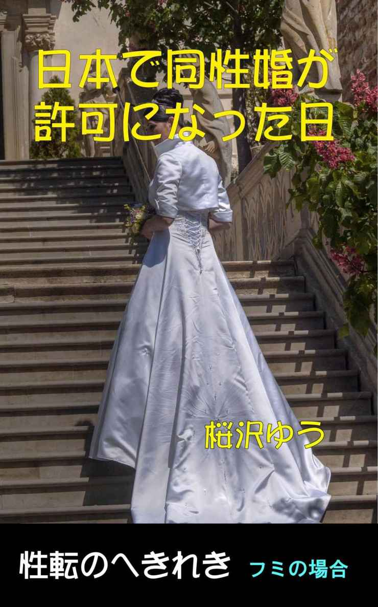

| 日本で同性婚が許可になった日: フミの場合 性転のへきれき | |
| 桜沢ゆう | |
| (2015) | |

2015年5月22日、アイルランドで同性婚を合法とする憲法改正の是非を問う国民投票が行われ、翌日開票の結果、賛成多数で合法化が決定しました。
渋谷の条例は、同性カップルがアパート入居や病院での面会を家族でないとして断られるケースが問題になっているという人道的問題の解決策という色彩が強いようですが、同性婚に近い状況を公的に認める決定として、十分にショッキングなものでした。
それに追い打ちをかけたアイルランドの国民投票のニュースは「そこまできたのか」という強い衝撃を日本人にも与えたと思います。
日本で同性婚が法制化されるのはいつになるでしょうか。同性婚なんて自分とは全く関係が無いと、気にも留めていない人が殆どです。性同一性障害の悩みを抱える人たちも、戸籍上の性転換は最優先課題でも、男性のまま、あるいは女性のままで、同性との婚姻を許可されることは、戸籍上の性転換が完了するまでの便宜的な措置と受け止める人の方が多いのではないでしょうか？
一方、セクシュアル・マイノリティの保護という世界的な流れに乗って日本で同性婚が法制化されることは十分にあり得ますし、相応の議論はなされてもあまり意識しないうちに成立してしまうというのは、ありそうな近未来の状況と言えます。
そんなニュースが流れても、殆どの人は「あっ、そう」、「日本でも成立しちゃったんだ」という程度に受け止めて、殆ど気にも留めないと思います。この小説は、そんな状況で起きてしまった物語です。
あなたは、「あっそう、僕には関係ないけど」と思っていても、重大な影響を被るかもしれないので可能性があるのです。
昼休みが終わり、海外営業2課の席に戻ってメールをチェックしていると、
「上原君、ちょっと。」
と課長から声がかかった。
僕は何かミスをしでかしてしまったのだろうか。課長が「ちょっと」と言って部下を呼びつけるのは問題が起きたときだけだ。
たまたま先輩社員たちは出張中だったり席を外していたりして、海外営業2課には今年の春、一緒に入社した一般職の香川愛子と僕だけしかいなかったが、愛子はニヤッとして「またドジったんでしょう。」とでも言いたげな視線を僕に投げかけた。
「はい、何でしょうか。」
僕は杉田課長の席の横に直立した。
「君、今日の夕方は空いているかね。」
鋭い目で課長が聞いた。
「はい、大丈夫ですが。」
「じゃあ、5時半に出られるようにしておいてくれ。少し大事な話があるんだ。」
課長が思いつめた感じの緊張した顔で言ったので、僕は余計なことは聞かない方が良いと思った。
「はい、承知しました。」
理由はわからないが、まずいことになった。僕が海外のお客さんに出したメールの書き方が悪いとか、最近先輩に指示されて出した韓国の得意先あてのメールのCC:欄に台湾のお客さんのアドレスを入れてしまったことについて再度叱られるとか、日本のお客さんとのアポの時間を間違えて1時間遅れて行ったとか、課長に叱られるネタはいくらでも頭に浮かぶ。先輩たちや香川愛子から「ミス上原」というニックネームで呼ばれる程だ。
だから、課長から叱られるのには慣れていたが、課長の席の横に立たされて皆に聞こえるようにどなられるか、かなり重大なミスの場合は会議室に呼ばれて一対一で叱られるのが普通だった。客先との接待なら職務能力の高い先輩か、客受けの良い香川愛子に声をかけるはずであり、わざわざ僕を5時半に外に連れ出すというのは、接待以外の理由だろう。
課長が僕を食事を食事に誘って言いそうなことは大体予想がつく。
「自分としては君を一人前になるまで育てたかったんだが、厳しい環境に置かれた当社では、そんな甘いことは許してくれそうにないんだ。」
というような適当なことを言われて、会社をクビになるか、最良のケースでも子会社への出向を申し渡されるかだろう。
「悪い話じゃないかも知れないわよ。気をしっかり持って、ミス上原。」
一部始終を見ていた香川愛子が、すっかり意気消沈した僕に励ましの声をかけてくれた。
運命の5時半が来て、課長がカバンを持って席を立ったので、僕は課長の後を追いかけた。180センチを超える大男の課長が早足で歩いていくのに遅れないようにするのは一苦労だった。エレベーターを降りて会社の玄関に歩いていくまで課長は一言もしゃべらなかった。課長は道路に出てタクシーを拾い、運転手に「新宿野村ビルまで行ってください。」と言った。
「上原君は福島市の出身だったね。」
タクシーの中で課長が聞いた。
「ご家族は全員福島におられるのかね。」
「両親と姉が実家に住んでいて、兄は仙台の病院で医者をしています。」
「じゃあ、上原家はお兄さんが跡を継ぐんだね。」
「はあ、父はサラリーマンで跡を継ぐというほどの家ではありませんが、跡継ぎは誰だと聞かれれば、間違いなく兄と言うことになると思います。」
ここで僕はふと思い当たった。そうか、課長は僕に結婚話を持ちかけるつもりなんだな。跡継ぎがどうのこうのと聞くのは、縁談の相手が一人娘なんだろう。わざわざ六本木に連れてくるということは、取引先の大会社の社長の一人娘だったりして・・・・。頭の中で想像が膨らんだ。しかし、いくら逆玉でも僕にとって相手の女性の外観は大切だ。
僕が結婚したい相手はモデル系美人だ。僕は163センチと小柄で、それが「ミス上原」というあだ名をつけられたもう一つの理由なのだが、結婚する相手は自分より背の高い相手を選ぶのが子孫繁栄のために望ましいと思っている。小柄な男性には背の高い女性に憧れる傾向が強いそうだが、それは生物学的にも理にかなった気持ちなのだ。
タクシーが新宿野村ビルに到着し、課長が向かった先は50階の展望レストランだった。
入口で課長が「杉田です。」というと、「2名様のご予約ですね。」といって、窓際のテーブルに案内された。
今日は課長と僕だけなのだ。そりゃあそうだろう、いきなり呼び出してその場で見合いということはないから、今日は話だけなのだろう。いや、まてよ、やはりクビか出向の話かもしれない。僕は気が気でなかった。しかし、テーブル席に着くと、もやもやした気持ちは吹き飛んだ。
「うわぁ、すごい景色ですね。」
眼下のビル群は夕日を浴びて黄金色に輝き、向かい合って座った課長の右頬への照り返しが、彫りの深い顔を引き立たせている。課長の表情から重苦しい感じが消えて、僕に対する視線が優しく感じられた。
「ここは地上210メートルなんだ。日が落ちた後の夜景はもっと素晴らしいよ。」
「きれいでしょうね。本当に楽しみです。」
「気に入ってくれてよかった。実はここは死んだ女房にプロポーズした場所なんだ。私にとっては最も縁起のいい場所であり、同時に最も悲しい場所でもある。」
僕はどんな言葉を返したらよいのか、迷った。
「存じませんでした。そんな大切な場所に連れてきていただいて光栄です。」
ソムリエールが来て課長はワインリストを見てボルドー産のカベルネ・ソーヴィニオンを一本注文した。間もなくワインが来て、少しワインを注がれた大きなワイングラスを慣れた手つきで回した後、窓の外の夕日にワインを透かしてから口に含み、喉で味わってから、「いいですね。」と言った。
「夕日に透かしてワインを見るなんて、似非ワイン通なことがバレバレですよね。」
と課長がソムリエールに言った。
「本当にワインが分かる方は、目に見えない情感までを読み取ることができると聞いたことがあります。」
女性が気のある男性だけに放つ艶を、課長に対するソムリエールの視線の中に見た僕は、課長が女性から見て魅力的な男性なのだということを改めて知った。立派な体格で彫りの深い顔をしているだけでなく、女性の目から見ると、世界中を歩き回ってきた男性の奥深い魅力がオーラのように発せられているのだろう。
課長の顔にやさしい微笑みが浮かんだ。
「今日は、個人的な話をするために急に呼び出して申し訳ない。」
僕は肩の荷が下りた気がした。個人的な話ということはクビや出向の話ではないのだ。
「ひょっとして、結婚に関するお話しですか。」
僕は単刀直入に聞いた。
「よく分かったね。君からそう言ってくれたら話は早い。」
課長はカバンの中から小さな箱を取り出し、僕に渡した。それは一辺が数センチの美しい箱だった。
僕がその箱を開けると、ダイヤモンドの付いた指輪が入っていた。
「君が好きだ。私と結婚してくれ。」
真剣な顔で課長が僕に言った。
「か、か、課長と僕が、けっ、けっ結婚ですか？」
「分かっていたんじゃないのか？」
「得意先のお嬢さんとかの縁談を持ってこられたのかと思ったんです。」
あっはっは、と課長は可笑しそうに笑った。
「縁談には違いないね。相手が私自身という点が予想外だったか。」
課長はもう一度、あっはっは、と笑った。
「先週金曜日のニュースを見ただろう。日本でも同性婚が許可されることになったというニュースだ。諸外国では同性婚を認める国が増えているが日本はまだまだ先の話だろうと思っていた。しかし、カトリックの比率が高いアイルランドの国民投票で同性婚が認められてから国際的な流れが加速した。
少し前に渋谷区が"結婚に相当する関係"と認める証明書の発行に関する条例を作ったことは君も知っているね。あれは同性カップルがアパート入居や病院での面会を断られると言う人道上の問題に対処するための条例だが、今回は同性婚に関する法律が、国際的潮流に乗って党勢を高める道具に使われる形で、憲法が拡大解釈されて一気に成立してしまった。
上原君が入社してうちの課に配属されたときには、香川愛子君と同じような身長で骨格も女性的な新人だな、と思っただけだった。君はとにかくミスが多くて、毎週のように呼びつけては叱ることになった。私は元々叱るのは苦手だが、いくら叱っても新手のミスを生み出す君を笑って見過ごしていては他の部下への示しがつかないから、叱らざるを得なかった。
君は素直だから、大きいミスをした場合に会議室で注意すると、いつも涙ぐんでいたし、席の横に立たせて叱るときも、心から反省したような顔をしていた。普通、部下を叱ると、後味が悪くて嫌な気持ちが残るんだが、君を叱った後は不思議に爽やかな気がした。
でも、君は同性だから、先週までは君に対する恋愛感情とか、特別な愛情は全く心の中に無かったんだ。
そんな時に同性婚が許可になったというニュースを見た。土曜日に娘たちとクリーニング屋に行った帰りに、同性婚のニュースを聞いて興味を持っていた上の娘が"お父さんがクリーニング屋のお兄ちゃんと結婚したら私は何て呼べばいいの？お母さんじゃおかしいよね。"と私に質問したんだ。クリーニング屋にイケメンの若い男がいて、娘はそのお兄ちゃんが好きだったからね。
その時に君の顔がちらっと頭に浮かんだ。いやあ、私もドキッとしたよ。だって、君の横顔は死んだ女房とかなりの共通点があるし体格もそっくりとは思っていたから。
夜一人で水割りを飲みながらそのことを想い起こした。そうしたら、叱られた時の泣き顔とか、べそをかいた顔や、褒めてあげた時の純真な笑顔が頭に浮かんで、君を好きだという感情がどっと湧いて来た。私はそれまで女性以外に恋愛感情を抱いたことが無かったから、自分自身が信じられなかった。
自分はどうかしてる、ひと晩寝たら治るだろう、と思ったが、日曜日になると、君の笑顔が頭の中から一日中消えなくなった。夜ひとりで寝ていると、君の顔が浮かんできて、股間がビンビンになった。女性以外を想いながらオナニーしたのは生まれて初めてだった。
今週に入ってからは会社に来るのが辛かった。私の席からは君の横顔が見えるからね。君を見ると胸が苦しくてたまらなくなった。とうとう昨日の夜、娘にそのことを打ち明けたら、こう言ってくれた。
"私のお母さんは天国にいる人だけよ。パパが連れてくる人を私はお母さんとは呼ばないわよ。それで良ければパパの幸せのために私はその人と仲良くするわ。"
だから今日君にプロポーズすることを決心したんだ。その指輪は死んだ女房の結婚指輪だ。実は君と女房はイニシャルが同じなんだ。もし小さすぎて入らなければ直すから、ちょっと測らせてくれ。」
僕は何と答えるべきか分からなかった。課長の話は心を打つ話だし、娘さんにまで話したということは、本気である証拠だ。でも、課長は男で、僕も男だ。僕は小さい時から「女の子のように可愛い」と言われると悪い気はしなかったが、男性を好きだと思ったことは一度もなかった。
日本でも同性婚が認められたというニュースをテレビで見た時、以前アイルランドの同性婚のニュースを聞いた時と同じように「へえ、そうなんだ」と思っただけだ。同性愛の人たちにはグッドニュースであり、もし友人にそのような人がいたら「おめでとう」と言ってあげるだろうが、僕自身とは何の関係も無い話であり、そのニュースが自分に少しでも影響を与えるとは思ってもみなかった。
課長が指輪のサイズをチェックしようと、指輪を取り出して僕の左薬指に入れてみると、少しきついが、するりと入った。
「入るじゃないか。君の指は細いんだね。」
「いえ、きつめですよ、ほら。」
指輪を抜こうとしたが、第2関節に引っかかって抜けない。
「洗剤をつけたら抜けるよ。」
と課長が言った。
前菜の皿が来てテーブルに置かれた。
「ちょっとトイレで指輪を抜いてきます。」
立ちあがろうとする僕を課長が制した。
「まあ、食事の後で良いじゃないか。」
と言ってワイングラスの柄を右の指で持った。
「乾杯、君の笑顔に。」
「困りましたね。それはお受けできませんが、僕はお嬢さんたちの幸せを願って乾杯させていただきます。」
「ありがとう。」
僕たちはグラスをチンと言わせてワインを飲んだ。フローラルな華やかさは無く、僅かな酸味が、喉にかかる樽の香りを際立たせてくれるワインだった。ワインのことはよく知らない僕にも、このワインが職場や友人との飲み会に出てくるワインとは何段階もレベルの違う高級なワインであることが実感できた。このワインを僕の為に選んでくれた課長の気持ちが僕の心を揺らし、それが却って申し訳ないと言う気持ちを強くした。
「僕は体質的に女性しか受け入れられないと自覚しています。お話しは感謝しますが、お許しください。申し訳ございません。」
曖昧な返事をすべきでないと思い、課長のプロポーズはきっぱりとお断りした。
「今すぐ返事しないでいい。折角の料理だから食べてくれ。」
そう言って課長は食べ始めた。
僕もフォークを手にして、前菜のアスパラガスにナイフを入れた。口に入れようとフォークを上げると、夕日できらめく左手の指輪のダイアモンドの黄金色の輝きが、僕の心臓を貫いた。
「君は海外に行ったことはあるの？」
突然課長がそんな質問をした。
「はい。入社前に友人と卒業旅行ということで西海岸に行きました。」
「どうだった？」
「まず、海の色に感激しました。勿論映画などでは見ていたわけですが、あんなに美しいコバルトブルーの海が目の前に実在していることに驚きました。空も抜けるように青くて、信じられないほどでした。それから、ロサンゼルスからバスでメキシコのティワナに行ったんですが、貧しい子供たちを見てショックでした。同じ世界なのに、人々の置かれた状況にそれほど差があるのを見て心が痛みました。」
「君らしい感想だね。でも、世界を歩き回ると君がショックを受けたティワナの貧しささえも天国に見えるほど悲惨な場所があちこちにあるんだよ。南カリフォルニアに負けない青い空や海がどこにあるのか、僕にもすぐには答えが浮かばないが、地中海の空と海の青さには少し違った優しい光が含まれているし、抜けるような空の青さだけならスイスは負けないだろう。若い君はこれからの人生で、色んな国に行って、さまざまな新しい美しさや、悲しさや、貧しさや、悲惨さや、未知の喜びを、ひとつひとつ経験していくことができる。」
課長の言葉には人間としての重みと魅力が感じられ、自分で世界を歩き回った経験に基づく奥の深いものなのだと思った。聞きかじりや知ったかぶりで出てくる言葉とはひと味もふた味も違っていて、一つ一つの言葉に心臓を掴む力がある。僕は一人の人間として課長を素晴らしいと思った。
「そんな世界を娘たちにも見せてやりたい。そこに君もいて欲しいんだ。私は世界中の価値のあるものや色々な美しいものを君たちに見せてあげて、その時に自分も再体験したいと思う。」
僕は生理的に男性と結婚する気には絶対になれないが、課長の言葉は単に胸に響いたというよりも、身体の芯から揺さぶられるのを感じた。「はい」と答えてあげることができなくて申し訳ないと思った。僕が返す言葉を選んでいるうちに課長が続けた。
「君はアメリカ人女性と日本人の女性のどちらが好きかな？」
「西海岸への旅行の際に出会ったアメリカ人女性たちは、陽気でハキハキしていて、話していて楽しかったです。それに僕は背の高い女性が好きですから、アメリカ人女性の方が好きかも知れません。」
「僕も知的でウィットに富んでいて配慮のできるアメリカ人女性なら嫌いじゃないが、平均的なアメリカ人女性は、表現が直截的過ぎて、自分の感情を大事にするから、話した後で疲れが残る。君はまだ知らないだろうがヨーロッパの女性はかなり日本に近い。先日ベルギーのお客さんのご夫婦と食事をしたが、奥さんは自分の意見はしっかりと表明するのに、ご夫君や私に対する女性らしい配慮が言葉の端々に感じられて、動作もとてもエレガントだった。日本女性はまだ女性としての自己表現能力がそこまでは開発されていないかも知れない。でも、恥じらいとか、少女のような素直な表情とか、相手の男性を立てようとする姿勢とか、欧米の女性が足下に及ばない美しさが沢山あるよ。」
やはり、世界中の女性を知る人の話は面白い。
「僕はヨーロッパの女性もアメリカ女性と同じかなと思っていました。」
「じゃあ、少し切り口を変えて2つ質問しよう。今、君が女性になるとしたら、アメリカ人女性、ヨーロッパ人女性、日本人女性のうちのどれになりたい？2番目の質問は、今の君はアメリカ人女性、ヨーロッパ人女性、日本人女性のうちのどれに近いと思う？」
海外の女性に対する僕の意見を聞いた後で、いきなり「もし女性だったら」という質問に切り替えられて、ぼくはうろたえてしまった。
「女性になりたくはありませんが、もしどうしてもひとつ選べと言われれば、何でもストレートに主張できるアメリカ人女性を選びます。それから、今の僕がどれに一番近いかというご質問には悩みます。アメリカ人女性のように自己主張できるタイプではないし、そのベルギーの奥さんのようなエレガントな気配りは到底できないし、日本人女性の古典的な特質は男の僕には無縁だし・・・。答えとしてはどれにも当てはまらないと思います。」
「その答えで僕のインスティンクトが正しかったことが証明されたよ。僕が何故君をこんなに好きになったかわかるかい？」
話す角度や言葉を変えて、僕が何らかの言葉を返さざるを得ないように追い込む課長のテクニックに切り崩されていくのが分かった。自分がもし女性だったら課長の思いのままに落ちてしまうだろうと思った。
「い、いえ、わかりません。」
はい、と答えられるはずはない。本当は沈黙していればよかった。
「毎日、ストレートに主張できるアメリカ人女性のようになりたいと思って一生懸命仕事をしている君がいる。でも、叱られる時に見える君の本質は、古典的な日本女性の特質そのものなんだ。恥ずかしそうにしていて、素直な気持ちが感じられて、そして私の気持ちに応えようとして一生懸命私の心を覗こうとする。死んだ女房もそんな特質を持っていたが、若い時でも君ほどじゃなかった。」
僕の心はズタズタになる寸前まで切り崩されていた。
「僕、よくわかりません。男ですから。」
そう口にするのが精一杯だった。
「でも、私が君にそばにいて欲しいと思う理由は、理屈としては理解できるだろう？」
それは質問と言うより強引な誘導だった。
「は、はい。理屈としては・・・・。」
「君の気持ちはよく分かる。将来女性と結婚するつもりだったのに、突然年上の男性から結婚してくれと言われて、ハイと答えられるはずがない。君が一人の人間としての僕を嫌いじゃないことは分かっている。勝手に決めつけて悪いが君の目と表情と口調は私に対する好意に溢れていて、私は感謝している。もし私の了解が間違っていればそう言ってくれ。」
「いえ、おっしゃる通りです。僕は男性として課長を尊敬していますし、憧れています。男性同士というだけが決定的な問題です。」
「今、君がそう思うのは当たり前だ。いきなり男性から求婚されるのはまさに青天の霹靂であり精神的に受け入れられるはずがない。だから、今すぐに返事をくれなくてもいい。今日のところは、私が君に恋をしてしまい、求婚したという事実だけを受け止めてくれ。その上で、私の結婚を拒否するならその理由を私が納得できるように示してくれ。単に男同士だからというのは理由にならないよ、法律が変わったんだから。法律で許可されているのに拒否する理由が本当にあるのかどうか、よく考えてくれ。」
「まず、セックスが成立しないし、男性同士が裸で抱き合ったら嫌悪感が出てくると思います。」
とっさに答えたが、それは課長が想定していた通りの返事だった。
「セックスの目的は子孫を作ることと、その対価としての快楽だ。私は娘が2人いるから、もう打ち止めにしたい。快楽については、やってみないと分からない。私は男を抱いたことは無いが、君への恋心が全ての障害を取り除いてくれるかも知れない。でも、正直なところやってみないとわからない。やってみて嫌悪感や違和感があれば、君へのプロポーズは撤回する。君は男に抱かれたことがあるのか？」
「勿論ありません。考えたことも無いです。」
「じゃあ、私と裸で抱き合ったら嫌悪感があると、どうして断言できるんだ？君は人間として僕に好意を持っていると言ったばかりじゃないか。あれはお世辞だったのか？実際に私に抱かれてみたら、女性と抱き合う以上の快感が得られるかもしれないじゃないか。」
「そ、そんな。」
「今これからラブホテルに行って確かめようと言っているわけじゃない。実際にやってみないと分からないのだということを説明しているだけだ。勿論、君が私のプロポーズに早く答えを出したくて、今夜済ませたいというなら、喜んでここのホテルにでも部屋を取るが。」
「いえ、今日は勘弁してください。」
「じゃあ、君の決心がつくまで延期しよう。」
僕は、後日応じることを約束させられたことになったのだろうか・・・。
「百歩譲って、抱き合うことができたにしても、社会的な制約が多すぎます。家族や友人が僕をバカにするでしょうし、会社でも陰口をたたかれるのが目に見えています。」
「きっとそうだろうね。でもこの世の中に万人が祝福する恋愛結婚なんてそんなにあるものじゃない。国籍や、家柄や、家族問題や、色んな問題を夫婦で乗り越えるのが結婚というものだ。法律が変わった今となっては性別の問題もそのひとつに過ぎないんじゃないか。一緒に乗り越えていこう。君のことは絶対に私が守る。でも、会社でプラスにならないのは確かだろうな。君だけじゃなく私にとっても。その点は、もう少し時間をかけて、一緒に考えていこう。君の心の整理がついてからプロポーズの返事をくれればいいから。」
課長と論争しても、理屈では勝ち目がないことを思い知らされた。
「お嬢さんの心の問題も大事です。先週末にはお父さんが苦しんでいるのを見て許してくれたかも知れませんが、実際に僕が家に来たら、気持ちが変わるのは確実です。天国のお母さんの代わりに見たことも無い人が、しかも男性が家に入るんですよ。僕なら絶対に耐えられないと思います。」
僕は「もし結婚して課長の家に住むことになったら」という想定で反論するという所まで追い込まれていた。それが実際に起こり得ることのような気がして、その場合に2人の娘さんたちから敵として拒否される事の悲しさが敗北感のように僕にのしかかって来た。
「君の言う通りだ。娘たちが君を心から受け入れない場合は、非常に申し訳ないがプロポーズを撤回せざるを得ない。」
"撤回"と言う言葉を想定していなかった僕は、狼狽えてしまった。今更酷い、という感情を抱く自分の方がおかしいのだが。
「とにかく娘に会ってもらうことが先決だ。」
「お嬢さんが嫌ならこの話は無かったことにするという前提で、とにかく会えと言うことならお受けします。」
「ありがとう。」
課長は両手で僕の手を強く握った。
「じゃあ、明日うちに来てもらえるかな。」
「はい。」
話し合いの形式であっても、全て課長の思い通りに事が進んでしまう。
「娘たちが君を受け入れると仮定して、最終的な回答期限は1ヶ月後ということにしよう。1ヶ月後に、私と結婚してくれるかどうか、最終的な返事をくれ。それまで、お互いに良く考えて、悔いのない決断をしようよ。それから、ちゃんと話し合うために、毎週金曜日の夜にデートしよう。週末もあけておいてくれ。そういうことで良いね。」
私はその申し出を受ける以外に道はないと諦めた。
「はい、お受けします。あ、結婚をお受けするのじゃなくて、今おっしゃった1ヶ月プランをお受けします。」
「君のそんな小さな悪戯っぽいウィットやそれを口にする時の誘惑するような視線が私を虜にしたってことに、全然気がついていないんだから。」
と言って課長は笑った。
土曜の朝、小田急線の向ヶ丘遊園駅に降り立つと、改札を出たところに紺のジャージー姿の男性の姿が目に入った。人の群より頭一つ高いその長身の男性は、長い右脚の膝を少し曲げ、ジャージーの上着のポケットに両手を突っ込んで立っている。付近を通る女性の多くが、その男性の精悍で彫りの深い顔をちらりと見上げるが、彼は女性たちのそんな視線を全く意に介していない。
課長が女性にモテることは知っていたが、それは整った顔の長身の男性にはありがちな現象であって、昨夜までの僕は気にも留めていなかった。道行く女性たちが課長に向ける視線が、告白を受けた翌朝の僕に理不尽な焦燥感を呼び起こした。異性から見た課長の魅力がこれほど強烈なものだとは思ってもみなかった。
「上原君、こっちだよ。」
課長が右手を高く上げて僕に合図した。
僕は合図されて初めて課長に気づいたフリをした。
「おはようございます、課長。わざわざ迎えに来ていただいて恐縮です。Googleマップを見て自分で行けましたのに。」
「とんでもないよ。狙った人を落とすには車で迎えに行くのが普通なんだが、娘たちを放って置きたくなかったから。」
「そりゃそうですよ、課長。お嬢さんの幸せが一番ですから。」
「プライベートなんだから、課長はやめてくれ。」
「何とお呼びすればいいんでしょうか。杉田さん、で良いですか？」
「上原君に杉田さんと言われるのはしっくりこないな。死んだ女房からは、お父さん、とか、あなた、とか、健司さん、とか呼ばれていたが。」
「お父さんとか、あなたとは呼べるはずがありません。健司さん、というのもちょっと・・・・。」
「どう呼ぶかは君に任せるよ。課長と杉田さんだけは避けてくれ。上原君の名前は文夫だったな。」
「はい。」
「文夫君、というのも変だから、君、で通しておこう。」
向ヶ丘遊園駅から杉田課長が住んでいる社宅まで住宅街を並んで歩いた。すれ違う女性の2人に一人が杉田課長を見上げた後で、ちらりと僕に視線を向ける。僕も普段一人で歩いている時には、すれ違う女性から異性としての興味を意味する視線を受ける。もっとも、今日の杉田課長と比べると何分の1かの比率だが。今朝僕が感じる視線は余計なものが目に入ったとでも言いたげな敵意に近い視線であり、普段女性から受ける視線とは全く違っていた。
課長の家は大規模な分譲マンションの一室だった。うちの会社がその分譲マンションの数十戸を買い取って社宅にしていた。
「ただいま。」
課長宅のドアを入ると、
「パパだ。おかえり。」
という声が聞こえて、2人の女の子が走って来た。一人は小学校2年生ぐらいだろうか。もう一人は就学前のあどけない少女だ。2人とも手足が伸び伸びした感じで将来美人になることが約束されている美しい少女だった。
「こんにちは、お邪魔します。」
少女たちは僕の言葉には答えず、パパの手を引いて居間の方に進んだ。
「香奈、美菜、お兄ちゃんにご挨拶しなさい。」
課長が言うと、二人は声を合わせたように小声で「こんにちは」と言った。
僕はカバンから赤いリボンのついた小箱を3つ取り出した。
「香奈ちゃん、お土産だよ。よろしくね。」
「はい、これは美菜ちゃんに。」
受け取った2人の目が輝いた。
「パパ、開けていい？」
と香奈が聞いて、課長が「いいよ」と答えた。
香奈は赤いリボンを上手に解き、包み紙が破れないように丁寧に開けてクッキーの入った箱を見つけると、嬉しそうな顔をした。妹の美菜も少し遅れて一挙手一投足香奈を真似ながら箱を開けた。
「申し訳ないね、上原君。昨夜約束したばかりなのに、よくお土産を買えたね。」
「昨夜電車を降りてコンビニでクッキーとリボンを買ったんです。包み紙は以前に取っておいたものを使いました。」
「それ、パパの？」
香奈が、残りの1つの小箱を指さして僕に聞いた。
「悪いね、私にまで。」
と課長が言った。
「違うよ、香奈ちゃん、これはママのだよ。」
と僕が言うと香奈は「あっ、そうか」という可愛い顔を見せた。
「パパの分は無いんです。すみません。お仏壇はどこですか？」
僕たち3人は課長の後に続いて隣の部屋に行った。それは6畳の客間で、棚の上に亡くなった奥さんの写真が掛かっていた。僕は写真の前にクッキーの小箱をお供えして手を合わせ、しばらくお祈りした。
「ママに何て言ったの、上原君？」
香奈が僕に質問した。
「自己紹介をしてから、香奈ちゃんと美菜ちゃんにがとても可愛く元気に育って素晴らしいですね、ってお話ししたんだよ。」
「ママは複雑な気持ちだと思うわよ。」
「どうして。」
「だって、パパが上原君のことを好きになったから、取られると思って怒ってるわよ、きっと。」
「天国のママはこれからもずっとパパの奥さんだし、香奈ちゃんと美菜ちゃんのママだよ。僕は3人のお友達で、ママのことも大好きだから。」
「本当？それなら私は上原君をうちに入れてあげる。」
「どうもありがとう、香奈ちゃん。」
「上原君のお名前は？うちに来るのに、上原君じゃ変よね。」
「上原文夫だよ。」
「フミオね、じゃあ、フミちゃんって呼ぶわ。」
「フミちゃんか、でも女の子みたいな名前はいやだな。」
「でも、ママみたいに、パパや私たちの世話をしてくれるんでしょう、ご飯を作ったり、お洗濯をしたり。パパからそう聞いたわよ。」
「パパがそんなことを？」
僕は課長に非難の視線を投げた。
「いや、それは一緒に住むようになってから決めればいいことだ。」
と、課長は誤魔化すように言った。
僕は昨夜、課長が単に僕が好きで一緒に居たいから結婚を申し込んだのだと受け止めていたが、課長が頭に描いている結婚後の僕はきっとお手伝いさん代わりなのだ。それは話が違う。仮に結婚したとしても僕が会社を辞めて専業主夫になるということは考えられない。
「フミちゃん、こっちに来て。」
香奈に呼ばれて香奈の部屋について行った。僕は少し課長に腹が立って、課長の近くに居たくないと思ったところだった。香奈は机の上のアルバムを見せてくれた。それは小学校の遠足の写真だった。美菜も僕の横に座って一緒にアルバムを覗きこんだ。
「これが一番のお友達のアユちゃんよ。」
香奈ともう一人の女の子が2人で写っている写真だった。
「左右の三つ編みが可愛いよね。」
「そうでしょう。アユちゃんのママが結ってくれるんだって。」
香奈が遠くを見るような目をしたので、僕は母を亡くした香奈がとても気の毒だと思った。
「前髪をこんなに短く切るのが流行ってるんだね。アユちゃんはとても似合ってるけど。」
「そうなの。私もやってみたい気がするけど、失敗すると怖いわ。」
「ちょっとやらせてみて。」
僕は香奈を鏡の前に連れて行って、前髪を指で3センチ上げて見せた。
「意外と似合うかも。でも、上手な美容院でやった方がいいよ。」
「三つ編みはどうかな。ひとりでやってもうまく行かないんだ。フミちゃん、手伝ってくれる？」
「うん、いいよ。やり方を教えてくれたら手伝ってあげる。」
香奈は髪の毛を左右に分け、右半分を3つに梳いて編み始めた。鏡を見ながら一生懸命に編んでいるが、すぐに緩んでだらりとシマりが無くなってしまう。香奈が途中で髪を押さえて僕が編むと形が良くなった。3度やり直して綺麗になり、ゴムバンドで固定した。左側は1度目でうまく行った。美菜もやってほしそうだったが、時間がかかりそうなので、香奈のヘアバンドでポニーテールにした。
「ほら、可愛くなったね。似合うよ。」
「本当だ。」
香奈は色々と角度を変えて鏡の中の自分を見て気に入ったようだった。
「フミちゃんが来るといいな。パパはこんなことは全然してくれないのよ。頼めばお洋服は買ってくれるけど。」
「パパは忙しいし、男だから、女の子のことはあまり分からないんだよ。」
「フミちゃんは、今は男なのに、どうして分かるの？」
「お姉ちゃんがいて、小さい時から見て来たからかな。」
「フミちゃんは、うちに来たら、女になるの？」
「どうして？」
「だって、パパの奥さんになるんでしょう？」
「パパがそんなこと言ってたの？」
「そうは言ってなかったけど、パパの奥さんで、私と美菜のお母さん代わりになるんでしょう？男のままだったら変じゃないかな。」
「男でも奥さんになれる、という新しい法律ができたから、パパはフミちゃんに結婚してくれって言ってるんだよ。」
自分をフミちゃんと呼んだのは、その方が他人事のような気がして抵抗感が薄れたからだった。結婚してくれと言う話と、奥さんになるという話は、僕の頭の中でまだかみ合わない。
「ふうん、そうなんだ。」
香奈と僕が真剣に話している間、美菜は僕たちの間に座って、二人を交互に見上げていた。静かで人なつっこい女の子だ。
香奈はアユ以外のクラスメートのことについても、写真を見せながら、一人一人詳しく教えてくれた。香奈の小学校での毎日が目の前に見えるようだった。美菜も保育園の友達について話してくれた。
香奈に聞かれて、僕は福島の姉や父母のことを話した。香奈は僕の父母を自分のパパや亡くなったママと同列に受け止めていて、僕をパパと自分の中間か、自分に近い立場と見ているようだった。
「パパは会社でもやさしいの？」
香奈が聞いた。
「パパは課長でえらいから、怖い顔をしてるよ。フミちゃんはしょっちゅう間違いをしでかして、パパに怖い顔で、ちょっと来なさい、って毎日呼ばれるの。怖い顔で怒るから、フミちゃんは涙を流しながら、ごめんなさい、許してくださいって言うんだ。そうしたらパパはにっこりして許してくれる。」
「私も時々パパに叱られて涙が出るから、フミちゃんと一緒だよ。でも、美菜のことは滅多に叱らないんだ、パパは。」
僕たちが話している途中で課長がドアを開けたが、入って来ずにドアを閉めたので、僕たちは気にせずにおしゃべりを続けた。香奈はタンスから月曜日に学校に着ていく予定のお気に入りの洋服を出してきて、着て見せてくれた。
僕は自分が子供好きだと特に認識したことは無かった。姉には2人の男の子がいるが、乱暴な言葉を大声で言ったり、ものを投げたりするし、いつも騒がしいので、小さな子供は煩わしいものだと言う先入観があった。香奈と美菜にはそんな煩わしさは皆無だった。お互いに、少し利害関係のある相手と思って、控えめに接したからだろうか。完全に対等な立場で、相手と仲良くなる道を模索しようという気持で面会したのが幸いしたのかも知れない。香奈は香奈の目から見て僕の良いところを見つけ出して、それを尊重しながら友達になろうという気持ちで接してくれたのだと思う。僕は香奈が昔からの親友のような気がして、香奈も僕のことを同じように感じてくれているようだった。
「おい、お前たち、ご飯ができたらぞ。」
課長がドアを開けて僕たちを呼んだ。
「パパが作ってくれたんだね。」
僕は香奈に驚きの気持ちを伝えた。
「パパの作ったご飯は美味しいんだよ。フミちゃんもきっと気に入るよ。」
「すみません、お手伝いすべきなのに。」
「気にするな。フミちゃんは今日はまだお客さんだから。でも、今までよく子供たちとの話が続けられたな。」
「香奈ちゃんたちと話してると時間が過ぎるのを忘れます。」
課長が作ったのはスパゲッティだった。出来合いのミートソースを使っただけらしいが、それだけにとても美味しかった。香奈たちは僕に対する遠慮が無くなってきて、食事しながら、ミルクを欲しがったり、こぼしたものを僕が拭くのを当然のように受け止めたり頼んだりするようになった。僕は課長に全て食事の準備させたことへの後ろめたさもあって、あたかも主婦になったかのように立ち回った。食事の後、課長が皿を洗おうとするのを制して、僕が片付けた。
午後、課長は滞っていた雑用や日用品の買い物のために外出する必要があり、僕がついていくのは不適切なので、僕たちは3人で留守番することになった。
「フミちゃんはアナ雪は見たの？」
「有名なところは見たけど、全部は見てないよ。」
「なんだ、まだ見てないんじゃない。一緒に見せてあげる。私は10回以上見たわよ。」
香奈がアナと雪の女王のDVDをセットし、3人が並んで見始めた。見終わった後、ベランダに干されていた山のような洗濯物を取り入れて3人で一緒に畳んだ。香奈に教えてもらって、課長と香奈と美菜の引き出しにしまった。課長は溜まっていた洗濯物を今朝自分で洗濯機で洗って干したのだろう。毎日仕事で忙しいのに大変だろうなと思った。
「美菜ちゃんは誰が保育園に迎えに行くの？」
「おばちゃんだよ。」
「おばちゃんって親戚の人？」
「違うよ。パパが雇っている人。今月から新しいおばちゃんに変わったの。その人が夕飯を作ってくれるのよ。私と美菜が食べ終わったら、おばちゃんは帰るわ。」
毎日そのために専門のお手伝いさんを雇っているわけだ。そんな方法もあるのだなと感心したが、香奈や美菜は慣れたといっても心細いに違いない。もし手違いがあってお手伝いさんが来なかったり、香奈たちが何かの理由で大人の助けが必要となったら大変だろうなと気になった。香奈たちには是非母親が必要だ。
課長が帰宅したのは午後5時過ぎだった。
「じゃあ、僕そろそろ失礼します。」
当初の目的である課長のお子さんとの顔合わせは完了し、僕はプロポーズを断る理由としては使えないと認めざるを得なかった。
「そんなこと言うなよ。フミちゃんの分も含めてすきやきの材料を買ってきたんだから、一緒に晩飯を食べていってくれよ。」
「フミちゃん、一緒にご飯を食べようよ。」
香奈が言い、美菜は「帰っちゃ駄目。」と僕の手を離さない。
課長がすきやき用の電気鍋をテーブルに準備する間に、僕は課長が買ってきた食材を大皿に準備した。香奈と向かい合って美菜の横に座り、3人とおしゃべりしながら美菜が食べるのを手伝うのは新鮮な経験だった。
「いつもはフミちゃんの場所には私が座ってるのよ。でも、こうやってパパの横に座るのも大人になったみたいで楽しいわ。」
と香奈が言った。
「フミちゃん、美菜の世話ばかりしていて、自分は殆ど食べていないんじゃないか？ちゃんと肉食べろよ。」
「十分頂いてますよ。パパとは身体の大きさが全然違うから食べる量も違うんですよ。」
楽しい食事が終わって、僕は課長に手伝って貰いながら後片付けをした。
「じゃあ、こんどこそ失礼します。」
「明日は日曜日なんだから泊まって行けよ。他に用があるのか？」
「特に用事はないですけど。」
「フミちゃん帰らないで、お願い。」
香奈と美菜に抱きつかれて僕は悪い気がせず、一泊することにした。
課長が風呂にお湯を入れて先に入った後、香奈と美菜の誘いに乗って僕も一緒に入った。姉の息子たちをお風呂に入れてあげた時は頭にお湯をかけると泣き叫ばれていやな思いをしたが、香奈と美菜はとても賢かった。香奈は自分でシャンプーができたし、美菜の長い髪をベビーシャンプーで洗ってあげると僕の膝の上で気持ちよさそうにしていた。
「フミちゃん、服を着ているとママみたいだけど、やっぱりおちんちんがついていて、おっぱいも小さいね。」
「フミちゃんは男だからパパと同じだよ。」
僕はペニスを両足の間に隠して答えた。
「パパとは全然違うわよ。パパは身体中に毛が生えていてゴツゴツしてるのよ。すっごく大きいんだから。」
子供の目から見ても課長と僕の身体はそんなに違うのだ。
香奈と美菜を送り出してから風呂をきれいにして、僕は風呂から出た。課長が自分のパジャマとトランクスを出しておいてくれたのでそれを来た。課長のパジャマは僕には大きすぎたので、袖もズボンの裾も2回折り返した。
「フミちゃん、ダブダブの服着てる。」
香奈が僕を指さして笑い、美菜も「ダブダブだ。」と言って笑った。
「いくらなんでも大きすぎるな。転ぶと危ないし、着替えた方が良いな。ママのパジャマを着ると良いよ。」
「フミちゃん、こっちよ。」
香奈に手を引かれて、亡くなった奥さんの服が入っているタンスの引き出しのところに行った。香奈がパジャマを出してくれて、僕はそれに着替えた。それはピンクとグリーンの斜めのチェックが入った白い半袖のパジャマで、ズボンは膝の少し下までの長さだった。胸の開きが大きいのが恥ずかしいが身体にフィットしている。
「すごく似合ってる。ママみたい。」
香奈が感心した口調で褒めてくれた。
居間に戻ると課長が僕の姿を見て立ち上がり、怖い目で僕をじっと見た。
「どうかしましたか。」
と僕が聞くと、課長は元の表情に戻ってソファーに座った。
「女房が帰ったみたいでドッキリしたんだ。」
「よしてくださいよ。写真を見ましたけど、言われてみれば少し似ているという程度ですよ。僕は髪は短いし身体が男ですから。」
「身体の大きさと全体の雰囲気がドキッとするほど似てるんだ。なあ、香奈そう思わないか。」
「フミちゃんはママにすごく似てるわ。今日フミちゃんが家に入って来たときにはびっくりしたもの。」
「どうして今まで言ってくれなかったの？」
「ママそっくりに化けた人がパパを取り上げるのが怖かったの。でも、フミちゃんがいい人だから好きになったのよ。」
家族のような団らんがあって、9時になり子供たちが寝る時間になった。子供たちが歯を磨いている間、ソファーで課長の横に座ってテレビのニュースを見た。課長がチラチラと僕を見る視線に気づいて課長を見ると、課長の股間が盛り上がっていた。課長はクッションを膝の上に置いてそれを隠した。
「フミちゃん、一緒に寝ようよ。」
香奈と美菜に言われて、僕は「うん、それがいいね。」と立ち上がった。
「パパ、お休みなさい。」
香奈と美菜を真似して僕も同じ事を言った。
子供部屋に2人のベッドが並んでいた。僕は美菜のベッドに並んで横たわった。美菜は僕の左腕に抱きつくようにして、あっという間に寝息を立て始めた。
「フミちゃん、まだ起きてる？」
香奈は眠れないようだった。
「フミちゃん、明日帰ってしまうんだよね。」
「うん。月曜日から会社に行かなきゃならないから。」
「次はいつ来てくれるの。」
「パパに聞かなきゃ分からないけど、来週か、再来週かな。」
「できるだけ早く来てね、お願い。」
寂しそうな口調が心に響いた。
「うん。フミちゃんも香奈ちゃんに早く会いたい。」
それは本心だったが、勿論僕には課長のプロポーズを受ける気持ちはなかった。そんな無責任な言葉で取り繕う自分を恥ずかしい人間だと思った。
翌日の日曜日も一日中課長の家で家族のように過ごし、夕食を片付けた後、一人で家を出て駅まで歩き、複雑な思いで家路についた。
毎週、月曜日の朝に感じる倦怠感。
それは「雨の日と月曜日はいつも落ち込んでしまう。」というカーペンターズの曲の倦怠感と似ている。仕方ないと分かっているから行くけれど、出来ればどこにも行かずにブラブラしていたいという気持ちだ。
でも、その月曜日はいつもの倦怠感に加えて、どこから来るとも知れない重圧があった。からりと晴れているのに雨傘をさしたいような。
「おはようございます。」
課長はいつものように「おはよう」と答えて、何事も無かったかのように平然とパソコンに向かっている。僕はどんな横顔を課長に見せればよいのだろうか。プロポーズは断ろうと心に決めていた。僕は男だ。課長も男だ。例え法律が許しても男と男が結婚できるはずがない。それに明らかに年長であらゆる点において格上で20センチも背の高い課長と結婚すれば、僕は奥さんのような役割を果たすことを強いられることが目に見えている。亡くなった奥さんのパジャマを着た僕が香奈、美菜、課長と過ごした土曜日の夜の団欒の光景が頭の中に蘇る。結婚後の4人の関係はまさにあの光景の通りになるだろう。課長が僕に結婚してくれというのは女になれというのに近いのだ。それは無理な話だ。
元々課長の家に行ったのは、「娘たちが君を心から受け入れない場合は、非常に申し訳ないがプロポーズを撤回せざるを得ない。」という課長の言葉を受けて、香奈・美菜が僕を心から受け入れるはずがないことを証明するためだった。ところが香奈・美菜が僕を好きになってしまったどころか、僕ももう一度会いたくて仕方ない気持ちになっている。
プロポーズを断ることは決めているが、それは香奈・美菜の心に傷を残し、その傷は僕の心を痛め続けるだろう。
「上原君、金曜日は大丈夫だった？」
香川愛子は同期の僕に対する思いやりと好奇心の両方を持っている。
「僕を元気づけるために飲みに誘ってくれただけだった。」
「いいわね。私も飲みに連れて行ってくれて元気づけて欲しいなあ。どこに飲みに行ったの？」
「新宿の方だよ。」
「一杯飲み屋、それとも洋風？何という飲み屋か教えて。」
隠しても誰かに目撃されていたら却って怪しまれるので僕は本当の場所を香川愛子に教えた。
「ロマンチックね、羨ましいわ。男性2人で行くには惜しい場所だわ。」
それ以上追及されることは無く、僕は普通に仕事を続けた。課長の僕に対する言葉や視線も普段と全く変わらなかった。
気まずい思いをしたのは昼食後だった。
「ねえ、上原君、土曜日に課長のお宅に行ったの？私の友達が上原君を向ヶ丘遊園駅で見かけたらしいのよね。」
僕はとっさに、隠してもためにならないと思った。
「そうだよ。実は金曜日に飲んだ時に初めて知ったんだけど、課長は去年奥さんを病気で亡くして2人のお嬢さんの面倒を自分で見ているんだよ。課長は土曜日に出かける用があったからお手伝いさんを手配しておいたのが、手配ミスで来てもらえないから困っていると聞いて、それなら僕が行きますと申し出たのさ。仕事以外で課長に恩を売ろうとしていると思われたくないから黙っておきたかったんだけど。」
「そうなんだ。でも気を付けた方がいいわよ。奥さんが元気な頃でも課長はモテモテだったし、亡くなってからは本気で後妻の座を狙っている女子社員も複数いるんだから、変なところで上原君がしゃしゃり出ると恨まれるかも知れない。上原君が行かなかったら、課長はそのうちの誰かに頼んでいた可能性もあるんじゃないかな。」
「そんなこと思いもしなかった。でも、後妻の座を狙っている女子社員って誰なの？」
「もし知っていても、私が上原君に言えるはずがないわ。」
香川愛子は吐き捨てるように言った。
僕はその質問の答えを、翌日知ることになった。
進行中の案件に関して経営企画部に簡単にスケジュールを説明し書類を手渡してくるようにと課長から命じられ、僕はエレベーターに乗って26階のボタンを押した。僕の後に続いてエレベーターに駆け込んだのは部長席の関口和子だった。
エレベーターのドアが閉まると和子が僕に話しかけた。
「杉田課長のお嬢さんたち、すっごく可愛いわよね、ミス上原。」
「香奈ちゃんと美菜ちゃん、本当に可愛いですね。香奈ちゃんはパパ似で、美菜ちゃんは亡くなった奥さんそっくりで、2人とも将来美人になることが約束されている感じですよね。」
悪い意味でお局さんの雰囲気の漂う和子のことが僕は苦手だったが、香奈と美菜の話題に心が躍った僕は水を得た魚のように和子に答えた。
「あの子たちのママになりたいと思っている女子社員は多いのよ。邪魔しないでくれる？それともミス上原、あなたも手を挙げたいの？同性婚の法律ができたことと関係あるのかな。」
もしエレベーターの中に他の人が居たら決して出さないような恐ろしい声で和子が僕に言った。
「変なこと言わないでください。とにかく僕はもう仕事以外で課長と関わりになるつもりはありませんから。」
エレベーターの扉が開き、僕は後ろを見ずに経営企画部へと歩いた。
翌日の水曜日、昼食を終えて席に戻ると、僕の机の上にゼクシィという女性向けの結婚専門誌が置かれていた。誰かが間違えて置いたのだろうか。
「あら、ゼクシィなんか読んでるの？」
目ざとく見つけた香川愛子が言った。
「誰が置いたんだろう？」
「隠さなくてもいいのよ。彼女ができたんだったら。でも、ゼクシィを読むってことは、彼氏ができたのかな、ミス上原。」
香川愛子が笑いながら少し大きめの声で冗談を言ったので、それを聞いた周囲の人たちから笑いの声が上がった。
しばらくして、関口和子が僕の席に来た。
「ゼクシィここに置き忘れたんだっけ。ごめんね、ミス上原。でも、もし必要なら明日まで貸してあげてもいいわよ。」
「いえ、結構です。」
僕は和子の顔を見ずにゼクシィを手渡した。
「ほらね、言った通りでしょう。怖いんだから気をつけなさい。」
女同士の争いの怖さを知っている香川愛子が心からアドバイスしてくれた。
金曜日の午後、課長からメールでレストランの名前と場所を示すURLが送られてきた。6時半に現地集合と書かれていた。
課長は終業のチャイムの後すぐ会社を出たが、僕は課の先輩から言われた雑用に手間取り、6時過ぎにやっと退社することができた。約束のレストランに着いた時には6時40分を過ぎていた。
「申し訳ございません。遅くなってしまいまして。古川さんから言われた仕事がどうしても終わらなくて。」
僕は汗を拭きながら課長に謝った。
「仕事だから仕方ないよ。でも、もう来てくれないんじゃないかという気持ちが湧いてきて、君への想いが益々燃え上がってしまったよ。」
意識して行っているのだろうか。女子社員が課長に憧れるのは外見だけではない。相手の心を操るトーク術が身に着いている。
課長は中ジョッキを2つ注文し、意味もなく乾杯した。
「課長、先週のお話しについてお返事します。お受けできません。申し訳ございません。」
最初から本題について切り出した。
「それはないよ。娘たちが君を受け入れられるかどうかを確かめるために来てくれたんじゃないか。その結果については君自身が誰よりもよく分かっているだろう。」
僕を強く責める口調で課長が言った。
「香奈ちゃんと美菜ちゃんと友達になれたことは心から嬉しく思っています。もう会えないということは僕も辛いです。でも、香奈ちゃんと美菜ちゃんに必要なのは母親です。僕は母親にはなれません。男ですから。」
「もし娘たちに君が二度と来てくれないと言ったら、どんなに落胆するだろうか。私からは言えない。香奈も美菜も明日君に会うことを指折り数えて待っているんだ。」
僕は今週会社で起きたことについて詳しく課長に話した。
「もし再度課長の家に行ったことが露見したら僕はどんなことを言われるか、想像するのも恐ろしいです。課長もお嬢さんたちのためを考えて、関口和子さんとか、ちゃんとした女性を早く後妻に迎えてください。」
「君は何も分かってない。関口和子が君より優れている点はたった1つしかない。女性であるということだけだ。僕が何故君を選んだのか分かるか？それは死んだ嫁さんを選んだ理由と同じだ。好きだからだ。関口和子のことは全く好きではない。君は私に、娘の為に好きでない女と結婚しろと勧めるのか？」
「香奈ちゃんは小学校が終わると誰もいない家に帰るんですよ。派遣の人が保育園に美菜ちゃんを連れに来るんですよ。香奈ちゃんや美菜ちゃんと寄り添えるママを早く手に入れてください。」
「それが女である必要はない。香奈と美菜は君にそばにいて欲しいんだ。」
「少し僕にも言わせてください。課長は僕に結婚してくれとは仰いましたが、仕事を辞めて家に入れとは言われませんでしたよね。僕が会社を辞めるものと、決めつけてませんか？」
「君を家に閉じ込めるつもりはない。ライフスタイルに応じて君が自己実現できるように、僕は心から応援するし協力もする。それは夫婦になってから一緒に決めればいいことじゃないか。」
「課長、口がうますぎます。それだと2人が大きくなるまで、少なくとも10年間は僕は専業主夫をさせられるのが目に見えています。」
「家にいて出来る仕事や自己実現の方法は色々あると思うよ。」
「女性なら、自分で子供を産んで育て終わるまで家でいるという選択肢もあると思います。でも僕は男です。香奈ちゃんや美菜ちゃんは僕が産んだ子じゃないんですよ。申し訳ありませんが、結婚はお受けできません。」
「今の話を香奈が聞いたら失望するだろうな。昨日の夜、香奈が私に言ったことを教えようか。
"パパ、私、ママと何度もお話ししたの。
ママが言ってたの。フミちゃんなら、2人目のママになってもらっても良いわよって。それでもママはいつまでも天国で私たちのことを応援してくれるって。"
そう言ったんだ。香奈がどんなに悩んだ結果そんな結論を出したのか、君にも分かるだろう。
今、フミちゃんが二度と来てくれないと香奈に言えば、その心の傷は一生消えないよ。仮に私が別の女性を新しいママだと言って連れてきたら、不信感が先立つだろう。
君には香奈と美菜に対して責任がある。そこまで好きになられてしまったという責任が。」
香奈がそんなことを言った時の表情や声が目に見えるようで、目から涙があふれてきた。課長の言うことはあまりにも一方的で、僕の立場や、女性になったかのような生活を強いられるであろう僕の気持ちは全く考慮してくれていない。新しいママになる、という香奈の言葉が、課長の一方的な決めつけを代弁しているかのようだ。
「ごめんなさい。お断りします。」
「君の気持ちは分かった。致し方ない、あきらめよう。但しひとつだけ条件がある。君の気持ちを直接香奈に伝えて、何が起こったかを分からせてやってくれ。それが君の責任だ。」
「でも、課長のお宅には2度とお伺いできません。また僕が行ったことがバレると僕は関口さんから酷い目に会います。社宅ですからいつ誰に見られるか分かりませんし。」
「じゃあ、明日の朝、少し離れた駅まで来てくれないか。娘たちと一緒に車で迎えに行く。君を拾ってから、どこか話しやすくて、人に見られないところまでドライブしよう。」
僕は同意せざるを得なかった。最後のデートは中ジョッキ1杯でお開きになり、僕たちはそれぞれ家路についた。香奈たちにお別れを言うのは本当に辛いが、僕の人生が道から大きく逸れてしまうことがなくなったことから来る安堵感の方が大きかった。
土曜日の朝、僕は、白のジャージーとつばの大きい野球帽にサングラスという僕らしくない格好で課長から指定された登戸駅に向かった。この格好なら万一会社の人に見られても僕だとは気づかれないだろう。
僕の服装をスマホで撮って課長に送り、登戸駅のタクシー乗り場を少し過ぎた場所で立っていると課長の車が近づき、後部座席の窓から香奈と美菜が顔を出して「フミちゃーん」と手を振った。僕は助手席に乗り込んでドアを閉め、帽子とサングラスを外した。
「おはよう。怪しげな恰好をしてきたんだね。」
「万一会社の人に見られても僕だと分からないように変装してきました。」
「君の横顔と細いシルエットには特徴があるし、そのジャージーはタイトだから、サングラスを付けていても君だとすぐに分かったよ。変装というより、却って目立ったかもしれないな。」
「意地悪ですね、課長。」
「パパ、フミちゃんに意地悪しちゃダメよ。会社でも時々叱りつけてフミちゃんを泣かせてるんでしょう。」
香奈が割って入った。
「フミちゃんがそんなことまで言ったのか？」
「そうよ。香奈とフミちゃんはお友達なんだから。パパが意地悪ばかりすると、フミちゃんに嫌われちゃうよ。」
「フミちゃんに逃げられたら、パパどうしようかな。」
「そんなことになったら、一生パパを許さないから。」
川崎インターで東名自動車道に乗り、御殿場で降りて138号線を箱根へと登った。少し雲がかかっているが富士山の5合目以上がくっきりと見える日だった。途中で車を停めてアイスクリームを買った。僕と香奈と美菜がアイスクリームを食べながら話している、富士山をバックにした姿を、課長がソニーの小型カメラで何枚も撮影した。
「このカメラは一見コンパクトカメラのようだが、単焦点のフルサイズカメラで20万円以上するんだぜ。水曜日に会社の帰りに買ってきたんだ。夜の室内で君たちを写しても、ポスター大に引き延ばせる写真が撮れるよ。」
僕には全く興味の無いことを、課長は子供のように自慢していた。
「今週買いに行ったんですか？よくそんな精神的な余裕がありましたね。僕なんか今週は登校拒否になりそうな気持だったのに。」
「フミちゃん、パパとケンカしないで。」
香奈が心配顔で僕に言った。
「ごめんごめん、でもケンカなんかしてないから心配しないで。」
「ああ、よかった。ママもパパと時々ケンカしたけど、私、とても悲しかったの。」
「ごめんね、もうしないから。」
僕は香奈の手を握った。
ドライブを再開し、車は仙石原で本道から逸れて大きなホテルの駐車場に停まった。
課長はトランクから2つの旅行鞄を出してホテルの入り口へと歩いた。僕は美菜を抱っこして、香奈と一緒に課長の後を追った。
「アーリーチェックインで予約を入れた杉田です。」
宿泊者カードの自分の名前の下に、文、香奈、美菜と書いているのを見てドキドキしてしまい、
「僕、親戚の者です。」
と言い訳にもならない言葉を口に出してしまった。
「フミさんとお読みしますか、アヤさんですか？」
「フミの方です。」
と言って顔が真っ赤になるのを感じた。
「君たちはあそこのソファーで待っていてくれ。」
と課長が僕に言った。
「フミちゃん、行こうよ。」
美菜を抱いている僕の手を香奈が引っ張って、数メートル離れたソファーの所に移動した。
しばらくして課長が僕たちに「おい、行くぞ。」と声をかけた。仲居さんがカバンのうちの1つを持ち、課長がもう1つのカバンを持ってエレベーターの方に歩いていく。僕たちは後を追った。
それは12畳の広い和室と、6畳の和室からなる客室で、専用の小さな露天風呂のついた豪華な部屋だった。
「旦那さまと奥様の浴衣はこちらで、お子様のはこちらにございます。」
と仲居さんが言った。僕を女性と思いこんでいるようだった。反論すると却って変に思われることを恐れ、黙っていた。
「君が受付で変なことを言い出すから、冷や汗をかいたぞ。」
仲居さんが出ていった後で課長が僕に言った。
「泊るということを聞かされていなかったから当惑していたところに、杉田文と書かれて気が動転したんです。すみません。」
「まあ良いけどね。カップルだと思われる方が気を遣ってもらえるし、どうせ結婚後は毎回そのように書くんだから。」
「課長、今日、何の話をするために僕が来たのか、分かってらっしゃいますよね。」
「分かってるよ。でも、せっかく箱根に来たのだから今日は楽しく過ごして、込み入った話は明日にしよう。」
「ええ、明日でも良いですけど。それにしてもすごい部屋ですね。高かったでしょう。」
「大涌谷の火山活動のニュースが流れてから、箱根はガラガラだからね、直前割引で驚くほど安かったんだよ。」
僕たちは車でホテルを出て芦ノ湖の元箱根港まで行き、遊覧船に乗った。香奈と美菜は大はしゃぎで、僕はずっと2人と手をつないで引っ張られるままに船の中を走り回った。課長は自慢のカメラで僕たちの写真を撮ることを楽しんでいた。
「香奈、美菜。フミちゃんが一緒だと楽しいだろう。」
カメラを構えた課長が2人に問いかける。
「メチャメチャ楽しいよ。まるでママが帰って来たみたい。」
香奈の言葉が僕の心にグサリと刺さる。
「私が2人を連れてきても、勿論そこそこ楽しそうにしてくれるんだが、こんな風には行かないんだ。底抜けに楽しそうな様子が見られるのは女房と来た時以来だ。」
いつまでも往生際の悪いことを言い続ける課長に腹が立ってきた。
遊覧船乗り場から車に乗ってホテルに戻った。
「せっかくの専用露天風呂だから皆で一緒に入ろうか。」
課長が娘たちに言って服を脱ぎ始めた。
「フミちゃん、早く行こうよ。」
裸になった香奈と美菜が僕を促す。
「何を恥ずかしがってるんだ、男風呂に娘を連れて行くのと同じじゃないか。」
確かに課長の言う通りだ。僕は裸になって、股間をタオルで隠しながらついて行く。
専用露天風呂は大人2人が並んで入ると一杯で、2人の隙間に香奈と美菜が僕たちと向かい合って入った。美菜は僕に抱き付きたがる。
「この風呂は、私が半分、フミ・香奈・美菜の3人で半分という感じだな。」
「フミちゃんって真っ白ね。パパはゴリラみたい。」
香奈が言うと、美菜もパパをゴリラと呼ぶ。
「お風呂の中で見ても、フミはママとそっくりだな。」
課長が僕の肩に強引に手を回して言った。
「うん、ママとお風呂に入ってるみたいな気がする。」
香奈が遠くを見るような目で僕を見て言った。
「ママみたい。」
美菜が言った。
「パパのおチンチンってこんなに大きかったのね。」
香奈に言われるまで僕は課長のそれが勃ってしまったことに気付かなかった。僕は戸惑い、自分のしなびたものが見えないように両脚の間に挟んだ。
課長は話をそらせて、
「この露天風呂では石鹸は使えないんだな。フミ・香奈・美菜、あちらのバスルームに行って先に身体を洗ってきなさい。」
と命令した。
先ほどからフミちゃんと呼ばずに、フミと呼び捨てにされるのが気になっていた。フミ・香奈・美菜と3人合わせて一つの名前のように呼ばれるのに慣れると、僕の中にも3人で一つという気持ちが定着しそうになる。
香奈、美菜と一緒にシャンプーし、身体を洗ってバスタオルを使った。仲居さんから教えられた場所に置いてあった子供用の浴衣を着せ、僕は仕方なく奥様用と言われていた女物の浴衣を着た。後からバスルームに行った課長が下半身にバスタオルを巻いて出てきた。
「フミ・香奈・美菜、3人とも美人だな。パパは幸せだなあ。」
課長が大げさに言って香奈と美菜を笑わせた。
「フミ、私の浴衣はどこだ。」
僕が男物の浴衣と帯をタンスから出して課長に渡すと、課長はバスタオルを床に落として、パンツもはかずに浴衣を着た。股間が天狗のお面のように盛り上がっている。僕は課長が床に置いたバスタオルをバスルームのタオル掛けに干しに行った。
その間に課長は冷蔵庫からビールの大びんを出して栓を抜いた。香奈がビールのコップを見つけてきて課長に渡すと、課長はコップを香奈の目の前に差し出した。
「いつもは香奈、美菜の順番だけど、今日からはフミ、香奈、美菜の順よ。さあ、フミちゃんから。」
と香奈が言ってビール瓶を僕に渡した。僕が課長のコップにビールを注ぐと課長は一気に飲み干して「ハーッ」と満足のひと息をついた。「次は香奈だな。」と香奈の方にコップを差し出すと、香奈は僕からビール瓶を奪うようにして注いだ。課長がビールを飲んでいると、早や美菜がビール瓶を両手に待っていて、コップが空になるや否や嬉しそうにビールを注いだ。
「次はフミの番だ。」
課長が一気に飲もうとするのを僕は制した。
「いくら強くても酔っぱらいますよ。」
「フミ・香奈・美菜に囲まれて酔っぱらえれば最高さ。」
「僕には注いでくれないんですか。」
「死んだ家内は普通に飲める女だったが美菜を妊娠したころから飲まないようになって、勧められたらコップひと口くらい形だけ飲むだけだった。だから香奈・美菜はママにビールを勧める習慣が無いのさ。」
「それはないでしょう。香奈ちゃん、フミチャンも大人だからビール欲しいな。」
と僕は湯上りのビールを飲むことにした。香奈はコップを取ってきてくれて、ビールを注いでくれたが、コップに半分入った所で止めてしまった。
「フミちゃんは半分だけよ。」
仕方なく香奈の言葉に従う。僕はそんなに弱い方ではないが少し飲むと顔が紅くなる体質だ。半分をグイッと飲んでしばらくすると顔が適度に火照って良い気持ちになった。
6時半になり仲居さんが部屋に食事を運び入れ、とても食べきれそうにないご馳走が机の上に並んだ。
「じゃあ奥様、万一ご飯が足りなくなったらお呼びください。」
と、ご飯の入ったおひつを僕の横に置いて仲居さんは出ていった。小柄で髭が目立たない僕は女性ものの浴衣を着てこの3人と一緒に居ると、化粧をせず髪が短くても奥さんに見えるのだろう。世間の人がこの組み合わせの4人を見れば、この人は当然女性だろうという先入観を持つのだと思った。
食事はとても美味しかったが、僕は自分の食事を味わうどころではなかった。魚の骨を口に入れないように選り分けることから始まって、美菜に食べさせるのが大変だった。特に蟹が難点で、僕は足を一本一本突っついて、蟹肉を取り出す作業に追われた。香奈はとても小学校1年とは思えないほど賢く、自分で何でも出来た。ママを亡くして苦労してきたからしっかりしているのだろうと思うと可愛そうな気がした。
課長と香奈がビールをフミ・香奈・美菜の順で注ぐことに執着したので、美菜の番が来ると、美菜は席を立ってパパの横に行き、ビールを注いでまた席に戻る。僕は再び美菜に食べさせ始めるが、すぐに課長がビールを飲み干すので、僕は美菜に食べさせる手を止めてビールを注がねばならない。ご飯を全員のお茶碗によそうのも僕の役目だ。
亡くなった奥さんがビールをひと口しか飲まなかったのも、酔うと仕事にならなくなるからではないかと思う。でも、僕が食事を楽しめなかったかといえば全く逆で、今までに経験したことが無いほど舞い上がっていた。俳優が演じることで快感を得るのと同じかも知れない。僕は3人の真ん中で蝶のように舞う自分に酔っていたのだと思う。
食事が終わって2人の仲居さんたちが料理を下げに来た時、僕は顔を合わせたくなかったので、6畳の間に移った。4人の団欒の余韻が徐々に冷めてくると、僕は今日ここに来た本来の目的を意識せざるを得なかった。できるだけ考えないようにしていたのに・・・。
明日、香奈たちに、課長からのプロポーズを断ったことと、もう香奈・美菜とは会えないということを話さなければならない。そのことを考えると胸が苦しい。でも僕にはそうする責任がある。
部屋がノックされ、男性従業員が入って来て4人分の布団を敷いてくれた。美菜はもうウトウトし始めている。
「フミ・香奈・美菜、せっかくの個室露天風呂だから、寝る前にもういちど軽く入らないか？」
課長が浴衣を脱ぎながら私たちを誘って、ひとり裸で露天風呂に行った。
目を閉じてしまった美菜を布団に寝かせ、部屋の入り口をロックしてから僕と香奈も服を脱いで課長の待つ露天風呂に行く。もし美菜が起きたら声が聞こえるように網戸を大きく開けて行った。
「楽しいか、香奈。」
「メチャメチャ楽しい。ママが生きてた時と同じぐらい楽しい。フミちゃんが来てくれて本当に良かった。」
「実は香奈、まだ決まった訳じゃないんだ。パパがフミちゃんに結婚を申し込んだことは知ってるな。」
「あの指輪をフミちゃんに渡してプロポーズしたんでしょう。ロマンチックね。」
「でも、フミちゃんはまだ考え中なんだ。だから指輪をしていないだろう。」
思ってもいなかった形でその話を持ち出され、僕の幸福な笑顔が恐怖の表情に置き換えられた。香奈たちに話すのは明日にしようと言ったのは課長だったはずではないか。不意打ちされた僕は何も言えずに、助けを求める視線を課長に送った。
香奈が僕の表情を見て凍り付いた。
「うそでしょう。」
首を激しく左右に振り、香奈は叫んだ。
「イヤよ、イヤ。絶対にイヤだわ。そんなの耐えられない。」
「待って、香奈ちゃん、僕のことも考えて。僕は男なんだ。女じゃないんだよ。」
「そんなこと初めから分かってるわ。でも、法律が変わったからパパはプロポーズしたんじゃない。フミちゃんはパパが嫌いなの？フミちゃんは私や美菜を嫌いになったの？どうして？」
「とんでもない。大好きだよ。どんどん好きになって、どうしようもないぐらい好きだよ。」
「じゃあどうしてプロポーズを断るの。もしフミちゃんが来なくなったら、私、死んでやる。」
「断ったんじゃないよ。まだ返事してないだけ。香奈ちゃんのお友達がママと一緒に来る時に、香奈ちゃんだけは男の人しか来なかったら嫌な思いをするよ。悪い子がいたら、ママが男だと言って虐められるかも知れないから、僕は決心できないんだ。」
「そのことは私も考えたわよ。ママにも何度も相談したわ。そして決めたの。新しいママはフミちゃんが良いって。」
僕の目は涙で熱くなり胸が一杯になった。愛しくてたまらない香奈を抱きしめた。香奈も「フミちゃん、フミちゃん。」と泣きながら僕に強くしがみついた。
「本当にフミちゃんでいいの？」
僕がもう一度聞くと、
「フミちゃんでなきゃイヤなの。」
と香奈が答え、僕たちは微笑みあった。
「パパはずるいですよ。今夜話を持ち出して、香奈ちゃんに言わせるなんて。」
僕は課長を睨んだ。
「それは誤解だ。それが証拠に、今この場で返事しろとは言っていない。フミが自分自身でよく考えてから、1ヶ月後に正式に返事してくれ。」
多分、課長の方が僕自身以上に僕の心の中を分かっていて、その上で僕を手玉に取っているのだと思った。僕はもう一度香奈を抱きしめながら「はい」と課長に言った。
「フミちゃん、大好き。」
と香奈が言った。
お風呂から上がって、課長がまたビールの栓を抜いた。安堵して眠気に襲われ始めた香奈は、「ビールを注ぐ権利をフミちゃんに譲ってあげる。」と言って寝てしまった。
「フミも飲め。」
課長がコップを2つ取ってきて、僕が持ったコップにビールを満たした。
「あはは、とうとう勝負がついちゃったな。」
課長が笑いながら言った。
「まだ第一関門を通過しただけじゃないですか。」
僕はプロポーズされた時の会話を思い起こしながら反論した。
「男と抱き合った場合の嫌悪感、という君の理屈のことだね。それを確かめるために露天風呂付きのホテルに来たんだよ。狭い風呂に2回入って身体を寄せ合ってみて、嫌悪感が湧いて来たか？気持ちよさそうに見えたけどな。」
「2人きりじゃなくて香奈ちゃんたちも一緒だったからですよ。それに、まだ抱き合ったわけじゃありませんから。」
僕は「まだ」と言ってしまったことを後悔した。
「だからこれから確かめるのさ。私の方は嫌悪感どころか、子供たちのいる前で1回目からギンギンに勃ちっぱなしだ。もしフミが待てと言っても私の身体にとっては手遅れだ。」
課長が自分の浴衣の帯を解いた時、課長がパンツをはかずにいたことを思い出した。邪魔な布が取り払われた巨大な棒は向かい合って座る僕の目の方向を指して屹立している。僕の股間のものは完全に縮こまったままだ。僕の身体が嫌悪感を示しているという証拠ではないのだろうか。
課長はそれを僕に見せつけたままビールの瓶が空になるまで、僕の顔をみながらゆっくりとビールを楽しんでいた。
「さあ、フミ、確かめてみろ。」
課長は椅子に座った腰を少し前に移動して足を開き、浴衣の前を大きくはだけた。僕はどうしてよいか分からず、課長の目と逸物を交互に見ていた。
「自分では出来ないのか、でも待つのはもう限界だ。10数えてフミが来ない場合は私の身体が何をするか分からないぞ。いーち、にー、さーん、しー、ごー、・・・・。」
課長が9まで数えた時、僕は咄嗟に顔を課長の股間に近づけ、それを口に入れた。
「良い子だ。もっと喉まで入れて、心を込めて吸いなさい。」
喉にあたって何度も「オエッ」となったが、一生懸命に食らいついた。口を丸くすぼめて顔を前後させ、課長に代わってオナニーをしてあげるつもりで舐めたり吸ったりしていると、突然課長が両手で僕の頭を掴み、斜めに首を振る動きを加えながら「もっと強く吸え」、「そこだ」、「舌を這わせろ」と言ってハアハアと大きな息をした。そして「ああ、来るぞ、来たー。」と声をあげながら、ピクピクする棒から大量の粘液を僕の口の中に放出した。僕は喉を塞がれて息ができず、頭が朦朧としていたが、「飲め、飲みほすんだ、フミ」という課長の声が聞こえて、ゴクンと飲み込んだ。
「全部舐めて綺麗にしろ。」
言葉の意味を理解しないまま、目の前にあるネットリとした棒を舐めたり吸ったりした。
「よし、合格だ、フミ。お前の中から嫌悪感は全く出なかった。これでお前は私の物だ。」
広げられた両足の間に跪いて呆然としている僕を課長が殿様のように見下ろしていた。
「もう一度風呂に入ろう。」
課長は僕の浴衣を脱がせて、露天風呂に向かった。
風呂に浸かり、課長に肩を抱き寄せられて僕は黙っていた。
「私たちは身体の相性も最高だ。」
課長がゆっくりと呟いた。
「課長、ひとつだけお聞きしたいことがあるんですけど。」
「これからは、あなた、と呼べ。それから、僕というのはやめろ。」
「あなたは快感を感じてらっしゃいましたが、私のあれは縮んだままで、何も感じませんでした。嫌悪感はありませんでしたけど、本当に相性は良いんでしょうか。」
「お前は私のものを咥えながら明らかに快感を感じていた。お前はまだ分かっていないだろうが、あれがお前の新しい快感の形だ。これからお前の快感をひとつひとつ開発していってやる。お前のアレが勃起しないのがどうしてか、よく分からないが、お前がもっと快感を得られることは私が保証してやる。」
「快感を保証して頂いても・・・。」
僕は肩を抱き寄せられたまま呆然としていた。
時間が経ち、のぼせそうになって来た時、課長が風呂の縁に腰かけた。
「また元気になってきた。もう1回やらないと我慢できそうにない。」
何が起こるのかと胸がドキドキした。
「今度は私がお前に快感を与える番だ。立ちなさい。」
言われるまま課長の前に立った。
課長はいきなり僕の胸に顔を近づけて左乳首を舌全体で大きく舐めた。僕が「ああっ」と声をあげると、今度右乳首に同じことをした。数秒の間隔で、左、右、と何度も繰り返してざらざらした舌にシゴきあげられた乳首は悲鳴を上げた。これ以上立っていられないと思った。
課長は両手で僕の身体を回して反対方向を向かせ、股を開かせてから、粘液で湿ったマッシュルームの先で僕の肛門を丸く押し広げるように刺激し、マッシュルームを押し込もうとした。
「痛い、裂ける。」
激痛が僕を襲った。
課長は指に大量の唾をつけて僕の肛門に突っ込み、前後左右に広げるように捏ね回した。「痛い、痛い。」と言い続ける僕に構わずに、こじ開けるように指を動かし続けた。その指をやっと抜いたと思うと、次の瞬間、強引に本体を挿入してきた。一回目の侵入で少し裂けていた肛門に、耐えられないほどの激痛が起きて僕は女のような悲鳴を上げた。課長は僕を後ろから抱いて、風呂の縁に腰かけた状態で、僕を座らせたまま、両手で僕の胸を掴み、親指を器用に動かして、両乳首にリズミカルな刺激を繰り返した。
「痛い、痛い、痛い。」
課長が太腿の力で僕を跳ね上げることによってピストン運動を繰り返す間、僕は痛いと言い続けた。本当に痛くて気が遠くなりそうだった。
その時、僕は引き裂かれるような激しい痛みの中で、股間に芽生えた別の間隔に気付いた。ずっと萎んでいた僕のモノが、硬く、大きくなっていた。それは課長の巨大な逸物と比べれば、同じ名前で呼ぶべきものとは思えなかったが、課長と一緒にいて勃起するのはその時が初めてだった。
突然、課長は大きな手で僕のモノをそれが悲鳴を上げそうになるほど強く握り、擦り切れそうになるほど強い力でしごき始めた。「やめてください、痛い、イーッ、やめて、痛い・・・。」頭にしびれが来て、もう痛みで耐えられないと感じた時、僕の股間のモノが爆発し、風呂に白い液体が飛び散った。課長はそんなことにはおかまいなしに僕を太ももで跳ね上げ続けた。射精の快感と肛門の激しい痛みが混じり合って、訳が分からなくなった。
課長がやっと絶頂を迎えた時、僕はもう息が絶え絶えだった。
しばらくして、柔らかくなった課長の巨大なナメクジがするりと抜け出るのが分かった。課長は満足の吐息をつきながら湯につかり、力を失った僕の身体も首までお湯につかった。課長は僕が課長と顔を合わせて両脚をまたぐ姿勢にして、強く抱きしめてから、キスをした。しばらく唇を合わせた後で舌を挿しこまれ、僕はその奇妙な味と感触をあるがままに受け入れた。
さっきから時間は止まっていて、恍惚とした状態がそのまま永遠に続くのではないかと思った。それは幸福とも、喜びとも、悦びとも言えない、言葉にはできない感覚だった。自分はこれを求めていたのかもしれないという気持ちと、ああよかったという安堵感、そして従来感じたことが無いほどの充足感が後悔と一体になった世界がそこにあった。
お風呂を出て、火照りの残る身体で布団に入り課長の手枕にキスを繰り返しているうちに深い眠りに落ちた。
木立を抜けてきた風に梅雨が訪れる気配が隠れている。でも早朝の空は晴れていて、木漏れ日が課長の横顔に落とす模様が涼しく揺れていた。課長がトイレに立つ気配で目が覚めた僕はトイレから戻った彼と露天風呂に来て2人だけの時間に浸っていた。朝の光の中で見る彼の身体はローマの石彫のように神々しく、熱い胸板の直下にそそり立つ巨大なポールが何故か僕の胸を締め付ける。
「握ってもいいですか？」
恐る恐る見上げた課長の顔は微笑んでいて、黙って木立の方に視線を向けたままだった。一言もしゃべらず、僕がそれを握っても課長は表情を変えない。お湯の中なのに、それが不思議な熱を帯びているのが掌に感じられる。目を閉じて、握った手をゆっくり上下させると、まるで自分の身体がしごかれているかのように、しびれが体幹から滲み出て来た。課長の肩に額を埋めた僕は半分空いた口が時々お湯の中に入るのに、ハアハアと喘ぎながら手を動かし続けている。喘ぐのがどうして課長ではなく自分なのか不思議だった。
課長は僕の身体を揺らさないようにゆっくりと立ちあがって風呂の縁に座り、何も言わないまま、ポールを僕の口に含ませた。どうして自分の目に突然熱い涙があふれて来たのか僕には理解できなかった。僕は課長の太ももに手をついたまま上半身が舞を舞うかのように躍動させて、口と喉と舌の全てを使って愛撫をすることに酔っていた。どうしてこんなものをこれほど愛しく思うのか全く分からない。
課長のそれがぴくぴくと躍動して粘度のある不思議な味の飲み物を与えてくれた時も僕はただ夢中で舞い続けただけだった。課長はその後、僕の頭を股間に抑えつけたので、僕は舌だけしか動かせなくなった。
「フミちゃん、パパ。」
夢の中で遠くに聞こえた可愛い声で僕の幸福感は頂点に達した。
「フミちゃん、何してるの。」
香奈の声にハッとして課長の股間から離れた。
「おはよう、香奈ちゃん、美菜ちゃん。」
僕たちはお湯から上がった。香奈と美菜に顔を洗わせた後、僕たちは浴衣を着直して朝食を食べに行くことにした。朝食は2階のレストランでのバイキングで、午前9時までに食べ終わればよい。女性用の浴衣で廊下に出ることには戸惑いがあったが、昨日ホテルに来てからの色々な出来事の結果、性別をあやふやにすることに対する常識的な抵抗感が麻痺していた。
事実、僕が食事をお盆に取るのに母親が娘の面倒を見るように香奈や美菜と動き回っても、批判的な視線は全く感じなかった。女物の浴衣を着た小柄で中性的な顔の僕を女性と思いこんだ人は僕と香奈たちを母親と娘たちと認識したし、僕を男性と認識した人も、何らかの理由で女物の浴衣を着ることになった若い父親と娘たちと認識したのだろう。課長の横に立たない限り、僕は特に目立たなかったのだ。
楽しい朝食のひと時を終えて、部屋に戻る廊下を4人で歩きながら、僕は香奈・美菜とのおしゃべりに夢中だった。その時、課長が誰かに声をかけられた。
「杉田さん、来てらっしゃったんですか。奇遇ですね。」
「吉住さんもご家族でいらしてたんですね。」
「直前に予約して来たんですよ。」
「そうですね、今は箱根が穴場ですからね。」
「お互い楽しみましょう、じゃあ、また。」
短い会話だったが、僕は顔を見られないように背を向けて土産物売り場の方に歩いて気がつかないフリをした。
「お友達ですか。｝
少し心配になって課長に聞いた。
「プラント事業部で私と同期の吉住課長だよ。同じ社宅の人だ。」
「私に気付かなかったでしょうか。」
「大丈夫じゃないかな。フミが吉住の顔を知らないということは、先方もフミを知らないだろうから。」
「トオル君も居たよ。同じクラスだけど、性格が悪いから女子から嫌われてるの。だから口を聞かなかった。」
香奈が言った。
「奥さんが変に思わなかったでしょうか。」
僕は心配になった。
「大丈夫さ。フミは離れた方に歩いて行ったし、私たちと一緒だとは思わなかったんじゃないかな。」
「そうだといいんですが。」
部屋に戻ってトイレに行くと、今朝お風呂を出た後ではいた新しいパンツに5センチ大の血のシミが出来ていた。大便を出そうとすると激痛が走り、涙を流しながら用を足したが、ウォッシュレットの水をあてると大声で叫びそうになるほど痛い。ウォッシュレットの水勢を最小限にしたが、それでもヒイヒイ言いながらトイレから出た。
「何か軟膏薬をお持ちじゃないですか？お尻が裂けて痛くてたまらないんです。」
僕は香奈・美菜に聞こえないように課長に言った。
課長は笑って旅行鞄からオロナイン軟膏のチューブを出した。僕はトイレに戻って、ヒイヒイ言いながら肛門の内外に塗った。
オロナイン軟膏のチューブを返すと、
「締りが良くて最高だったよ。ちゃんと手入れしておけよ。」
と大きな声で言われたので顔が真っ赤になった。
「どうしたの、フミちゃん。」
香奈に聞かれて、
「パパがエッチなことを言うの。」
と答えた。課長があははと笑ったのを見た香奈が
「エッチもほどほどにしなさい、パパ。」
と女房のような口調で言うのを聞いて、僕の顔はますます赤くなってしまった。
チェックアウトの期限ぎりぎりまで4人で水入らずの時を過ごし、何度も車を停めて遊びながら、小田原方面に下った。昨日ピックアップしてもらった登戸駅に着く頃には時計はもう午後9時を指していて、香奈と美菜は後部座席で安らかな寝息を立てていた。
「フミ、無理なことを押し付けてすまなかったな。お前には心から感謝している。」
「いいえ、そんな。」
「色々あるだろうが、黙ってついてきてくれ。きっと幸せにしてやるから。」
「はい。」
課長の股間が大きくなっているのが目に入り、僕はつい右手を伸ばした。
「今夜はもう我慢しろ。」
課長は僕に軽くキスして、ドアロックを外すボタンを押した。
「おやすみなさい。」
家路に向かう課長の車に深くお辞儀をした。
＊＊＊
月曜日の朝、僕は入社してから最も晴れ晴れとした気持ちで会社に行った。会社の受付嬢がいつもよりずっと美人に見えて、エレベーターは空を飛んでいるように感じられた。普段通りの顔でパソコンを見ている課長に「おはようございます」といつも以上に明るい声で挨拶すると、「おはよう」といつもの声が返って来た。向かい側の席の香川愛子もいつもより美しく見える。
「上原君、何かいいことがあったの？」
香川愛子に聞かれる。
「うん、ちょっとね。」
「彼女が出来たとか？」
「そんな感じかな。」
「どんな子なの？大学時代の女友達とか？」
「そのうちに教えるよ。今は秘密だけど。」
いつもなら浮かれている時に犯しがちなミスをすることもなく、仕事にも自然と力が入った。でも、課長との結婚を発表したら、少し仕事をしづらくなるかも知れない。仕事上の会話に熱い思いが混じってしまうに違いない。僕は別の部署に配置転換される可能性が高いから、香川愛子と同じ課で仕事するのも、そう長くはないだろう。
異変が起きたのは昼過ぎだった。僕が会計部に行こうと廊下に出ると関口和子が追いかけてきて「上原君、ちょっと来て。」と声を掛けられ、会議室に連れ込まれた。
「先週、あなたに警告したわよね。それを無視した上での挑戦と受け止めるわ。覚悟しなさい。」
「いったい何のことですか？」
「舐めんなよ。」
和子は右手の親指と中指で僕の頬をぐいっと挟んだ。
「課長と夫婦気取りで仙石原のホテルに行ったことは、もう会社中に知れ渡ってるんだ。お嬢さんまでたぶらかして。」
「う、うそです。そんなこと。」
和子は両手で僕の肩を掴み、壁にドスンと押し付けた。
「お前の汚いケツの穴でこの私と勝負するつもりなのかよ、このブスが。」
しばらく怖い目でにらんだ後、膝で僕の股間に蹴りを入れて出ていった。僕は苦しくてその場にしゃがみ込んだ。
きっと、プラント事業部の課長から情報が漏れたのだろう。こうなってしまったら、課長から結婚について発表してもらった方が良いかも知れない。でも、よく考えると僕はまだプロポーズの返事をしていなかった。
とりあえずスマホで課長に「今、部長席の関口さんから、課長と仙石原のホテルに行っただろうと責められました。知らぬ存ぜぬで通しておきました。」と報告しておいた。
会計部の用事を済ませて席に戻ると、香川愛子が怖い目で僕を睨んだ。
「先週アドバイスしたのに、あんた私まで敵に回す気？」
香川愛子に「あんた」と呼ばれたのは初めてで、その剣幕に驚いた。
翌日の火曜日になると、会社が別世界になっていた。僕にとって会社はある意味でのパラダイスだった。僕は身長は低くてもモテないわけではない。課長のような背が高くて男らしいイケメンは万人の好みだが、いわゆるキレイ系やカワイイ系が好きな女子も数人にひとりは存在し、僕はそんな狭い層の間でかなりモテたのだった。その点を別にしても、これまで当然だと思っていた、女子社員から独身男子社員に向けられる好意に満ちた敬意が、軽蔑に満ちた敵意に変化してしまった。
知り合いの女子社員に廊下やエレベーターで挨拶しても、無視されるか、冷たい反応が返ってくる。仕事で管理部門に行くと、受付の女性から無視されるかぞんざいに扱われ、担当者に取り次いでもらえないこともあった。席に戻ってから担当者に電話を入れたが、電話に出た女子社員が「しばらくお待ちください。」と言ったきり幾ら待っても返事が無かった。
他の部署との会議で、出席者にお茶が配られたとき、僕だけにはお茶が出なかった。会議が終わって自分の部署に戻ろうと立ちあがったところ、「上原さん、お茶の片づけお願いね。」と見たことも無い他部門の女性管理職に言いつけられた。
エレベーターを出るときにハイヒールで足を掛けられて転びそうになったが、振り返ると知らんふりをされた。
香川愛子だけは僕に特別な嫌がらせをすることなく、表情から好意は消えても仕事上のやり取りを普通にしてくれた。夕方、女子社員だけに配布された化粧品の社内セールのチラシを、香川愛子は僕の机にも配った。僕が絶望の目を向けた所、
「配るように言われてるの。指示通りにしないと私も酷い目に会うから。」と早口の小声で言われた。部長席の関口和子が部の女子社員をコントロールしているのだった。
長い1日を終えて退社するエレベーターで、関口和子と友人らしい2人の女子社員のグループと乗り合わせた。一人同乗していた男性社員が途中でエレベーターを降りると、僕を横目で見ながら彼女たちが話し始めた。
「同性婚の法律ができたらしいわね？」
「気持ち悪いわね。女同士ならまだマシだけど、毛むくじゃらの男同士が抱き合うなんて。」
「一方は皆が憧れる高身長のイケメンで、その人を女みたいな毛のないチビ男が垂らしこもうとして必死で迫ることもあるらしいわよ。」
「いやねえ、身の程知らずが。」
「そいつ、どんな格好してイケメン男性に迫るのかしら。」
「会社に来るときは男装だけど、ホテルで見た時にはケバい化粧でヒラヒラのドレスを着ていたらしいわよ。」関口が言うと、「うそでしょう。」と残りの2人が僕を見た。
「目撃者の奥さんは寿退社するまで私と同じ部署だったの。詳しく聞いたから間違いないわ。」和子がありもしない話をする。
「超キモイ。」
エレベーターが1階に停まり、3人はこれ以上ないほどの軽蔑のまなざしを僕に投げかけて出ていった。
あまりの口惜しさに涙が出てきた。あのプラントの課長の奥さんが関口和子の友人だったとは、不運としか言いようがない。それにしても関口和子のやり方は汚すぎる。会社の女子社員達は皆、僕が派手な女装をして課長と箱根のホテルに行ったと聞かされるに違いない。明日から女子社員の僕に対する態度は今日よりも更に酷いものになることだろう。
＊＊＊
僕の予想は的中した。水曜日に出社すると、全ての女子社員が、昨日のエレベーターを降りるときの関口和子の友人と同じ軽蔑のまなざしを僕に向けているのがひしひしと感じられる。
僕はせめて香川愛子だけからはそんな目で見られたくなかった。
「信じてくれないかも知れないけど、ホテルで女装していたという噂はあの人が流した嘘なんだ。」
僕は力の無い小声で愛子に訴えた。
「分かってる。察しはつくわ。でも、もう遅いわよ。」
愛子はスマホを操作して画面を僕に見せてくれた。それはツイッターの画面で、渋谷らしい駅前でパンツが見えそうに短い真っ赤なワンピースを着て立っている僕の写真が載っていた。
「そんな、合成写真だ、これは。」
僕は大きくなりそうな声を必死で抑えて愛子に言った。
「そうよ、合成写真よ。でも、昨夜これを見た時には本当だと思ったわ。最大限に拡大して見ても、あんたの顔と首から下の間に全く切れ目や不自然は全く無いし、あんたの顔と手の色調も一致してるから、あんたはこんな服装で渋谷で遊んでるんだと思いこんで寝たわ。でも、今朝の通勤電車の中でもう一度よく見ると、あんたの顔に当たる光と、胸に当たる光の方向が逆なのよ。ほら、あんたの鼻の左側が明るいのに、あんたのバストは右側が明るいでしょう。」
「香川さん、お願い。そのことを女子社員の間で広めて。」
「無理よ。そりゃ、仲のいい友達にはそっと話はするけど、あんたの敵は凄く力があるから、もし私が表立って邪魔をして睨まれたら、ただじゃ済まなくなるもの。この写真は女子社員全員が見てるから、もし私の友達が何人かに伝えてくれても、全員に行き渡るのには何ヶ月もかかるわよ。それよりも吉住課長の奥さんが箱根で目撃したあんたの姿の噂の方が信ぴょう性が高いから、何をしても悪あがきにしかならないわよ。関口さんに許してもらわない限り、あんたがどう言い訳しても無駄だと思うわ。」
僕はガックリと肩を落とすしかなかった。
その時、宅急便の配達員が来て、「営業2課の上原文子さんあての荷物です」と言った。
それを聞いた先輩社員が「お前の名前は文子だったのか。」と言った。箱を開けると、中身はツイッターの写真とそっくりの真っ赤なワンピースだった。僕は真っ青になった後、先輩社員たちがそのワンピースを見てしまったことに気付き、ゆでだこのように真っ赤になった。
「おいおい、私物を会社あてに届けさせるなよ。」
と先輩が言った。女子社員達は全員が「やっぱり」という目で僕を見ている。
「香川さん、僕はこんなもの買っちゃいないよ。」
「分かってるわよ。これ、布がヒラヒラで仕立ても悪いでしょう。送料込みで1,500円で買えそうな安物よ。あのツイッターの仕上げとして致命的な打撃を与えるためなら1,500円程度の出費は惜しまないということね。」
「致命的なの？」
「見てなかった？もう女子社員は今のゴシップをスマホで他の部署の友達に流し終えてるわ。今更どう否定しても無駄。もし今あんたがそのワンピースに着替えても、女子は誰も驚かないわよ。とにかく相手が悪すぎる。でもそれ以前に、あんた自身が悪いのよ、わかってるの？」
万事休すだと思った。もし僕が女子社員なら普段から仲のよい女子社員の助けを得て何らかの反撃ができるかも知れないが、今の僕には助けてくれる人はひとりもいない。課長に相談するしかない。
「課長はどこかな。」
香川愛子に聞くと、「あんたの方がよく知ってるんじゃないの」と冷たく言われたが、しばらくして「ゴメン、私まで意地悪して。課長は本部長に呼ばれて、急な会議で夕方まで席を外すそうよ。社長も出る会議みたい。」と教えてくれた。
「ありがとう。」
僕は香川愛子に心からお礼を言った。
針の筵とはこんなことを言うのだろう。僕は同期の友達と昼食に行ったが、皆ツイッターの写真は見ていた。光線の方向のことを説明すると「そう言われて見ると確かにそんな風にも見えるな。」と言ったが、心から同意してくれたかどうか分からない。彼らは仙石原のホテルの目撃や、今朝の通販のワンピースについてはまだ聞いていないようだった。その話を聞けば、僕は昼食の仲間から外されるかもしれない。
昼食を終えて社内をトボトボと歩いていると、関口和子が近寄って来て僕の耳元で囁いた。
「今日は色々楽しいことがあるわね。でも今日はまだ初日で、これから毎日新しいサプライズがあるらしいわよ。段々エスカレートするって話よ。」
普段の僕ならそこで関口和子に面と向かって反論するか、殴り掛かるか出来たかも知れない。でも、僕は一人で立って歩くのが精いっぱいだった。席に戻ると、涙が溢れてきた。僕は嗚咽を抑えるのに必死だった。香川愛子がそれに気づいてタオル地のハンカチを差し出してくれた。
「耐えなさい。合成写真のことを友達に話したら納得してたわ。誰が糸を引いているか大体知ってたみたい。敵は色んな部署に強い人脈を持っているから、友達はうかつに動くことを怖がってた。」
「ありがとう。でも、さっき本人から言われたんだ。今日はまだ初日で、明日から段々エスカレートするって。」
言葉が振るえて、止まりかけていた涙が噴出した。
「酷いわね。でも、あまり酷い虐めを続けると敵の方から自滅することになるかも知れないから、今はじっと耐えなさい。」
「うん。」
社外から課長の席に着信があり、香川愛子が電話を取った。
「夕方まで会議で席を外しておりますが・・・いえ、あいにく今は連絡が取れません・・・どんなご用件でしょうか・・・そうでございますか・・・ではこれから連絡をトライしますので電話番号をお知らせください・・・失礼いたします。」
「どこからだ？」
課長代理が愛子に聞いた。
「課長への私用のお電話なんです。小学校の先生からお嬢さんが同級生とトラブルがあって帰宅させたので、ケアしてあげてくださいとのことです。コールバックの電話番号をお聞きしました。」
「それは困ったな。奥さんが亡くなってからは課長とお嬢さん2人だけだからな。役員への緊急報告会の途中だが、放ってはおけないから、俺が会議室に行って伝えてくるよ。」
課長代理が足早に出ていった。
その時、外線からの着信音が鳴った。再び課長の番号あての着信だった。
「はいそうでございます・・・杉田課長はただいま会議で席を外しておりますが・・・いえ、緊急会議ですので連絡はちょっと・・・いえ、無理なんです・・・そうですか、それでは連絡を試みます・・・そちらのご住所と電話番号をお知らせください・・・かしこまりました。」
「どうしたんだ。」
先輩社員たちと僕が一斉に愛子に聞いた。
「課長の下のお嬢さんの保育園からの電話で、ケンカをして相手にけがをさせて、お嬢さん自身も泣いて手が付けられないのですぐに来て欲しいとのことです。」
愛子が話し終わらないうちに課長と課長代理が席に戻った。愛子が2本目の電話の内容を課長に話した。
「困ったな。私は小学校に電話するために会議を抜け出したが、遅くても10分以内には戻らないと、プロジェクトの話を通せなくなる。」
部長席から関口和子が課長に歩み寄り、頼りがいのある口調で申し出た。
「私が参ります。社宅の場所は分かっていますし、周辺の地理も知っていますので、保育園で下のお嬢さんをピックアップしてから課長のお宅にお連れして、上のお嬢さんのケアをさせていただきます。」
「ありがとう、でも私用で部長席に迷惑をかけるのは・・・。」
僕は思わず手を挙げて大きな声で言った。
「課長、僕が行きます。美菜ちゃんを迎えに行ってから課長の家で香奈ちゃんから話を聞いてお待ちします。」
「そうか。私用で自分の部下を使うべきじゃないのに申し訳ないな。上原、頼んだぞ。」
「こんな場合は男性には無理ですよ。女性の私に行かせてください。」
関口和子が課長に食い下がるのを横目に、僕はもうパソコンを落として支度を済ませていた。
「関口さん、ありがとう。君の気持ちには心からお礼を言うよ。」
課長は関口に一礼してから僕を見て言った。
「保育園の場所は分かったか。」
「香川さんから住所と電話番号をもらいましたから大丈夫です。」
「頼んだぞ。念のために家の鍵を持って行け。これから香奈の学校に電話して、何かあったら携帯に入れるから。」
「はい、行ってきます。」
先輩の男子社員たちは、何故課長が関口の申し出を断り、僕に依頼したのか首をひねっていた。僕が香奈・美菜の名前を知っていることも不思議に思っただろう。女子社員達は、あの関口和子が全員が注目する中で見るも無残に敗北するというドラマを見て、一斉にスマホを取り出した。僕の完全勝利の様子は間もなく女子社員全員が知るところとなるだろう。
香川愛子が遠くから僕に右のこぶしで「頑張れ」のサインを送ってくれた。
電車とタクシーを使って美菜の保育園に到着したのは会社を出て35分後だった。
玄関に出てきた女性に「杉田美菜の迎えのものですが。」と言うと、「ああ、杉田さまからお電話がありました。」と園長室に通された。
保母さんが美菜を連れて来た。
美菜は「フミちゃん」と言って僕の胸に飛び込んで来て大声で泣き始めた。僕は美菜をしっかりと抱きしめた。
「美菜ちゃんがお友達の壮太君を突き飛ばして、壮太君のおでこに傷ができてしまって。先ほど壮太君のお母さんが迎えに来られましたが、微かな傷でしたから心配は要らないと思います。壮太君が美菜ちゃんに何か言ったようなのですが、二人に聞いても教えてくれませんでした。」
と園長先生が説明してくれた。
「美菜ちゃん、壮太君にどんなことを言われたの？」
僕が聞いても、美菜は首を横に振って泣くだけだった。
「とりあえず先方にお詫びに行きたいと思いますので、住所を教えていただけますか？」
「南森さんという方ですが、杉田さんと同じ社宅らしいですよ。子供同士のケンカですから、明日の朝早めに来られて謝っても良いかも知れませんね。」
「はい、じゃあ美菜のパパが帰ったら相談してみます。美菜は普段は元気にしていますか？」
「ええ、大人しいけど元気で、とても良い子にしていますよ。特に今週は新しいママが出来たとはしゃいでいたのに。」
僕は美菜を抱いて保育園を後にした。スマホのGoogleマップで見ると社宅までは徒歩で20分ほどの距離だ。
「フミちゃんは男の子なの？」
僕の腕の中で涙が止まった美菜が聞いた。
「うん、そうだよ。」
「男の子でも美菜のママになれるよね。」
「そうだなあ。きっとなれるんじゃないかな。」
「壮太君が、フミちゃんのことを男だからママじゃないって言うの。私がフミちゃんはママだって言ったら、男ママ、男ママってバカにしたの。」
同じ社宅と聞いて心配になった。やはり僕に関する噂が社宅に広がったのだろう。それにしても保育園の息子にイジメを誘導するような話し方をした南田という社員に対して腹が立った。
「でも、美菜ちゃん、突き飛ばしたのは良くないよ。壮太君が怪我をしたらパパが困るよ、きっと。」
「ごめんなさい。」
「じゃあ、明日、壮太君にごめんなさいって言って、仲直りしようね。」
「うん、そうする。」
社宅に着いて杉田課長の家に入った。
「フミちゃん、お帰りなさい。」
香奈が僕を見て喜びの表情を見せてくれた。香奈が取り付く島もないほど落胆しているかもしれないという僕の心配は杞憂だった。
「パパからさっき電話が掛かってきて、フミちゃんが美菜を連れて帰るって言ってたから待ってたのよ。」
「美菜は南森さんところの壮太君からフミちゃんは男だからママになれないって何度も言われて、突き飛ばしたんだって。」
「ごめんなさい。」
責めていないのに、美菜が言った。
「よくやったわ、美菜。私は吉住トオルのバカにフミちゃんの悪口を言われたから仕返ししたのよ。そうしたらトオルが先生に言いつけて、二人とも先生に叱られたの」
「やっぱりフミちゃんが原因だったんだね。でも、どんな仕返しをしたの？」
「トオルは女の子全員に嫌われていて、女の子はトオルに近づくのをすごく嫌がっているから、もう学校には来ないでって言ったの。そうしたらトオルが泣き出して職員室に行ったみたい。」
「香奈ちゃんは強いね。でも、女の子全員に嫌われてると言われると男の子にはショックが大きすぎるし、大勢でいじめるようなものだから、ちょっとやりすぎだったかも知れないよ。」
「そうね。私もそんな気がしてきたところだったの。フミちゃんに言われて、すっきりしたわ。トオルには明日謝ろうかな。」
「偉いね、香奈ちゃんは。パパも喜んでくれるよ。」
「ママにも心配かけたくないから。」
「そうだね、じゃあママにも今日のことをお話ししておこうか。」
僕は香奈を遺影のある部屋に連れて行こうとした。
「ママには帰ってすぐお話ししたわ。新しいママに心配をかけないようにって言われた。」
僕は香奈を抱きしめた。
「ごめんね、香奈ちゃん、パパがフミちゃんなんかを連れてきてしまって。フミちゃんがこの家に住むようになったら、ご近所や学校でもっと酷いことを言われるかもしれないけど、何かあったらすぐにフミちゃんに言ってね。」
「わかった。フミちゃんも困ったら必ず私に相談してね。」
僕はもう一度香奈を抱きしめた。
午後5時頃、お手伝いの女性が来て夕食を作った。僕は課長の甥と言って自己紹介した。美菜の迎えが不要であることは課長から連絡が入ったとのことで今日は夕食を作るだけだ。
課長が帰宅し、僕は一部始終を報告した。課長には吉住課長からお詫びの電話があったそうだ。それから課長は南森さんのお宅にお詫びの電話を入れた。ご主人の南森部長はまだ帰宅していなかったが奥さんが電話に出て、傷は大したことが無いので心配は要らないとのことだった。
「保育園の園長さんのアドバイスの通り、明日保育園に行って南森部長の奥さんが来るのを待ってもう一度謝るのがいいな。その場で壮太君と美菜が仲直りすれば、心配いらないだろう。」
「そうですね、でも課長、お忙しいのに大変ですね。」
「いや、フミに行って欲しいんだ。明日は早めに出たいんだよ。実は明日の夕方のフライトで広州に飛ぶことになった。例のプロジェクトの正念場だから本部長を連れて中国に行くことになったんだ。一週間留守にするが、社長命令だから仕方ない。」
「一週間もいらっしゃらないんですか？」
「土曜日に宇都宮の母が来て私が帰国するまで居てくれることになった。悪いがフミは土曜日に母が来るまでここにいてくれ。明日は子供たちだけにしたくないから、悪いが会社を休んでくれないか。金曜日は美菜を保育園に送ってから出社しろ、そして夜はここに泊まってくれ。」
「私はよろしいですけれど、お義母さんは私のことをご存知なんですか？」
「いや、まだ言えてないんだ。だから今回は顔を合わさないようにしてくれ。朝、宇都宮から出てくるからここに着くのは早くて昼頃だろう。フミは子供たちに昼飯を作ったら、帰ってくれるか。」
平日のサラリーマン家庭の夜は短い。食事の後片付けをして子供たちをお風呂に入れたり、翌朝の服を出してあげたり、美菜に添い寝したり、普通の母親がしているであろう家族のための用事を済ませると、その夜自分に残された時間は少しだけしかない。課長は自分の机で出張の準備の仕事をして、それを終えると、スーツケースに衣類や身の回りの詰め込んだ。時計の針は午前1時を指していた。
僕は、昨日と今日、会社でどんな思いをしたかを課長に洗いざらい話して慰めてもらいたかった。でも課長は自分のベッドに潜り込んでしまって、横に寝た僕が話し始めても「うーん、そうか。」と上の空でトンチンカンな反応しか返してくれない。それほど疲れているのだろう。
でも、パジャマの中のものは大きくなっていて、おへその下のズボンが高く盛り上がっていた。ズボンを太ももの付け根まで引き摺り下ろすと、薄手のぴったりとしたブリーフには、マッシュルームから洩れた透明な液体によって2センチ大の丸いシミができていた。僕はそのシミにキスしたが、課長が全く反応しないので、パンツの上から歯を立てないようにそれを咥えた。
「フミ、今日はもういいよ。今度にしよう。」
と課長は邪魔っ気な口調で寝たまま言う。僕はそれを無視して、パンツの上からマッシュルームを咥えたまま、時々歯をたてながら頭をくねくねと回し続けた。しばらくするとパンツの上の方は僕の唾液と課長から出てきたネバネバとした液体でぐっしょりと濡れてしまった。僕はその棒の付け根まで、口を上下させてパンツの上から咬み続けた。付け根の棒に半分隠れた柔らかい二つの塊にやさしく食いつくと、課長が身体をビクリと震わせて「痛いからやめてくれ。」と言った。本気で嫌がっている響きだったので二つの塊を食べるのは諦め、棒をしっかりと咥えて、その付け根の上からマッシュルームまでを口で大きくしごき続けた。僕の頭の中が快感で朦朧としてきたころ、課長は「うっ、うっ」と喘いでパンツの中をビチャビチャにしてしまった。僕はパンツの上からチューチューと吸い込んでそれを味わおうとしたが、課長は快感が去ると起き上がってトイレに立った。新しいパンツをはいて「フミ、今日はこれまでだ。」と言うやいなや、イビキを立て始めた。僕は課長のパンツに右手を突っ込み、柔らかくなったそれを握ったまま眠りについた。
僕にとってそれが何故これほどまでに愛着すべきものになったのか自分自身よく分からない。
課長からの結婚を断るという当然の決断を鈍らせたのは香奈・美菜への思いやりだった。当初は同情だったのが何物にも代えがたいほどの強い愛情に変貌してしまった。そして、そんな気持ちの変化にとどめを刺したのが、他でもないこの棒だった。僕を諦めの境地に陥れ、そして「無の世界」に誘ってくれた。何故か僕の股間のものはあの時以来、透明な粘液が下着を濡らすことはあっても、一度も硬くなったことがない。
翌日の木曜日の朝、美菜を保育園に連れて行くときには亡くなった奥さんの7分袖のセーターと紺のスラックスを借りて着た。金曜日にはここから会社に出勤するので、昨日着たカッターシャツを洗濯する必要があったからだ。
保育園の前で美菜と立って待った。美菜が壮太君が来るのを見つけて「壮太君が来たよ。」と教えてくれた。
僕は美菜の手を引いて南森母子に近寄った。
「昨日は美菜がご迷惑をおかけして本当に申し訳ございませんでした。お怪我は大丈夫でしょうか。」
「壮太君、ごめんなさい。」
美菜が壮太に頭を下げて謝った。
「おでこは治りかけていますよ。あなたが杉田さんところの・・・。もう会社は辞められたのですか？」
「いいえ、今日だけ会社を休みました。杉田課長が急な海外出張に出かけたもので。」
「そうなの。同じ社宅だからアドバイスするけど、あなたが男か女か分からない格好で母親代わりをすると美菜ちゃんにはストレスが大きいんじゃないかしら。あなたがどうしても美菜ちゃんのママになりたいなら、まずちゃんと女性になるべきじゃないかな。法律では許されても、世間の目は簡単には変わらないわよ。分からないことがあったら、いつでも聞きにいらっしゃい。」
部長の奥さんとして、職位がご主人より低い杉田課長の「家内」であり、会社の新入社員でもある僕を、目下の相手としてしゃべっているのが鼻につくが、言葉に敵意は感じられない。社宅の人間関係とはそんなものなのだろうと思った。僕が南森部長の奥さんに服従の意を示して頼っていけば、他の奥さんたちのイジメから僕自身や香奈・美菜を守れるかも知れない。
「ありがとうございます。何も分かりませんのでどうぞご指導お願いいたします。」
美菜が壮太君と手を繋いで奥の部屋に入っていった。僕は早く課長の家に戻って、まだ終わっていない家事を済ませたかったが、「ご一緒に帰りましょう。」と南森部長の奥さんに言われて、「はい。」と従わざるを得なかった。
「杉田さんは背が高くてイケメンだから社宅の奥さん仲間でもモテモテなのよ。私を含めて主人には内緒だけど、おほほ。あなたは杉田さんの課に配属されてラッキーだったわね。」
「は、はい。でも、杉田課長は仕事にはとても厳しいんです。いつも叱られて泣かされています。」
「叱られた後で優しくされると好きになるものよ。その気持ち、想像がつくわ。それにしても、どんな風に言い寄ってハートを掴んだの？あれほどのイケメンなら競争相手も多かったでしょう。」
「いえ、僕は女性にしか興味がないんです。ある日杉田課長に突然食事に誘われて結婚を申し込まれたので腰を抜かしました。」
「杉田さんは現に奥さんと結婚されてた子供も作ったわけだからホモじゃないし、綺麗な若い子が沢山いる会社で、どうして男性のあなたを選んだのかしら。いえ、別にあなたが他の女の子ほど綺麗じゃないとか可愛くないというわけじゃないのよ。」
「亡くなった奥さんと似てるからでしょうか。」
「そうそう、さっきあなたと美菜ちゃんが保育園の前で手を繋いで立っているのを見て、奥さんが生き返ったんじゃないかってドッキリしたわ。髪の毛は短いし、まだお化粧もしてないわよね。もっと髪が伸びてお化粧をしてスカートをはくようになったら、きっとそっくりになるわよ。」
「でも、僕、男ですからスカートなんて。課長にもそんなことは言われていませんし。」
「何言ってるのよ。さっき教えてあげたでしょう。美菜ちゃんが可愛ければ今日からでもスカートにしなさい。」
「まだお付き合いし始めたばかりの段階ですから・・・。」
「でも、私の言う意味は分かったわよね？」
「はい、言いにくいことをおっしゃっていただいてありがとうございます。」
「結婚はいつの予定？いつから杉田さんのお宅に移って来るの？」
「課長に聞かないとまだ分かりません。」
「移ってきたら真っ先に知らせてね。仲の良い奥さんたちと一緒にケーキでもご馳走するから。」
「はい、一番にご報告に上がります。ありがとうございます。」
やっと社宅に到着し、僕は南森部長の奥さんから解放された。
「じゃあ、ご主人にもよろしくね。」
味方になってくれそうな人が出来てよかったという気持ちよりも、ここに住んで香奈・美菜を守っていくには社宅の奥さんたちとの付き合いが必須であることを思い知らされて、気が重くなった。それに、南森さんの奥さんの子分としての地位を得るには、事実上男性を捨てなければならない。僕の両親や兄姉が、僕がお化粧をしてスカートをはいた姿を見たらどう思うだろう。会社の友人に隠すのは無理だし、高校や大学時代の友人からも一生隠れて暮らすことになってしまう。
逃げ出したくなる僕を、香奈・美菜への想いと課長の身体の感触が押し返した。ここまで来たら後には引けない。社宅を出てどこかに引っ越すとか、何か賢い逃げ道があるに違いないと思った。
金曜日の朝、僕は美菜を早めに保育園に連れて行って、その足で会社に向かった。出社すると、当然のことだが状況は水曜日と比べて改善してはいなかった。部の全員が見ている前で関口和子に恥をかかせたことが女子社員全員に伝わったかどうかは分からないが、男性社員も事の次第を知ることになった可能性が高い。事実、先輩社員達もなんとなくよそよそしく、仕事以外の無駄口を聞いてくれなくなったような気がした。水曜日に僕が美菜の保育編へと出発した時には右手で「頑張れ」のポーズを見せてくれたはずの香川愛子はぼくが話しかけても事務的な返事しかしてくれず、僕の目を見ようとしない。
香川愛子が他部署に書類を届けるために席を立ったので、僕は追いかけて、周りに人がいないことを確かめた上で会議室に誘い込んだ。
「どうして僕によそよそしくするんだ。何かあったの？」
愛子はその質問に答えるかどうか迷った後、小声で打ち明けた。
「昨日関口さんに釘を刺されたの。私があんたを手助けするのが目に余ると言われて、私のヌード写真を見せられたわ。今度あんたに甘い顔を見せたらヌード写真がツイッターに流れるって。私の友達2人も同じ目に会わせると脅されたわ。だから悪いけどもうあんたの肩は持てない。」
「いつヌード写真を撮られたの？」
「あんたが渋谷でミニスカート姿を撮られたのと同じ日じゃない。」
「合成写真ってこと？」
「プロのね。」
「気になることを言ってたわ。あのオトコ女が来週夜道でレイプされるのは気の毒ね、って。関口さんならやりかねないから気を付けるのよ。」
「関口さんは背が高くても女だよ。僕は襲われても逃げられるよ。」
「あんた、甘ちゃんね。ネットでレイプ犯を募ってあんたを襲わせるのよ。複数の大柄な男性に襲われて犯されるかも知れないのよ。ああ、私こんなことをあんたにしゃべるなんて。自分の身が危なくなるわ。」
「教えてくれてありがとう。」
席に戻ると部長から呼ばれた。
「上原君、今日の夕方は空いてるかね。」
「はい。」
「午後5時から秋穂会館で駐在員夫人向けの説明会があって、当部からは4名が応援することになっている。君の課からは香川さんが出る予定だったが、都合で出られなくなって、君が代役に指名された。行ってくれるかね。」
香川愛子の代役ならやむを得ない。
「はい、承知しました。」
「では、よろしく頼む。関口さんの指示に従ってくれ。」
関口和子を見たところ、部長にも聞こえる声で「4時半に出発しますからよろしくお願いね。」と、優しい笑顔で言われた。口調も優しかったので却って気味が悪かった。
会社から歩いて数分の秋穂会館に行くと、人事部の女ボスとして知られている矢上が居た。矢上は関口和子の同期だ。各部から入社1～2年目の一般職社員が8人呼ばれていた。矢上と関口が僕たちを集めた。
「事前に配った資料の通りの配置で私と関口さんの指示に従って動いてください。ちゃんと読んで来たわね。」
「資料を頂いてないんですがコピーはありますか？」
僕は手を挙げて聞いた。
「何、この人？」
矢上が初めて僕に気付いたかのような口調で言った。
「香川愛子さんの代役として部長に指名されたのよ。上原君、資料は机の上に置いたのに、どうして読んでこなかったの？」
「すみません、気づきませんでした。」口答えすることは思いとどまった。
「使えない子ね。まあ、期待はしてなかったけど、私のそばに居て、言われるとおりにしなさい。」
「はい、わかりました。」
「じゃあ上原、早く着替えてきなさい。」
「着替え、ですか？」
「あたりまえでしょう。世話役は制服でそろえるのよ。矢上さん、仮支給をお願いしておいた制服を持ってきてくれたかしら。」
関口から渡されたのは、一般職社員の着るピンクの制服、白いブラウスと厚みの無い女性用の黒い靴だった。
「そ、そんな、こんなもの着られません。」
「こんなもの、ですって。私たち一般職社員をバカにする気？」
「いえ、僕は男ですから。」
「今日は香川愛子の代役で来たのよ。上原が言うことを聞けないなら、香川愛子が傷つくんじゃないかしら。」
関口は「傷つく」という言葉を意味ありげに言った。それはきっと愛子が恐れている最悪の事態を招くことを意味している。
「スカートは勘弁してください。」
「その服をよく見なさい。下はスカートとズボンと両方あるでしょう。好きな方をはけば良いのよ。」
僕は小部屋に入って、関口から受け取った女子の制服を着て、ぺちゃんこの靴を履いた。身長をカバーするため踵の高さが7センチのシークレットシューズを履いていたことが同期の女子に知られてしまう。
矢上たちの所に戻ると若手社員全員が一列に並ばされた。うちの会社は女子社員の採用にはスタイルが重視されているので背が高い子が多く、今日はほぼ全員がヒールの高い靴を履いてきており、163センチでペタンコ靴の僕は、並ぶと一番背が低かった。
僕が噂の人物であり、関口のイジメの対象としてこの場に呼ばれたであろうことは、明らかに女子社員全員が認識しているので、誰も僕に話しかける人はいなかった。
会が始まると僕たちはパーティのコンパニオンのように両側に直立し、懇親会に移ると、飲み物やおつまみを運んだり、忙しく立ち回った。僕は関口の後に隠れて、できるだけ顔を見られないようにしていたが、数人から変な目を向けられるのを感じて恥ずかしかった。
「あら和子、元気にしてる？」
と声をかけて来た出席者がいた。
「陽子じゃない、おめでとう、駐在員事務所長の奥様だなんて。」
その女性は和子の同期の元社員で、社内結婚したらしかった。
「所長夫人はいいけど、ビルマではねえ。ところでその人は和子の部なの？もしかして男性？」
「そうよ、上原よ。使えない部下だけど。元、男性よ。」
「ちょっと待ってください。僕は今も男ですし、この服は今日だけですから。」
「上原、部長から聞いていないの？杉田課長の申請が受理されて、来月から一般職への転換が承認されたって。上原は来月からはその服を着て仕事するのよ。ほんと、使えない子ね。」
課長がそんな申請をするなんて、嘘に決まっている。でも僕はどう反論したらよいか分からなかった。
「和子、そんなに厳しく言わなくても分かるわよ。この子、泣きそうにしているじゃない。ねえ、上原さん。」
「泣いたら許されると思われると困るわ。こっちに来なさい、上原。」
関口は飲み物のカウンターでトマトジュースのコップを手に取り、僕を部屋の隅の物陰に連れて行った。
「嘘ですよね。一般職転換なんて。どうしてそこまで僕を虐めるんですか。」
「女子社員全員がバカにしているような人を総合職のままにはしておけないでしょう。来週からはその服で仕事するのよ。今日汚した服はちゃんとクリーニングしてきなさい。」
と言うや否や、関口はトマトジュースを僕の股間にぶちまけた。関口は、あっけにとられている僕の手を引っ張って皆から見えるところに連れて行った。
「何やってるの、すぐに着替えてきなさい。制服のスカートを持ってるでしょう。」
他の人に聞こえる声で叱りつけられた。
僕のピンクのズボンの下腹部から足の付け根までの中央部分が、トマトジュースで汚れて、まるで血がついているようだった。僕はまともに顔を上げることができなかった。あちこちから失笑が聞こえて、僕は耳まで真っ赤になった。
「来なさい。」
関口は僕が自分の服と、制服の残りのスカートを置いてある小部屋までついて来た。僕はズボンを脱いで、スカートにはき替えなければならなかった。関口が自分のバッグからストッキングを取ってきて、「あんたの汚い素足を見るとお客様は吐き気がするから、これを履きなさい。」と押し付けられた。
僕は他の女子社員と同じスカートをはいて、更に1時間近くも衆目に晒されなければならなかった。
やっとお開きになって、全員で片付けが終わったのは午後8時前だった。若手女子社員は整列させられ、矢上から「ごくろうさま。」という言葉と、反省すべき点に関するコメントがあった。矢上が関口にカメラを渡して、写真を撮った。「次回の社内報に載せる写真だから。」と言われた。女子の制服を着た僕の姿を社員全員が見ることになるが、次の社内報が出るまで僕が会社にいる可能性は低いという気がしていた。
関口は毎日イジメをエスカレートさせるという予告を着々と実行している。今日の屈辱を超えるイジメが月曜日以降も毎日続くとすれば・・・。
「さあ、これでお開きよ、ご苦労さま。」
全員が会社に戻って私服に着替えてから帰宅するため、関口の後をゾロゾロと追った。
小部屋で服を着替える必要のある僕と責任者の矢上が残された。
「この部屋の戸締りをするから、上原さん、地下1階の守衛室に行って鍵をもらってきてくれる。私はここで待っているから。」
「先に着替えてから守衛室に行っても良いですか？」
「あんた何様？私に待っていろと言う気？」
と強く言われて、僕は震えあがった。
「財布だけは持っていきなさい。盗られたとか言いがかりをつけられたくないから。」
矢上にまで酷い言葉をかけられて、僕は言い返す気力もなく、エレベーターで地下1階まで下り守衛室に行って、戸締りをするから鍵を貸して欲しいと言ったところ、守衛さんから、戸締りは後で守衛がするから、そのまま帰るように言われた。
僕は矢上にそのことを報告しようと会場に戻った。しかし、矢上の姿はどこにも見当たらず、電灯は全て消されていて、荷物を置いた小部屋から僕の持ち物は無くなっていた。
そこで僕はやっと気がついた。これは関口たちが僕を女子の制服を着たまま取り残すという、今日のイジメの仕上げなのだ。財布を持って行くように言われたのは、僕にそれ以上騒ぎ立てさせずに、スカートのまま帰宅させるための策略なのだろう。僕は矢上を追いかけて服や靴を取り戻したかったが、もう矢上は会社に着いているだろう。この姿で会社に近づけば誰と顔を合わすか分からない。
この服で電車には乗れない。財布の中を見るとタクシーで課長の家まで帰れるだけの現金が入っていたのでほっとした。秋穂会館を出て、人に顔を見られないように注意しながら、できるだけ人通りに少ない方向に歩き、何とかタクシーに乗ることができた。運転手に怪しまれないように、できるだけ高い声で目的地を告げた。
午後9時前の社宅の敷地にはちらほらと人影も見えた。タクシーをエレベーターの前で降りて、ボタンを押した。5階に停まっていた空のエレベーターが1階に下りてくるまで、誰かがエレベーターに乗りに来ないか、胸がドキドキした。エレベーターのドアが開いた。そこには南森部長の奥さんが乗っていた。
「あら、杉田さん。似合うわね。偉いわ、早速私のアドバイスを聞いてスカートにしてくれたのね。いつでも遊びに来て頂戴。」
僕はエレベーターに飛び込んでドアを閉じた。
課長の家のボタンを押して、「香奈ちゃん、フミちゃんだよ。」とドアホンに向かって言うと、香奈が出てきた。
「うわあ、フミちゃん、可愛い。会社の制服なの？」
「そうだけど、これには事情があって・・・。」
「フミちゃんがスカートにしてくれて良かった。これでもう、ママは男だなんて友達に言われなくなる。本当に助かったわ。」
それが香奈の本音だったのだ。
「フミちゃんがママになってくれた。」
美菜がスカートにまとわりついてきた。
玄関の姿見を見ると、制服を着た僕の姿は、予想していたほど不自然ではなかった。短髪で化粧っ気がないので、男性と思って見れば確かに男性に見えるが、知らない人が見れば女性と思うかも知れない。髪を女性らしいスタイルにカットしてお化粧をしたら、香奈・美菜の母親と言っても通りそうだと思った。
そのままの服装で香奈・美菜の世話をして、一緒にお風呂に入った。股間の萎びたものがとても場違いに思えて、香奈・美菜に見せないようにずっと股の間に挟んで隠していた。
いつものパジャマに着替えて美菜のベッドに横たわり、3人一緒に眠りに就いた。
土曜日の朝、カーテンの間から漏れる日差しで目覚めた僕は、子供たちの寝室からそっと抜け出して、一昨日の朝に美菜を保育園に連れて行ったときと同じセーターとスラックスに着替えた。洗濯機を回し、朝食を作っていると、関口たちから受けた虐めや、会社での孤独な状況が、どうでもよいものに思えてきた。香奈・美菜と一緒に居られる幸福感は、そんな些細な煩わしさなどは全て覆い隠してくれるほど強いものだった。
心温まる朝食のひとときを終えて、香奈・美菜がテレビを見ている横で、香奈のスカートと美菜が月曜日に保育園に着ていく服にアイロンをかけた。僕が着て帰った会社の制服も、月曜日にしわのない状態にして人事部に返却しようと思い、アイロンをかけ始めた。
その時、チャイムがピンポーンと鳴った。宅急便か何かだろうか。僕は玄関に行ってドアを開けた。それは60代の背の高い女性だった。玄関を上がった場所に立つ僕よりもずっと背が高いので170センチはありそうだった。その女性は僕の頭の上からつま先まで敵意に満ちた視線を走らせ、「あんたね」と僕を睨みつけると同時に靴を脱いでヅカヅカと家の中に入った。
「あ、おばあちゃんだ。」
香奈と美菜が叫んで駆け寄った。
「こんなところにアイロンを置いて、子供たちが怪我をしたらどうするの。」
「お義母さまでいらっしゃいますね。課長から昼過ぎと伺っていたものですから。」
「あんたにお義母さんと呼ばれる筋合いはないわ。すぐに出て行きなさい。」
「課長から言われて、今朝まで香奈ちゃんと美菜ちゃんのお世話をさせて頂きました。お義母さまがお越しになる前に失礼するつもりだったのですが。」
「健司から言われた、ですって？あんたが健司の留守に孫たちに取り入って健司の気を引こうとしていることは分かっているのよ。まったく男のくせに後妻の座を狙うなんて、身の程知らずにも呆れるわ。それに、冬子さんの服を勝手に着て孫が安心するとでも思ったの？法律がどう変わろうと、健司や私たちがあんたを受け入れるはずがないでしょう。この変態！」
「おばあちゃん、フミちゃんを叱らないで。フミちゃんは私たちの味方よ。新しいママになるのよ。」
香奈の口からママと聞いて、激怒の表情を浮かべた女性は、手を挙げて僕の左頬に平手の一撃を下した。僕は床に倒れ、香奈と美菜が駆け寄った。
「あんたが会社で健司にすり寄ったお陰で、健司がどんなに迷惑してるのか分かっているの？水商売の女のような服で箱根のホテルにまで押しかけたところを社宅の方に目撃されたそうじゃない。おまけに家にまで押しかけるなんて。自分がストーカーだってことが分からないの？変態ストーカーよ。今すぐこの家から出てお行き。2度と息子や孫たちに近寄ったら警察に被害届を出すわよ。」
「今すぐ失礼しますけど、課長が帰国してから話をお聞きください。課長がそんなことをおっしゃるはずがありませんから。」
僕はスーパーのポリ袋に会社の制服を入れて、帰り支度を始めた。
「あんたのことは健司と付き合っている女性から詳しく聞いてよく知っているわ。男なのに女子社員の制服で働いているらしいわね。最近は同性婚だとか性的マイノリティだとか、健司も立場上差別発言ができないから、部下から言い寄られてどんなに嫌悪感があっても、明確には断りづらいのよ。分からないの？頼むから二度と私たちに関わらないで。」
「誤解です。僕に突然結婚を申し込んだのは課長の方なんです。課長は僕を愛してくださっています。」
僕の言葉が彼女を更に激高させて、彼女は僕の髪を掴んで床に投げ飛ばした。
「出て行きなさい。」
僕は制服を入れたポリ袋を持って玄関に向かおうとした。香奈と美菜が僕にすがりついた。
「待ちなさい。冬子さんの服を盗むつもり？冬子さんの服を着て孫たちの気を引くつもりなのね。すぐに脱いで、自分の服で帰りなさい。」
「ちょっと待ってください。実は、昨日トラブルがあって、この会社の制服しか持っていないんです。」
「昨日はその制服を着てきたんでしょう。健司の彼女から電話で聞いたわ。早くその服に着替えて帰りなさい。」
「ピンクのスカートの制服ですよ。勘弁してください。ここは社宅ですから目立つんです。」
「あんたの事情なんて私たちには関係ないのよ。さあ、早く。警察を呼ぶわよ。」
僕はやむなく制服に着替え、黒い靴を履いた。
「フミちゃん、行かないで。」
香奈たちの声は閉じるドアに遮られた。
土曜日の朝の社宅の周辺は人影が多かった。エレベーターを避けて非常階段を使って1階に降り、可能な限り顔を見られないように走った。制服のタイトスカートでは思うように走れなかったが、やっとの思いで駅まで辿り着いた。財布の中には自分のアパートまでタクシーに乗れるだけの現金が残っておらず、電車で帰るしかなかった。他の乗客に顔を見られないよう、ドアの横に窓を向いて立った。何とか自分のアパートに辿り着き、ドアに鍵をかけてほっとひと息をついた。
課長のお母さんは、僕が会社の制服で帰ったことを知っていた。ということは、関口和子か矢上が課長の彼女と名乗って昨夜お義母さんに電話した可能性が高い。会社での僕についてお義母さんが言っていた内容は、関口から吹き込まれたと考えると辻褄が合う。ただ、お義母さんは課長から直接話を聞けば真相を知ることになるので、あと数日間の辛抱だ。
しかし、お義母さんにとって息子が男性と結婚するということが決して受け入れられないことは明白だった。課長は母親と決別でもしない限り、僕を家に入れることはできないだろう。そうなれば香奈・美菜もおばあちゃんとの接触が断たれることになる。そんな決断を課長ができるだろうか。
次から次に追い被さってくる重みに、自分がどこまで耐えられるのか、自信が無くなった。課長が僕と香奈・美菜だけを連れて、遠い見知らぬ町に移り住んでくれればよいのだが・・・。早く課長と話がしたかった。
蝉の抜け殻になった僕の中を吹き抜けるかのように、土曜日と日曜日が過ぎ去った。
月曜日に出社すると、香川愛子は病欠で、僕は電話の取り次ぎや書類の配布などで普段より忙しい時を過ごした。余計なことを考える暇がないうちに時間が過ぎていくのがせめてもの救いだった。
お昼前に部長から呼ばれて会議室に行った。そこには部長と関口和子が座っていた。
「君が通販で買った派手なスカートを会社に届けさせた上に、それを着て渋谷かどこかで撮った写真をネットに掲載したそうだね。」
「それは違います。ツイッターで写真が流された後で、僕の会社の住所宛にスカートではなくワンピースが届いたんです。」
「大差ないじゃないか。君の2着目のワンピースが会社に届いたということだろう。今の時代だから君が何を着ても禁止はできないが、もっと静かにやりなさい。それに私的な買い物を会社宛に配達させることは自粛しなさい。」
「ちょっと待ってください。あのワンピースを僕が注文するわけがありません。誰かが悪意でやったことです。」
「君の欲しそうな服を、悪意で買ってプレゼントしてくれたとでも言いたいのか。」
「欲しくなんかありません。あの渋谷の写真は明らかな合成です。」
「詳しい者に見せたが合成写真ではないと判定していた。」
「顔に当たる光と、バストに当たる光の方向が違うんです。」
「そうなのかね、関口君。」
「いいえ、あの渋谷のスポットは、美人に写るスポットとして有名なんです。左側のビルからの照り返しがスタジオの照明のように人物を照らして、2方向から光を当てたような効果が出るんです。私も同じような写真を撮ってもらったことがあります。奥様にもお勧めですよ。」
「そんな、でたらめを言わないでください。」
「上原君、渋谷の写真が合成かどうかを論じるために呼び出したんじゃないんだ。会社の住所宛に私物を配達させるなということと、表現の自由を少し自粛しなさいということだ。」
どんな反論をしても部長の偏見を跳ね返すことはできないだろうと思った。僕は唇がしびれて、顎ががくがく震えるのを感じた。関口が席を立って僕の後ろに立ち、僕の方に両手を置いて言った。
「上原君、こんなに寛大にやさしくおっしゃって頂けるなんて、あなたは幸せよ。素直になって、反省すれば許して頂けるわ。女性用の洋服についても一人で悩まなくていいのよ。化粧品のことでも何でも、私が教えてあげるから。」
「それにしても箱根のホテルで派手な服を着て杉田君のご家族と一緒にいるところを目撃されたのは、まずいな。君は良いかもしれないが、杉田君にとって迷惑だ。杉田君は我が社の重要なプロジェクトを推進している人物なんだから、変な噂が立つと杉田君に迷惑がかかるんだよ。自重してくれ。」
「派手な服なんか着ていません。浴衣が女性用しか置いてなかったのでやむなくそれを着ただけです。」
「それは変だなあ。私は吉住課長から直接聞いたんだよ。まあ、和服でも洋服でも、派手な女装なら同じことだが。」
「上原君、吉住課長の奥様は私の同期なのよ。今部長にウソを言っても、後で上原君が困るだけよ。」
僕は今日の部長の呼び出しが関口和子が仕組んだものであると確信して、戦意が萎えていくのを感じた。
「うちの会社は社会的対応に真摯に取り組む進んだ会社なのよ。性同一性障害については一人で悩まずに、勇気を出して部長にご相談したらどう？きっと助けて頂けると思うわよ。」
「そ、そうだったのか？」
「先週の香川愛子さんの代役の仕事は、上原君が本当に頑張ってくれて、私も助かりました。総合職としてはミスが多くて杉田課長も呆れていた上原君ですが、一般職の仕事には向いていると思いますわ。あ、そうそう、今度の社内報に載せる写真をお見せしましょう。」
関口はスマートフォンに秋穂会館の写真を表示させて部長に見せた。
「女子の制服を着て仕事をしたのか。」
「ええ、事前に香川さんと上原君が一緒に私のところに来て、どうしても女子の制服で秋穂会館に行かせてくれと頼まれましたので、人事とかけあって、上原君に一般職の制服を一式、仮支給してもらいました。」
「関口さん、そんなことを・・・。」
関口の作り話を聞いて、僕は絶句した。
「どうしたの、上原君。もし私の説明に少しでも間違いがあったらこの場で言ってね。香川さんを呼んで、確かめようか？」
「香川さんは今日は病欠です。」
仮に香川愛子が来ても、関口の言うことを否定するとヌード写真をばらまかれることになるし、更にどんな迫害を受けるかわからない。僕は小さく首をよこに振るしかなかった。
「香川さんと一緒に来たときに、一般職に転換して毎日香川さんと同じ制服で仕事をしたいと、告白してくれたじゃない、上原君。さあ、顔を上げて部長に直接お願いしなさい。」
僕はもう上下の顎が小刻みに震えて、歯がガチガチと音を立てていた。
部長がそれ以上僕に発言をさせないよう、右掌を僕に向けた。
「待ってくれ、本部長の留守中にそんな前例のない事を頼まれても困る。そもそも、人事部の管轄の話だから。まあ、今日のところは一応上原君の希望を聞いておいたということで、いいだろう。」
「さあ、失礼しましょう、上原君。部長、突然こんな話をしてしまって申し訳ございません。一般職転換の件、どうぞよろしくお願いいたします。」
僕も席を立ち、関口と一緒に部長に一礼して会議室をでた。
「ああ、楽しかったわ。これからも毎日もっともっと面白いことが起きるのかしら。」
関口が僕の耳元で囁いた。僕は完全に戦意を喪失していた。
＊＊＊
昼休みの直後、今度は人事部長から呼び出された。うちの部長が今朝の話を相談したのだろうか。
人事部に行くと、部長席の矢上が出てきて、僕を人事部長室に連れて行った。
「上原文夫君だね、入社3ヶ月目だが慣れたかね。我が社の期待の星、杉田健司課長のところに配属されて、君は幸せだね。」
「はい、毎日厳しくご指導頂いています。」
「そうだろうね。君が重大なミスを何度か繰り返したことは杉田課長から聞いている。」
「杉田課長がそんなことを・・・。」
「重大なミス以外にもミスが多くて、指導にかける時間が杉田課長の負担になっている。杉田課長は我が社にとって非常に重大なプロジェクトを担当している。杉田部長がそのプロジェクトに専念できるよう、若手の教育にかける時間を軽減させたいと山際部長から相談があった。」
「承知しました。これからは課長のお時間を取らないように他の先輩にご指導を仰ぐよう注意します。」
「いや、適材適所と言うことで、君を別の部署に異動させたいというのが山際部長のご意向だ。だが、困った相談を受けた。君は一般職への転換を希望しているそうだね。」
「それは間違いです。僕は総合職のままで働くつもりです。」
「おかしいな、今朝、山際部長が相談に来られた時に、一般職転換を本人から頼みに来たとおっしゃっていたよ。」
「それは部長席の関口さんがそう言っただけです。」
「君は同席していて否定しなかったのか。それなら自分で頼んだのと同じじゃないか。」
「色々事情がありまして・・・。」
「いいかね、君はまだ総合職じゃないんだよ。新入社員は3ヶ月間の試用期間を経て、会社が正式採用の可否を判断するんだ。責任ある発言をできない社員は正式に採用できないよ。」
「部長、上原さんは金曜日の秋穂会館の行事では大活躍してくれましたよ。気配りできる子ですし、何を言いつけても笑顔で言う通りにしてくれました。私のグループの増員要請に充当して頂ければ嬉しいのですが。」
「引き受けてくれるかね。そうしてくれれば助かるよ。男子の一般職では、社外との接触が多い営業部門は無理だし、他の管理部門に押しつけても反発が強い。性同一性障害への対応という観点でも、人事部で引き受けるのが妥当だ。」
「お断りします。僕は一般職なんてお引き受けできません。」
「君に選択する権利はない。試用期間終了と同時に一般職の辞令が出るというだけのことだ。退職するかどうかは君が判断したら良い。」
「待ってください。せめて杉田課長が帰国されるまで最終決定しないでください。」
「本部外への異動には所属元の本部長からの正式要請が必要だから、本部長と杉田課長が帰国してからの決定になる。」
「部長、試用期間終了後の異動じゃなく、出来るだけ早く人事部に異動させて一般職としての教育を開始するということでよろしいですか。」
「わかった、その線で山際部長に通しておくよ。」
「じゃあ、上原君、もう数日の辛抱で私の部下になってくれるのね。楽しみだわ。一般職の制服は金曜日に支給済みだし、初日からちゃんと制服で来なさい。そうそう、部長、社内報の原稿をご覧になりましたか？ほら、こちらですよ。」
矢上が部長のパソコンを操作して秋穂会館での写真を大写しにした。
「これが君かね。よく似合ってるじゃないか。これなら大丈夫だ、安心したよ。」
僕は矢上に促されて、矢上と一緒に退室した。矢上は僕を別の小さな会議室に連れて行った。
「ちょっと、ここで待っていなさい。」
と言って出て行った矢上は1分もしないうちに会議室に戻ってきた。
「金曜日にあなたが忘れていった服よ。制服のスラックスはクリーニングに出しておくのよ。スラックスをはく機会は一度もないでしょうけど。」
「関口さんから頼まれて僕への虐めに荷担するなんて。」
「虐めに荷担とは聞き捨てならないわね。私は入社して杉田さんの居た課に配属されたの。付き合ってたのよ、杉田さんと。それなのに、杉田さんは他の女と結婚して・・・。その後は不倫関係よ。奥様が亡くなってからは関口和子さんも杉田さんへのアタックを始めたわ。だから関口さんと私はライバル同士ってとこ。そこにあなたが身の程知らずに出しゃばってきたから、少しかわいがってあげただけよ。」
「やり口が酷すぎます。合成写真をツイッターに載せたり、箱根の話をねじ曲げて流したり、ワンピースを会社に配達させたり、秋穂会館で女装させたり、香川愛子さんのヌード写真を合成して脅したり、今日は山際部長にウソを吹き込んだり。」
「言っておくけど、秋穂会館であんたを女装させるのに協力するよう頼まれたのは確かよ。でも、それ以外の事には私は一切絡んでいないわ。関口さんのやることは極端すぎて私にはついて行けない。」
「でも、一般職転換なんていう謀略を仕組むのに協力してるじゃないですか。」
「ちょっと待ってよ。あんたは香川さんと一緒に関口さんのところに相談に行ったんじゃ
ないの？あれも作り話なの？」
「一般職転換の話は関口さんと矢上さんとの共謀じゃないんですか？」
「とんでもない。人事制度を利用して新入社員を虐めるだなんて、人事部の人間には考えられない。そんな疑いがかかるだけでも迷惑だわ。関口さんの虐めは常軌を逸脱してしまったようね。私は杉田課長に手を出したあなたを許しはしないけれど、チームを緊急増員するためにはあなたでも引き受けてあげるわ。あなたも私の配下になれば関口さんも手を出せなくなるから助かるんじゃない。」
関口の陰謀による一般職転換はもはや既定の事実になりかけている。ストップをかけるには関口に戦いを挑む必要がありそうだが、敵は何枚も上手で、どんな仕返しをされるか考えるのも怖いし、香川愛子を苦境に陥れることになる。社内報に制服姿が掲載されたら、全社員は背広とネクタイ姿の僕を見ても、ピンクのスカートスーツ姿を重ねることになる。一般職転換を受け入れて矢上の忠実な部下になれば関口の迫害から逃れることができる。一日も早く杉田課長と結婚して会社を去りたいが、当面の危機を回避するには、矢上の部下として厳しくされる方が、関口の脅威に晒され続けるよりは賢明だと思えた。
＊＊＊
翌日の火曜日は目が覚めると身体の節々が痛み、頭が高熱でボオーっとしていた。風邪を引いたのだ、出社するのは無理だ。体温計を挟んで、39度はあるだろうと思って見たら、36.4度だった。僕の子供の頃、友人が登校拒否になったことがあり、「どうしてもっと頑張って学校に来ないのだろう。」と不思議に思ったことがある。今日の僕の身体はまさに登校拒否の症状なのだと悟った。でも、これから香奈・美菜を支えていきたいと思うなら、この程度で出社拒否に陥ってはいけない、と自分を叱咤激励して何とか出社した。
香川愛子は今日も来ていない。課の先輩に聞くと、病欠との連絡が入ったとのことだった。
朝一番で部長から呼ばれて、一般職への転換願いの書類を渡された。「人事部長には話を通した。今すぐこの書類を出せば、6月末で免職にする動きは何とかストップしてあげられそうだ。」と言われ、僕は席に戻って署名捺印し、部長に提出した。
しばらくして関口和子から、先ほど人事部に提出した書類についての打ち合わせがあると言われ、会議室について行った。
「あなたの一般職転換申請はたった今人事部長が承認印を押したから、今日付けで辞令が出ると良いわね。明日の朝は念願の制服でのデビューよ。」
「僕は人事部の矢上さんのグループに移ることになっています。関口さんとはもう関係ありませんから。実際の人事異動は本部長が帰国されるまでは発令されませんよ。帰国されたら、僕もちゃんと手を打って阻止しますから。」
「確かに人事部への異動には本部長の承認が必要よ。でも一般職転換は山際部長の申請があれば人事部長の承認だけで可能なのよ。だからあんたは正式に明日から一般職なの。人事部への異動申請は私がストップさせるわ。あんたは香川愛子の後任になるのよ。矢上さんに甘い汁を吸わせるものですか。」
「香川さんが退職するんですか？」
「あの子、露出狂らしいわよ。自分のヌード写真をネットに載せまくったのがバレたから、もう会社には来られないんじゃないかな。」
「なんて酷いことをするんですか。僕、今すぐ人事部に報告してきます。一般職転換願いは関口さんに脅されて書かされたことも暴露しますから。」
「その前に香川さんの意見を聞いた方が良いわよ。彼女の友達2人が同じ目に遭ったり、もっとやばいヌードやスキャンダルがどんどん流されることを香川さんは希望しないと思うけど。」
「ひ、ひどい・・・。」
「観念しなさい。うちの部の女子社員は事実上私の配下にあるんだから、明日からあんたは女の子としてスカートをはいて私の奴隷になるの。うちの部の女子は各課固有の業務以外は私の指導下に置かれていること、分かってるわよね。」
関口はさも楽しそうに声を立てて笑った。
「杉田課長が帰国後あんたがピンクのスカートで香川愛子の席に座っているのを見たらびっくりするでしょうね。」
「関口さんがどんな企みをしても、僕が会社を辞めればそれまでですよ。あとは課長との生活が待っていますから。」
「幸せね、単純な人は。」
「どういう意味ですか？」
「私と杉田は奥さんが亡くなる前からできているのよ。私はこの年でガキの世話をする気持ちはないから、杉田に後妻を迎えさせた上で、ゆったりと不倫関係を続けたいの。でも矢上のような女が後妻になると面倒なことになると思っていたところに、杉田があんたに興味を持ったのよ。同性婚を認める法律ができるからあんたを後妻にすると言い出したから、私もそれに乗ったわけよ。私としては杉田が矢上と結婚するのは困るけど、あんたなら別にどうってことないからさ。結局、あんたをじっくり虐めさせてもらってから後妻にするということで同意したのよ。」
「じゃあ、金曜日の夜、課長のお母さんに告げ口したのは、やはり関口さんだったんですね。」
「お母さんと私はツーカーなのよ、知らなかった？」
僕は香奈・美菜との新しい関係に酔いしれ、課長の身体まで渇望するようになってしまったが、それは全て関口の描いたシナリオ通りだったのか。
「あんた、疲れてるわよ。今日は早退すれば？明日の準備もあるでしょう。化粧品を買ったり、通勤用の服を買ったり。そうそう、美容院に行きたければ紹介してあげるわ。明日以降休むことは私が許さないわよ。杉田課長があんたに何を命じるかは、私が決めるんだから。」
関口はそう言うと、僕を残して会議室から出て行った。
最終的な逃避先であり楽園の入り口と思っていた杉田課長との結婚は、一生入る牢獄の入り口であることが分かった。例え牢獄の中であっても香奈・美菜との関係は僕の一生と引き替えにするだけの価値があるようにも思えたが、もし杉田課長の僕に対する態度が結婚を機にガラリと変わったとしたら、僕は耐えられるだろうか。
＊＊＊
「上原、お昼ご飯に一緒に行かない？」
12時のチャイムが鳴って、関口が僕に声をかけたので、周囲の人達が驚いて僕たちを見た。
「すみません、まだ急ぎの仕事が残っていまして。」
なすべき仕事を思いつかない僕だったが、とにかく断った。
「じゃあ、明日は一緒に行こうね。」
関口は僕の肩を軽くポンと叩いて去った。大槌を振り下ろされたようなショックが背筋を襲った。
食欲はゼロで、例え空腹になっても喉が何も受け付けないだろうと思った。とにかく時間が早く過ぎて欲しいと願った。
午後2時に人事担当役員の秘書から僕に電話があった。すぐに役員室に来るようにとの呼び出しだった。
「君が上原文夫君だね。一般職転換の書類は承認して回してあげたよ。だが、気になって状況を聞いたら、君は杉田課長に言い寄ってるそうじゃないか。いいか、杉田課長は我が社のホープの一人なんだ。口外してもらっては困るが、異例の昇進も秒読み段階だ。そんな時に、同性愛めいた噂が流れると非常に困る。杉田課長にその気がなくても、君がホテルに押しかけたという噂が出るだけで、杉田課長の評判がガタ落ちになる。君も会社で女子社員の制服を着てまで杉田課長の気を引くほど杉田課長のことを考えているんだったら、今すぐ手を引いてくれ。」
「僕は女性以外に興味がない、ノーマルな男性でした。ある日突然呼び出して結婚してくれと言い出したのは杉田課長の方なんです。」
「君の虚言癖については耳に入っているが、そこまで言うとは恐れ入った。だが、仮にそうだとしても、どちらが先に言い出したのかは問題じゃないんだよ。君の存在が、杉田課長にとってどれほど障害になるのか、それを分からせたいから君を呼んだんだ。その点をもう一度じっくりと考えてくれ。私が言いたいことはそれだけだ。」
僕は返す言葉が見つからず、黙って一礼して退いた。
僕を支えていた残り少ない柱の一本が折れて、僕の心は音を立てて崩れた。もうそれが限界だった。
人事担当役員室からどこをどう通って席に戻ったのかは全く覚えていない。
「終わった。」
僕は席を立ち、課の先輩に「体調が悪いので失礼します。」とだけ言って退社した。気がつくと、東北新幹線の中だった。本能的に、実家のある福島に向かっていた。
「ただいま。」
父はまだ会社から帰っていなかった。
「平日なのにどうしたの。福島に出張かい？」
母の質問には答えず、自分の部屋に入って鍵をかけた。ベッドに仰向けに寝ると、ここ2週間ほどの間に起きた事が、混然と頭に浮かぶ。全てが白昼夢のようで、テレビドラマの中の世界のようだった。現実に自分に起きたこととは思えない。
「文夫、ご飯だよ、下りておいで。」
母が呼びに来た。空腹だったが、何も食べる気がしなかった。「ご飯は要らないから。」とドア越しに母に答えた。どっと疲れが出て、そのまま死んだように眠った。
翌朝、携帯電話の着信音で目が覚めた。午前10時になっていた。それは出社していない僕を心配した同じ課の先輩からの電話だった。体調が非常に悪いので当分休みたいと答えて電話を切り、携帯電話の電源をオフにした。
お腹がグーッと鳴った。昨日の朝から何も食べてない。階下に降りると母がいた。
「今日は会社に行かなくて良いの？」
「会社には当分行かないと電話したところ。多分、もう二度と行かない。」
「何があったの？」
母が心配そうに聞いた。僕は無言でうつむいていた。
「お腹がすいたでしょう。昨日の夜のオムレツを温めるから待っててね。」
タマネギとニンジンのみじん切りがたっぷり入った合い挽き肉のオムレツは僕の好物だった。母は昨日突然帰って来た僕を見てオムレツを作ってくれたのだ。母の暖かさが身にしみて、目に涙が滲んできた。いつものようにオムレツにケチャップとウスターソースをかけて、暖かいご飯とオムレツを交互にスプーンで口に運んだ。
美味しかった。
空腹が段々収まってきて、ご飯の温かさとオムレツの味が胸にしみる。食べている僕を、母は何も言わずに優しい目で見つめている。涙の量が急に増えて鼻からも涙が漏れそうになる。グシュングシュンと鼻をすするうちに、嗚咽が出てきて、そのうちにこらえられなくなった。母が僕の横に座って頭を撫でてくれた。
「お母さん、お母さん。」
僕は母の胸に顔を埋め、声を上げて泣いた。
「いいのよ。大丈夫よ。」
母はただ僕の頭を優しく撫で続けてくれる。
泣き疲れた僕の嗚咽が停まってから母が言った。
「どうしたの、お母さんにだけ教えて。話したら楽になるかも知れないから。」
「うん。」
僕は自分の部屋に置いてきた鞄を取りに行って食卓に戻った。僕は課長から渡された婚約指輪をずっと鞄に入れて持ち歩いていた。指輪の小箱を取り出して、母に見せた。母は小箱を開き、ダイヤの指輪を見て言った。
「可愛そうに、結婚を申し込んだのに断られたのね。会社の女の子なの？」
「違うんだ。僕はその指輪を渡されて、結婚を申し込まれたんだ。会社の上司の課長さんに。」
「課長さんということは随分年上の女性なのね。でもこの指輪は女性用よ。」
「男の課長だよ。背が高くて男前の。僕は男性からプロポーズされたんだ。最近、日本でも同性婚が許可されたというニュースを聞かなかった？」
母は絶句した。
僕はプロポーズされた日以来の出来事を洗いざらい話した。ただ、課長と僕との間で起きてしまった肉体的接触については話さなかった。
「それにしても、その関口さんというOLは恐ろしい人だね。もし今日出社していたら文夫は女子の制服で働かされるはずだったんだね。逃げて帰って正解よ。しばらく静養してから福島で就職先を探せばいいわ。」
「でも、香奈ちゃんと美菜ちゃんにもう会えないかと思うと、苦しくて・・・。」
「バカねえ。母親代わりに利用されかけたんでしょう。福島で若い女性と結婚して、父親として子供を作ればいいのよ。母さんが頑張って綺麗な女性を探してきてあげるから。」
母と話して、とても気が楽になった。入社してからのことは一日も早く全部忘れて、福島でゼロから再出発しよう。そう思っていても、「課長は明日帰国して僕が逃亡したのを知ったらどうするだろう。」と心配になったり、関口が裸で課長に抱かれながら僕の悪口を言う様子が突然目に浮かんだりした。
母は僕に「誰にも言わないから」と言ったのに、父と姉にはしゃべったようだ。父は直接僕に対しては口に出さなかったが、男性と結婚しかけた僕を疎ましいものと感じている様子が垣間見えた。結婚して近所に住んでいる姉はほぼ一日おきに2人の小さな息子を連れて家に来るが、悪ガキたちをうるさがる僕に「可愛い女の子じゃなくてごめんなさいね。」と言ったので、母から僕の話を聞いていることが推測された。
母がどこから話をもらったのか、その週末のお見合いの誘いがあった。3才年上だが香川愛子と似た感じの顔の167センチの美人で、ピアノの先生をしているとのことだった。まだ外出さえ躊躇する段階だったが、その女性の外観に惹かれ、気晴らしを兼ねて見合いをすることにした。
駅前のスターバックスでの待ち合わせという、カジュアルな1対1の見合いだった。7センチのシークレットシューズは矢上から渡されたピンクのスラックスの袋に入れたまま会社に置き忘れてきたので、僕は普通の高さの革靴しかなく、長身の美人に会うことには少し気後れがあった。スターバックスの指定の席に座っていた彼女は、僕を見るとすっと立ち上がって笑顔で会釈した。長身なのに高いヒールの靴を履いた彼女は僕よりずっと背が高く見えた。ゆったりとしたシフォンのワンピースがくびれのあるスリムな肢体を却って強調している。僕は一目で彼女を好きになった。
彼女の名前は鈴木沙也加。音楽教室を経営する母親との二人暮らしで、父親は沙也加が12才の時に事故で亡くなったとのことだった。
「僕より背が高いんですね。」
と言うと、
「背が高いだけじゃなくて年も3つ上よ。私は自分より小さい男の子も好きなの。」とあっけらかんとして答えた。
「僕も自分より背が高い女性が好きです。」
「お見合いって良いわね。普通は初対面の異性にそんなことは言わないもの。」
と言って笑う彼女の笑顔をとても好ましいと思った。
半時間もおしゃべりをしていると、昔からの友達のような気がしてきた。
「東京の超一流大手企業に就職したあなたが、どうして福島に帰ってきたのか、隠さずに話してくれる？それ以外は二重丸の合格よ。今、職が無いことも気にしてないから。」
「信じてもらえないと思いますけど。」
彼女はすっかりタメ口になっていたが、僕は敬語をやめるタイミングを逃してしまって、敬語で長い身の上話をした。沙也加は食い入るように話を聞いた。
「ドラマチックね。やっぱり東京は進んでるわ。正直なところ、私としては気がかりな点が残るわ。だって、もし最後に人事の役員に呼び出されていなければ、文夫君は水曜日からOLになってたわけでしょう？それにその可愛いお嬢さんのママになる覚悟ができるほどになるまで、精神的に女性化を受け入れてたということじゃない？文夫君はゲイやバイセクシュアルには見えないけど、一端崩れかけた男性としての人格が元通りになるかな？」
僕が頭の中でぼんやりと抱いていた懸念を、沙也加がズバリと指摘したのだった。
「僕は入社以降に起きたこと全部を忘れようとしていますけど、完全に元通りになるかどうかは僕にも分かりません。ただ、元通りになりたいという一心で、今日も沙也加さんに会いに来たんです。正直なところ、沙也加さんは僕の理想に近い女性ですから、99％大丈夫だと思います。」
「文夫君の素直で正直なところ、私は好きよ。じゃあ、合格にしてあげる。結婚を前提にお付き合いしてお互いの理解を深めようよ。但し、分かってくれてると思うけど、ひとつだけ条件があるの。私は一人娘だから、文夫君は婿養子として家に来てもらうことになるわ。それでもいいのね。」
「それぐらい、へっちゃらです。だって、もう少しで杉田さんの奥さんになるところだったんですから。」
沙也加は僕の冗談が気に入って、長い間ケラケラと笑っていた。
お見合いを終えて帰宅すると、姉夫婦が子供を連れてきていた。
「どうだったの、文夫。」
と母が僕に声をかけると、大人たちは話し声をピタリと止めて耳をそばだてた。
「167センチのモデル系の美人だった。あんなに綺麗な女性はうちの会社にもそんなにはいないよ。」
「で、どうだったのよ。」
姉がこらえきれずに聞いた。
「意気投合したよ。結婚を前提にお付き合いすることになった。」
ずっと苦い顔をして僕と目を合わせたがらなかった父が破顔一笑した。
「但し、一人娘だから先方の家に入ってもらうことになる、って言われたけど。」
「そこまではっきり言うなんて、却って好感が持てるわね。で、なんて答えたの？」
「それぐらい、へっちゃらです、だって、もう少しで杉田さんの奥さんになるところだったんですから、と言ったらゲラゲラ笑ってた。」
「文夫ったら、東京であったことをしゃべったの？」
「全部しゃべったよ。その上で結婚を前提にお付き合いしましょう、って彼女の方から言ったんだよ。」
全員が心から祝福してくれて、僕もあたかも婚約したかのようにはしゃいだ。
翌日は駅前のファミリーレストランで昼食を一緒に食べた。沙也加は生徒たちのピアノのレッスンのスケジュールが決まっていて、曜日によって会える時間が違うが、小中学生が学校に行っている時間帯は時間の自由がきく。僕はまだ無職なので毎日彼女が指定する時刻に、指定の場所に行って会うことができる。僕はまだ車も持っていないから、ドライブは沙也加の運転するプリウスの助手席に乗せてもらうことになる。火曜日の朝は沙也加が僕の家まで迎えに来てくれて、一緒にショッピングモールに行った。
「特にタンスとか電気製品とか持ってこなくて良いわよ。」
モールを歩いていると突然沙也加が言った。
「なんのこと？」
「うちにお婿さんに来るんだから、普通は婿入り道具をそろえるでしょう。でも、うちには大体のものがそろっているから、文夫は身ひとつで来てくれればいいっていうことよ。その代わり結納もしないということにしましょう。ご両親にもそう言っておいてね。」
そう言われると、自分は貰われる方なんだ、という現実を突きつけられたような気がして、不安になった。
モールの近くに結婚式場があり、沙也加が「ちょっと覗いてみようよ」と言って車を着けた。中に入ると係の人が近寄ってきて挙式予定日を聞かれた。僕たちは顔を見合わせて、「まだ決めてないんです」と答えた。
「日程だけでも決めておこうか？」
と沙也加が僕を驚かせる提案をした。
「僕まだ無職だよ。就職が決まってからの方が良くないかな。無職の男性では沙也加さんのお母さんも許してくれないと思うよ。」
「母は大丈夫。音楽教室が繁盛していて、人も雇っているのよ。今度事務の女の子が結婚してやめるから、文夫にはその子のかわりに勤めてもらっても良いと言ってたぐらいだから。文夫は自分でしたい仕事をゆっくり探せばいいのよ。」
僕に対する期待レベルの低さを聞いて拍子抜けしたが、気持ちが非常に楽になった。
「ね、だから結婚式の日を先に決めようよ。」
沙也加は係員に空きのある日時を質問した。年内の大安と先勝の週末は一杯だが、8月下旬の大安の日曜日にキャンセルが出たばかりだということだった。
「じゃあ、その日でお願いします。」
沙也加が言って、僕が財布に入れていた5万円の現金を予約金として支払い、式の詳細はこれから決めることになった。
沙也加は僕の家の前まで送ってくれた。
「ご挨拶した方が良いかな？」
「でも、母しかいないよ。」
その時、たまたま母が玄関から出てきて、車の横に立って運転席の沙也加と話ししている僕を見つけた。
「文夫の母です、どうぞお上がりください。」
沙也加は車のドアを開けて母の前に立ち、もうすぐピアノの生徒が来るので今日はお邪魔できない、と辞退した。
「今、式場を仮予約してきたんだよ。8月の最終日曜日に。」
僕がはしゃいだ口調で母に自慢すると、沙也加に少し怖い目で睨まれた。
「正式にご挨拶もしていない段階なのに大変申し訳ございません。デート中に冷やかしのつもりで式場に入ったら、年内の大安、先勝の週末は予約が一杯なのに8月にキャンセルが入ったところ、という話を聞いて、場所だけ押さえたんです。近々ご都合の良い時に母とご挨拶にお伺いさせていただきます。」
「お気になさらずに、どうぞ鈴木さんのご判断でお進めください。こんな頼りない息子をもらっていただけるんでしたら、全てお任せしますので。」
「それから、文夫くんにも言っておきましたが、婿入り道具と結納は省略させていただければと存じます。」
沙也加は更に数分間母と立ち話をしてから車で走り去った。
「写真より更に美人で背が高くて格好いいわね、しっかりしていて賢そうだし、惚れ惚れするわ。よかったわね、文夫、あんな方に気に入っていただいて。」
母が沙也加のことを誉めるのを聞くと、自分が誉められているような気がした。
その後、沙也加から電話があって、翌日の夕方の母のスケジュールが空いたので、午後7時に沙也加の家まで来て欲しいと言われた。「手土産は持ってこないように。」と釘を刺された。
翌日バスに乗って沙也加の家の近くまで行き5分ほど歩いて到着した。そこは3階建てのビルで、1階と2階にピアノのレッスン室や幼児リトミックの部屋があり、3階が住居になっていた。ビルの横には数台の駐車スペースと駐輪スペースがある。
階段で3階に上がり玄関のチャイムを鳴らすと、沙也加が僕を迎えた。玄関を右の奥に入ると広々とした居間があり、その奥のダイニング・キッチンにつながっている。僕の家よりずっとモダンで豪華な内装だった。
「いらっしゃい、文夫さん。何も無いけど、こちらに腰かけて。」
僕はダイニングテーブルまで歩き、言われた席に座った。食卓には、配達されたばかりらしいオードブルの大皿と、大きなお盆一杯の寿司が置かれていて、品の良い食器が配置されていた。
「文夫って思ったより背が高いのね。お母さんと同じぐらいの身長かと思っていたわ。」
「僕は163だよ。言わなかったっけ？」
「釣書には163と書いてあったけど、本当は160あるかないかだろうと思ってたのよ。骨格が小さい子は得ね。小さく見えて。」
「男が小さく見えるなんて損だよ。」
と僕は口を尖らした。
「写真でも整った顔立ちと思ったけど、沙也加が自慢していた以上にお綺麗な方で、うれしいわ。」
お義母さんの言葉はお世辞だろうと思ったが、人からお綺麗な方と呼ばれるのは初めての経験だったので、つい顔を赤くしてしまった。
「文夫は母さんの理想の男性のタイプなのよ。小顔で、きゃしゃで、顔が綺麗で、可愛くて、優しい子が理想なのよ。亡くなった父が正反対で苦労したから。」
僕の顔はますます紅潮して、うつむいてしまう。
「高倉健のような外観の人と見合い結婚して友達に羨ましがられたけど、結婚したら言葉と手の暴力で私を虐待する自分に陶酔するタイプの人で、私は奴隷のように支配されていたの。交通事故で死んだときに体験した解放感は今でも忘れない。」
「私も母さんの苦労を見て育ったし、小さい時から父とそっくりと言われてきたから余計に男性的な体格の人は嫌だった。母さんのような結婚はしたくないから、年下で小柄な男性と結婚しようと決めてたの。でも、年下で小柄な男性は沢山いても、ずんぐりしてたり、毛がやたら濃かったり、5頭身以下だったり、私が魅力を感じる人は殆どいなかった。たまに見つけると、必ず彼女がいた。」
「金曜日にピアノの生徒のお母さんと雑談してたら、長身美人を探している男性の見合い写真を預かったところだと言ってたの。見せてもらったらまさに沙也加ごのみの外観だから、早速紹介して頂いたのよ。」とお義母さんが言った。
「スターバックスで一目見て、脳天を殴られたようなショックだった。話してみるとまさに理想通りで、本当にこんな人が世の中にいたんだ、と信じられない気持ちだった。」
「ところで、東京での文夫君の苦労話は沙也加から聞いたわ。大変だったわね。もう大丈夫なの？」
「沙也加さんに出会わなければ、今でも悶々としていたかも知れません。でも、もう立ち直れたと思います。就職活動も開始したいと思います。」
「焦らなくていいのよ。来年の春、役所の臨時採用に応募しても良いし、もし文夫君がいやでなければピアノ教室の受付と事務をしてもらっても良いのよ。うちは、グループレッスンや幼児リトミックに手を広げたのが成功していて、沙也加が仕事の時間を増やせば更に大きくできるんだけどね。本当は文夫君が家の中の仕事を手伝ってくれるのがベストだけど、私たちも文夫君の気持ちは尊重して協力するつもりよ。」
僕がまだ無職であることをお義母さんが気にしていないというのは、そんな理由だったのか、と納得した。遠回しな表現だが冷静に聞くと、本来は家の中の仕事を引き受けて欲しいがどうしても外で働きたいなら尊重する、という感じだろうか。杉田課長から結婚後の仕事について言われたことと、重なって見える。杉田家ならママの代役として半分女性のような立場で近所づきあいを含めて苦労するだろうが、鈴木家に入れば、二人の女性にちやほやされながら生きていけそうだ。あらゆる面で僕より格上の沙也加について行けばよいのも楽だ。ただ、男性として生を受けながらそんなことで良いのだろうかという気持ちはあった。
「文夫、お母さんが言ったことは、あまり気にしないでね。私は文夫を家に縛りつけるつもりはないから。文夫の気持ちに沿って支援して、きっと幸せにしてあげる。」
「ありがとう、沙也加さん。」
そんな優しいことを言われて恥ずかしかった。
僕は2人のファンに囲まれたアイドルのような立場で夕食のひと時を楽しんだ。お義母さんがお皿を流しに持って行くのを見て、僕はすぐに立ちあがって食べ終わった皿を流しに持って行こうとした。
「ごめんね、そんなつもりじゃなかったのよ。立ちあがりついでに、ついお皿を運んでしまって。後でやるから文夫君はゆっくりしてちょうだい。」
「いえいえ、僕も課長の家に行くと全部やっていましたから、主婦の動作がくせになっちゃって。」
そんな冗談を言いながら、どんどん机の上を片付け、残り物は適当な大きさの食器に入れてラップした。台所の洗い物は義母と並んで片付けた。沙也加は殆ど腰かけたまま、ニコニコしながら僕の仕事ぶりを眺めていた。
「ありがとう、文夫君がいると本当に楽だわ。沙也加は全く役に立たないんだから。」
「狭い台所に3人も並ぶと邪魔だから遠慮してただけよ。でも文夫、お母さんもああ言ってるから、明日から引っ越して来れば？結婚式まで待つ必要はないわ。」
僕がどうしようか、と本気で悩み始めたのを見たお義母さんが助け舟を出してくれた。
「ダメダメ、沙也加の自堕落ぶりに驚いて逃げられたらどうするの？結婚するまではしっかりしたお嬢さんのフリをしていなさい。」
それから沙也加が僕を車で家まで送ってくれた。
翌日からも毎日短時間だったがデートを重ね、週末は遠出をして高湯温泉のホテルに泊まることになった。初めての泊りだ。母が買ってきてくれた新しい下着を身に着けて、家の玄関でドキドキしながら沙也加の車を待ち、ドライブ中も助手席で自分でもおかしいと思うほど緊張していた。
ホテルには鈴木文夫・沙也加夫妻として午後3時にチェックインした。部屋は8畳の和室で、3週間前に課長と行った箱根仙石原のホテルよりずっと狭かった。午後8時からの貸切露天風呂を予約しておいた。
夕食までには時間がある。せっかくの温泉ということで、まず露天風呂に行った。源泉かけ流しと表示されていて、贅沢な気分になれる、少し濁りのある硫黄泉だ。今日僕を待ち受けている沙也加との一夜のことを考えると、胸がドキドキした。股間のものも緊張していて、委縮したままだった。
浴衣を着て部屋に戻った。既に沙也加も風呂から戻っていて、部屋の奥に立って窓の外を眺めていた。僕が濡れたタオルをバスルームに掛けて部屋に帰ると、沙也加はまだ立って外を眺めている。
「源泉掛け流しっていいよね。」
僕は少しドモリながら頭に浮かぶことを口に出した。沙也加は僕に近寄って肩の上に両手を置き、僕に唇を近づけた。僕は沙也加を見上げて唇を突き出し、目を閉じた。唇を合わせて求め会い、舌を絡ませた。潤いのある肌となめらかな舌触りで僕は沙也加とのキスに夢中になった。それは課長とのキスとは全く異なる、全く違和感のない自然な感触だった。
沙也加が僕の浴衣の帯を解き、僕も沙也加の帯を解いた。沙也加が僕の肩から浴衣を外し、浴衣が床に落ちた。僕は腰をかがめて沙也加の乳首にキスをしながら、両手で沙也加の浴衣を脱がせた。沙也加は僕の両脇に手を挿しこんで真っ直ぐに立たせ、僕の両腕を沙也加の首に廻させた。そして、もう一度唇を奪いながら、両手で僕のお尻を左右に広げるように掴んで持ち上げ、僕も爪先立ちして股間どうしを押し合わせた。僕は頭の中が白くなるほど良い気持ちで、沙也加のツンと立った形の良い乳房の僕の胸との接触を楽しんだ。
「大好きだよ、沙也加さん。」
僕は喘ぎに近い声で沙也加に言った。
「いいのよ、焦らなくても。」
沙也加の言葉で、僕は自分の股間のものが柔らかいままであることに初めて気付いた。
「ホントだ、気づかなかった。どうしたんだろう。」
僕が自分のものを刺激しようとして股間に伸ばした右手を沙也加は払いのけ、床に跪いて僕のひなびたウィンナーを咥えた。沙也加は僕に立ったまま足を広げさせ、僕のモノを口の中でころがしながら、右の中指と人差し指を肛門を押し広げるように置き、睾丸をつぶしそうになるほど強く手前まで引いた。僕が「ああっ」と声を上げてのけぞると、指に唾をつけてから同じ動きを何度も繰り返した。僕はそのたびにのけぞって喘ぎ、ついに立っていられなくなって腰を落として仰向けに倒れた。それは課長とのセックスでも経験したことの無い快感だった。沙也加は更に、歯を立てて僕の逸物に攻撃し続けた。気が遠くなりそうだった。でも、射精の瞬間はいつまでたっても迎えられなかった。
「緊張してるのね、きっと。」
沙也加が口を離して言った。僕は指で股間に触れたが、小さく柔らかいままだった。普段よりもっと萎んでいるような気がした。僕は勃起の感覚を思い出せなかった。
「ごめんね、沙也加さん。あんなに気持ちよくしてくれたのに、勃たなくて。」
「気にしないで、次はきっとうまくいくわよ。」
沙也加は優しくしてくれたが、僕の心は敗北感で一杯だった。それ以上に僕は狼狽していた。理想のタイプの女性が僕を気に入ってくれているのに、使い物にならないと判断されて捨てられたらどうしよう、という恐怖が僕を襲った。
泣きべそをかいている僕を見透かした沙也加が冗談っぽく言った。
「大丈夫よ、1回や2回ダメでも捨てたりしないから。10回、いや20回、それとも2ヶ月間のチャンスを与えようかな。」
食事の時間が来て、バイキングを食べに大食堂に行った。
2人でビールを注ぎ合いながら楽しくおしゃべりした。沙也加は僕が沈みそうになると冗談を言ったりして元気づけてくれた。こんな人と一生一緒に居たい、と心から思う。
隣のテーブルは夫婦と娘2人のグループだった。40前後の背の高い男性と同年齢の奥さん、それに丁度香奈と美菜の年頃の可愛い女の子だった。「課長の奥さんが生きていたらこんな感じの幸せなご家族なんだろうな。」と思った。
上のお嬢さんと目が合い、僕が微笑むと彼女も笑顔を返してくれた。それから僕は彼女のことが気になって仕方なくなった。下のお嬢さんも美菜のように愛らしくて、抱きしめたい気がした。僕の中に香奈、美菜ともう一度会いたいという衝動が湧き上がってきた。ビールの酔いも手伝って、鼓動が高まった。こめかみを流れる血液の音が聞こえる。
「大丈夫、文夫。酔ったのね？」
目を閉じて深呼吸する僕に沙也加が優しい言葉をかけてくれる。僕の心に、隣の席の奥さんの代わりに僕が座っている光景が浮かび、必死でそれを打ち消す。
何とか自分を奮い立たせて食事を続けた。見るのを止めようとしても、時々ちらっ、ちらっ、とお嬢さんたちの方に視線が向いてしまった。
大食堂から部屋に戻る間、沙也加は僕の肩に手を回して、並んで歩いてくれた。
部屋に帰って口数の少ない時間を過ごした後、予約した時間に合わせて貸切露天風呂に行った。僕たちは浴衣を脱いで向かい合い、お互いの身体の頭からつま先までの好ましさを堪能してから、手を繋いで露天風呂に入った。風呂の入り口を背にして並んで座った。
僕は湯船の中の沙也加の左胸に僕の左手を持って行き、形の良い乳房を左掌に乗せて上下させた。沙也加の左肩をつつくようにキスを繰り返した。
「沙也加さん、僕、本当に沙也加さんが好き。沙也加さんの何もかもが信じられないぐらい大好き。」
僕は思ったことを口に出した。捨てられたくないという気持ちが、本能的にそれを言わせたのかもしれない。
沙也加はそれに答えず、
「こんなオッパイ、文夫も欲しいでしょう。」
と言った。
「うん、そのオッパイを一生僕だけのものにしたい。」
と僕は答えた。
「自分を誤魔化さないで。文夫は自分の胸にこのオッパイが欲しいんでしょう。何とかいう上司のお嬢さんのママになるために。食堂ではあの子たちのことばかり見て溜息をついていたじゃない。」
「ごめんね、沙也加さん。同じ年頃の女の子を見て、香奈ちゃんと美菜ちゃんに会いたくてたまらなくなったんだ。」
「重病人みたいだったわよ。相当な重症ね。治るのかしら。」
「治るよ、きっと治すから僕を見捨てないで。僕たちの間に女の子ができたら僕は娘に夢中になるよ。」
「男の子しかできなかったらどうする？」
「そんな意地悪なことを言わないで。僕、頑張るから。」
「そのためには、子供が産まれることをしなくちゃね。」
「そうだね。」
沙也加は湯船の中で伸ばした僕の両脚に跨って向かい合った。僕は沙也加の両胸の谷間に鼻を擦りつけながら、沙也加が感じそうな所の全てを両手で愛撫した。沙也加がのけ反り始めたので、風呂のふちにかけた僕の左腕で沙也加の背中を支えながら、右の指で沙也加の股間の谷間を攻撃した。全身が性感帯になった沙也加はバネのある若い身体を僕の指の動きに合わせて震わせた。沙也加が感じるところは僕にも分かり、僕は自分に快感を与えるように沙也加を愛撫し続けて、しばらくすると沙也加は僕の左腕の中で果てた。僕の身体を深い満足感が包んだ。
僕の身体が快感に包まれていても股間には全く変化の兆しが無かった。僕は沙也加を左腕で支えたまま、右手で自分を勃たせようと指を動かした。ペニスの先から滲み出ている粘液の感触は指に感じるが、コンニャクの固さのまま必死でしごいても全く変化が無い。睾丸を捏ねたり、乳首を指先で刺激したり、肛門に指を入れたり、考えられることを全てトライしてみるが無駄だった。
「ウフフ、もういいわよ。あきらめなさい。」
絶頂から覚めた沙也加が僕の孤軍奮闘を見て笑った。
「沙也加さんが感じるのを見て、僕もそれに近いぐらい感じて、すごく気持ちよくなったんだよ。でも、アソコは駄目だった。」
「以前は射精したことあるんでしょう？」
「勿論だよ。信じて。つい最近まで、週2回はオナニーしないと耐えられないぐらい元気だったんだ。」
「いつからダメになったの？」
それは、まぎれもなく仙石原の夜からだった。課長に貫かれたままの状態で射精したのが最後で、それ以来は全く勃たなくなった。でも沙也加には課長との肉体的な交流については話していないし、これからも話すことはできない。
「一ヶ月前に課長にプロポーズされてからだと思うけど。」
「文夫、私は何でも素直に話してくれるあなたが好きなのよ。隠し事をされたら嫌いになるかも知れない。だから、全部話して。文夫から聞いた話を総合すると、ほぼ想像はついているけど、文夫の口から全てを正直に聞きたいの。」
僕は嫌われたくない一心で覚悟を決めた。きっと沙也加は全てをお見通しなのだと思った。僕は仙石原の夜と翌朝に起きたことを包み隠さず話した。
「その時一度っきりじゃないでしょう。その次の時のことも全部話しなさい。その次の時には勃起しなかったの？」
僕は、課長が出張に出る前夜に、眠りかけている課長をパンツの上から口で刺激して射精させたことと、その際に僕の股間からは透明な粘液しか出ず柔らかいままだったことを話した。
「ふうーっ。」
沙也加は湯船につかったまま、大きく吐息して、しばらく何か考えているようだった。
「そこまで行っちゃったのか。正直なところ、2度目に彼の家で文夫がしたことを聞いてショックだったな。2度目のは文夫が自発的にやったことであって、もう頭の根幹が男じゃなくなった証拠だから。仮にインポは治っても、心は元通りにならないかも知れないわ。」
「課長のことは全く未練は残っていないんだよ。香奈ちゃんと美菜ちゃんのことだけなんだ。信じて。2度目のことは言わなきゃよかった。隠し事をされたら嫌いになるかも知れないって言われたから正直に話したのに。僕は沙也加さんに捨てられたら生きていけない。」
「私だって、文夫を捨てたら、同じレベルの男の子は一生手に入らないんだから、そんなに簡単には捨てられないわ。」
貸切風呂から出るとき、沙也加が意地悪をした。僕が腰にタオルを巻いてドライヤーをしている隙に、僕の浴衣を着こんで、「先に帰ってるからね。」と声をかけて出ていってしまったのだ。沙也加が着て来た女物の浴衣しか入っていない籠を見て僕は慌てた。露天風呂の予約の時間は間もなく終わろうとしている。僕は仕方なく、沙也加の浴衣を着て、小走りで部屋に帰った。
「ひどいよ、沙也加さんたら。」
「似合ってるよ、文夫。仙石原のホテルで文夫がどんな姿だったのかを見たかったんだ。」
男物の浴衣の沙也加はわざと座布団の上につま先立ちで立って僕を見下ろした。
「思った通りだ。」
と言って、沙也加は僕の浴衣の下から手を突っ込んで、固くなった僕の棒を掴んでグイッと握った。僕が「はっ」と声を出すと、棒を握ったまま僕の背中が壁に当たるまで後退させ、右手で乱暴にピストン運動を始めた。あまりの乱暴さに「痛いっ」と叫ぶと、左手で僕の首を窒息しそうになるほどの強さで掴み、右手の棒を持って僕の身体を吊り上げようとするような動きで、更に乱暴に僕をしごいた。「折れる、助けて。」僕が何を言っても沙也加は手加減してくれない。その時、僕の太ももから背中にかけて電気のしびれが走り、僕は浴衣の中がベトベトになるほど大量の精液を放出した。
僕は床に崩れ落ちて久々の射精の余韻に浸ってから、バスルームでシャワーを浴びて白い粘液を洗い流した。射精の後の尿道からオシッコを出す快感を久々に味わった。
「どうしよう、浴衣を汚しちゃったから、着るものがない。」
「裸でいなさい。」
冗談だろうと思って浴衣の代わりに着る服をさがそうとしていると、
「ひと晩じゅう裸でいなさい。これは命令よ。」
と言われた。
「冗談なんでしょう。」
心配そうに聞く僕を無視して僕を反対の方向に向かせると、床に落ちていた浴衣の紐を拾って、僕の両手を後ろ手に縛りあげた。
「何するの。」
沙也加の表情には凄みがあって、僕は怖くなった。沙也加は突然僕を押し倒して股間のものに歯を立てた。
「腹が立ったから、食いちぎることにしたわ。」
マッシュルームの少し下あたりを、血が出そうになるほど強く噛まれて、僕は「やめて、許して」と大声を上げた。すると沙也加は歯を立てるのを止めて、強く吸いつき、頭を色んな角度に振りながら時々歯を立ててこね回した。それは、愛撫の域を遥かに逸脱した、虐待に近いほど激しい動きだった。僕は両手を後ろ手に縛られた体をエビ反りながら気が遠くなるほど長い間耐えて、ついに沙也加の口の中に精液を放出した。
沙也加は僕をそのまま自分の布団に移動させ、並んで寝た。
「文夫の肉体に異常はないことが分かったわ。インポも治った。でも、文夫は根幹が崩れてしまってる。
私の浴衣で風呂から帰って来た文夫は、股間が少し盛り上がってたのよ。私が思いついた実験は成功だった。自分では気づかなかった？女物の浴衣を着ることで仙石原の状況を再現させてみたわけよ。
そして強い力で乱暴に犯されることで、文夫は射精までできた。更に、女装なしでも乱暴に犯されれば勃起が保てるかどうかを実験したら、それも成功した。」
「僕のインポを治してくれてありがとう、沙也加さん。」
「ありがとうとは言えないわ。文夫は私に犯されるんじゃなくて、その男性に犯されていると感じていたのよ。文夫の目は私を見ていなかった。頭の中に住んでいる上司の男を見ていた。」
「そんなことないよ。僕は今は沙也加さんが世界一好きなんだ。お願い、信じて。」
「文夫を許せるかどうか分からないわ。セックスはできるから、結婚して鈴木家の子種をもらうという目的は果たせる。これまで考えないようにしていたけど、私は顔と身体だけじゃなく、頭の中にも父の血が流れてるようね。今日、文夫を虐めたり犯したりすることで性的な興奮を感じたのは確かだわ。だから文夫を行かせて自分も行くことは今後も多分簡単にできると思う。でも、その時に文夫の頭の中に別の男の陰があることは許せない。どこまで我慢できるか自信が無いし、もし我慢できても虐待をエスカレートして父と母のような関係になってしまうかも知れない。」
「お願い、僕、絶対に忘れてみせる。課長のことを脳から完全に消し去って見せるから許して。何でもするから、どうか捨てないで。」
「本当に何でもするの？」
「うん、約束する。」
「じゃあ、明日からうちの家に入りなさい。家事は一切文夫がするのよ。空いた時間でピアノ教室の手伝いをするの。服は私のお古だけしか着ちゃだめ。明日から、女の子の服装で一生過ごすのよ。」
「そんな、意地悪なことを言わないで。」
その時、沙也加は僕のペニスをグイッと握った。それは再び最大限に大きく、固くなっていた。
「第3の実験も予想通りね。今、文夫は女装させられて奥さんになる架空の世界を思い浮かべて勃ったのよ。」
僕は反論することを思いとどまった。沙也加はもし僕が何か言うとその言葉尻をとらえて虐めをエスカレートするだろうと思った。沙也加はきっとお父さんのDNAを受け継いでいる。僕は確かに2度も射精して快感を得たが、苦痛に近い状況下での射精だった。これが毎日のように続けば、僕は原形を失くすほど崩れるだろう。
沙也加は上半身を起こし、ペニスを握った手で僕を強引に持ち上げるようにして起き上がらせ、騎乗位で挿入させた。
「もう今日は無理です。壊れそうです。」
後ろ手に縛られた僕は、沙也加の指で胸や乳首やおへその周囲を乱暴に突き上げられてピストン運動を強いられた。沙也加もそれに合わせて腰を上下させる。2度目の射精を終えたばかりなのに嘘のように固さと大きさを保っている。それだけに乱暴に扱われてすりきれた皮膚がヒリヒリと痛い。僕は元々強い方ではなく、3回目の射精は無理だと思いながら、沙也加の指に操られて絶望的に動き続けた。何時間も続いたような気がした。沙也加の奥が僕の先端を掴み、沙也加は大きな声で喘ぎながら絶頂を迎え、同時に僕もピクピクと頂点を迎えた。僕はそのまま沙也加の上に倒れ込み、僕たちは胸を合わせたまま無の世界を彷徨っていた。
しばらくして二人でバスルームに行ってシャワーを浴びた。沙也加は紐を解いてくれず、僕は後ろ手に縛られたまま沙也加にされるまま身を任せた。沙也加はバスタオルで僕の身体を拭いてくれたが、紐は解いてくれなかった。僕たちは裸のまま一緒に布団に入った。後ろ手に縛られた僕は仰向きにも横向きにもなることができず、うつぶせのまま沙也加の腕に抱かれて、苦しい姿勢で寝るしかなかった。でも疲れ切っていた僕はあっという間に眠りに落ちたのだった。
＊＊＊
翌朝、僕は沙也加の身体が動いたことで目が覚めた。僕のすぐ横に沙也加の顔があって、沙也加は僕にやさしくキッスした。天国での悪夢と言えそうな昨夜の出来事は、今朝の僕には現実感が無いことに思えた。沙也加は僕の手を縛った紐を解いてくれて、二人で抱き合った。僕の目の前にある美しい顔と伸びやかな肢体は明らかに現実のものだった。
朝食までに1時間はある。
「折角だから露天風呂に行ってらっしゃい。男物の浴衣しかないから、私はバスルームの浴槽にお湯を入れて入るわ。」
沙也加の優しさに甘えて、僕は浴衣を着て大露天風呂に行き、濁りのあるお湯の中で手足を伸ばした。擦り剥けたペニスはお湯の熱さで悲鳴を上げて、昨夜の異様で強烈な性体験を思い起こさせたが、僕にとって理想の肢体を持つ女性と一夜を共にしたことの充足感の方がずっと大きかった。
露天風呂から部屋に戻ると、沙也加はえんじ色のスラックスの上にチュニックを着て身支度を済ませていた。僕は浴衣を脱いで服を着ようとしたが、昨日タンスに掛けた衣服や、カバンの中の着替えが見当たらなかった。
「沙也加さん、僕の服知らない？」
と聞くと、沙也加が優しく微笑んで僕に衣類を手渡した。
「文夫の今日の服はこれよ。」
それは、沙也加が見合いの時に来ていたシフォンのワンピースと、女性ものの下着だった。
「信じられない。」
「これは次の実験よ。私の命令を聞くの、それとも、今日でお別れにする？」
「僕が断れないことを知った上で命令するなんて酷いよ。もし知っている人に出会ったらどうするの？自分の彼氏や未来の夫が女装趣味とか噂を立てられたら沙也加さんだって恥ずかしいでしょう。」
「文夫はとっくに会社でピンクのスカートをはいて仕事をしているはずだったのに、それと比べれば全然恥ずかしくないでしょう。それに、誰が見ても分からないように綺麗にお化粧してあげるから大丈夫よ。」
僕は観念して沙也加に渡された服を着た。鏡を前にすると、お見合いの日に見た沙也加と自分の顔が重なって、胸が締め付けられるような、とても奇妙な気持ちになった。沙也加は毛抜きで僕の眉を入念に揃えてから化粧に取り掛かった。「アイメイクを濃い目にすると別人になるのよ。」僕の視野の中で気になるほどまでにウォータープルーフのマスカラを塗り重ねられた。
「さあ、朝食のバイキングに行きましょう、フミちゃん。」
フミちゃんと言われて心臓が爆発しそうになった。僕が課長の家でフミちゃんと呼ばれていたことを話してあるのに、わざわざそれを思い出させるなんて、沙也加はどんなつもりなのだろう。
でも、鏡の前に立った時の驚きがそんな僕を圧倒した。それは別人だった。ゆったりとしたシフォンのワンピースが、そのショートカットの美人の腰のくびれを却って強調していた。ホテルのスリッパを履いて部屋を出た。
「小さめの声でできるだけ女らしくしゃべることだけ気を付けていなさい。」
沙也加に言われて、僕はできるだけ声を出さないようにした。
僕は沙也加の後ろに隠れるように歩いたが、レストランに行く廊下や、ロビーで、そしてレストランの中でも、大勢の人から鋭い視線が僕に注がれるのを感じて、「もうお終いだ、福島でも笑いものになってしまう。」と絶望的な気持ちになった。
食事をお皿に乗せて席に着くとすぐ、向かい合って座った沙也加が言った。
「これだけの美人が2人並んでいると、まさに衆目に晒された気分になるほど見られるわね。一人だとここまでの視線は感じないもの。」
それを聞いて僕は初めてそれが女装男子に向けられる軽蔑の視線ではなく、美しい女性への賞賛の視線なのだと知ってほっとした。
部屋に戻ると沙也加がいきなり僕のスカートを捲って、股間に手を這わせた。
「思った通りね。勃起していないわ。」
「本当だ。」
「文夫は女装しただけでは性的興奮は得られないことが証明されたわけよ。女装と被虐が重なるか、強度の被虐が、勃起するための条件なんだわ。」
「課長からの被虐は無かったから、射精する時に沙也加さん以外のことが頭にないということの証明じゃないですか。」
「そんなに簡単な話じゃないわよ。恐らく文夫にとっては、男性から結婚を申し込まれて子供の母親代わりにされそうだという驚天動地の状況が、強度の被虐状況になったんじゃないかな。その中で課長から与えられた未体験の性的快感が、今の文夫を形成したんだと思うわ。そのことを知っている私は文夫が勃起する度に、その男性に対抗して加虐をエスカレートすることによって文夫を独占しようという意識に支配されるかもしれない。」
「それじゃあ、僕だけが問題じゃなくて、むしろ沙也加さんの方が問題じゃないんですか。」
「その通りよ。私の中に流れる父の血が問題なの。多分私は文夫が肉体的に私の虜になるほど幸せにできる。私にとっても快感に満ちた毎日になると思う。でもそれは、父と母の人生と酷似するかもしれない。私が先に死んだら、文夫は心から解放された気持ちになるかもしれないのよ。」
僕たちは立って向かい合ったまま、沙也加の説に思いを巡らせていた。まるでサイコパスの小説のようで、そういうことも無いとは言えないが、僕には現実的と思えなかった。
「やってみないと分からないわね。結論を急ぐのはやめよう。2人で前に進む道を探しましょう。」
僕たちは同じ結論に達した。沙也加が帰り支度をして「行くわよ」と言った。
「待って、僕はどこで着替えればいいの。」
「せっかく完璧なメイクをしたのに、落とすことないでしょう。」
と言って、カバンを手に部屋を出た。スラックスの沙也加は僕がはいて来た革靴を履き、僕は沙也加の履いて来たハイヒールのパンプスを履かされた。
沙也加がフロントでチェックアウトしている間、僕はロビーのソファーに座って待っていた。向かいに座っている男性の視線が僕のスカートの中に向けられていることを感じ、慌てて膝頭を揃えて足を前に出した。
高湯温泉を出発した車はノンストップで沙也加の家に着いた。僕は車の中に残るわけにはいかず、沙也加の後を追って家に入った。まだお昼前だった。
「お帰り。お客さんがご一緒なのね。文夫君は家に送って来たの？」
「文夫君とはもう別れたわ。これ、フミふみちゃん。」
お義母さんは僕をしばらく穴のあくほど見つめた後で、「文夫君なの？」と聞いた。
「へえ、驚いたわ。女装させたら美人になるだろうとは思っていたけど、こんなに可愛くなるなんて。まあお掛けなさい。今、残り物でチャーハンを作ったから、少ないけど3人で分けて、パンも食べましょう。ちょっと待ってね。」
「はい、でも朝食はバイキングでしたから、あまりお腹はすいていませんから。」
僕が答えると、沙也加が僕に怒鳴りつけた。」
「何お客さんみたいなこと言ってるのよ。フミの仕事でしょう。」
僕は席から飛び上がって、お義母さんのところに行った。
「お母さん、これから家事は全部フミにさせるから、お母さんはゆっくりしていて。絶対に手伝わないでね。」
「一体何を言いだすの。文夫君を逃したらどうするの。」
「これはフミも合意の上でやっていることなの。私がフミを捨てるか、それともキープするかを決断するための実験の一つなのよ。そうだよね、フミ。」
「は、はい仰る通りです。」
「全く理解できないわ。ちゃんと説明して。」
「ええ、説明するわ。お母さんにも分かってもらわないと進められないから。」
と言って、お義母さんをソファーに座って向かい合った。僕もソファーに座ろうとすると、
「フミは自分の仕事をしなさい。」
と言われた。
僕が昼食の準備をする間、母娘はずっと真剣に話を続けた。それは、お義母さんの過去に絡む、奥の深い問題だった。時に激しく言い合って2人の会話は昼食を食べながら続き、僕が後片付けを済ませるまで続いた。
僕が話に加わろうと2人に近づくと、「お掃除はまだでしょう。全部の部屋に掃除機をかけなさい。」と命令された。
約2時間後、僕が掃除機を片付けてリビングに戻ると、2人はソファーに並んで腰かけてテレビを見ていた。
「そこに座りなさい。」
沙也加が指さしたのはカーペットが途切れた、木の床の部分だった。僕はそこに正座した。
「お母さんも私の考えに同意してくれたわ。お母さんが一方的に被虐されて奴隷支配されたと思っていた結婚生活は、実は父との合意による関係だったのよ。加虐に快楽を感じる男と、被虐によって燃える女が、エスカレートしすぎた結果、生活の全てが歪んでしまったの。私が父のDNAを濃く引き継いでいることは今や隠しようのない事実だし、フミに植えつけられた被虐指向の芽を昨夜開花させてしまったのよ。私は理想の心身を持ったフミを手放したくない。でも父のようにエスカレートしたモンスターには絶対になりたくない。私が父のDNAと母から教えられた人間性をバランスさせることができれば、私はフミを捨てなくてすむの。だから、もう少し実験を続けたい。父が母を扱ったようにフミを扱っても、一線を超えずにフミが私と居続けたいかどうか、それがポイントだということをお母さんも分かってくれたの。つまり、フミが耐えられなくなって逃げ出したらその時点でお終い。私はフミを捨てるわけだけど、理想の男性には一生出会えない。フミがそれでよければ、ご両親の許可をもらって来週からでも家に来て。」
僕は答えが頭に浮かばなかった。沙也加は一日中僕をお手伝いさんのように酷使して、昨夜のような激しい性的攻撃を繰り返そうというのだろうか。でも、お義母さんが一緒に住んでいるのだから、ある程度の常識的抑止力が働くことは期待できるかも知れない。僕が回答を迷っていると、沙也加はソファーから立ち、僕を立ちあがらせて両肩に手を置いた。
「一番大事なことを言い忘れるところだったわ。フミ、私は生まれてからこれほど人を愛したことは無かった。フミの顔も、声も、肩も、腰も、お尻も、足も、素直で優しい心も、全部大好き。フミの心と身体は私にとって断トツ世界一よ。スタバで初めて会った時から、そしてこれからもずっと。」
頭のてっぺんからつま先まで熱くなった。
「僕も沙也加さんが心の底から大好きです。沙也加さんのためなら、もう、どうなってもかまいません。」
僕は沙也加に抱き付き、沙也加も僕を強く抱きしめた。
お義母さんは沙也加の要請に従って僕に家事や雑用を言いつけ、僕は夕食の後片付けを終えて2人がお風呂に入り終えるまで腰をおろすことも出来なかった。僕がお風呂に入り、きれいに掃除してお風呂から上がると、僕が昨日ホテルに着て行った服が出されていた。
「それじゃあ、送っていくわ。」
と立ちあがって僕の顔を見た沙也加がゲラゲラと笑い出した。
「鏡を見てごらん。」
お化粧は落ちていたが、マツゲが長いままの僕は、男には見えなかった。
「ウォータープルーフのマスカラが超高性能だったみたいね。」
と言って、小さなスティック状のクレンジングを持ってきて、マスカラを落としてくれた。僕はクレンジングオイルを借りて、もう一度洗面所で顔を洗った。マスカラはきれいに落ちたが、沙也加が毛抜きで眉の形を整えたのは修復のしようがなかった。
沙也加とお義母さんが洗面所から戻った僕を見て「プフッ」と吹き出した。
「地が女っぽいんだから仕方ないわ。私のせいじゃないわよ。」
と沙也加が言うと、
「お化粧を落としてもこんなに可愛いらしいなんてうらやましいわ。」
とお義母さんが続けた。
沙也加が車で家まで送ってくれて、キスをして別れた。
僕は家に帰ると「沙也加さんの家でお風呂に入ったからもう寝るよ。」と言って部屋に入り、パジャマに着替えた。
沙也加には両親に話してから出来るだけ早く沙也加の家に移り住むように言われた。でも両親にどこまで話せばよいのか判断がつかない。詳しいことを話せば、行かせてもらえないだろう。
僕は関口和子のことを想いだした。関口も沙也加と似た背丈の長身の美女だ。加虐的な嗜好を見出してしまった沙也加と関口にはどんな違いがあるのだろうか。関口の方が10才余り年上ということは別にしても、答えは簡単だ。沙也加と僕はお互いの身体を理想と考え、初対面以来好きあっている。関口は僕を嫌っていて、僕は関口の恐怖におびえていた。でも、もし関口と別な状況で出会っていたら、僕は関口に恋していたかも知れない。沙也加に垣間見える加虐的な狂気の片鱗は、関口の狂気と驚くほど似ていたからだ。
僕は沙也加が「一線を越える」のを踏みとどまることができるかどうか、疑問だと思った。もし一線を越えた場合、僕が逃げ出す判断ができるかどうかは、それ以上に疑問だった。もし会社から逃げ帰っていなければ関口の下で毎日怯えながらスカートをはいて仕事をする状況に追いやられただろうが、今日沙也加に強いられた状況が日夜エスカレートしたら、関口とどちらがマシかは分からない。
「世界一好きだ。」と言われながらエスカレートする虐待の方が際限を知らない分、性質が悪い可能性が高い。
トントン、と僕の部屋がノックされた。入って来たのは母だった。
「どうしたの。沙也加さんとの高湯温泉は楽しかった？」
母は僕の顔を見てクスッと笑った。
「どうしたの？女の子みたい。自分で剃ったの？」
「違うんだ。沙也加さんに毛抜きで揃えられたんだ。」
「そう、沙也加さんがしたのなら仕方ないけど。あまり人前には顔を出せないね。それで私たちに顔を見せずに部屋に上がったのね。」
「眉を揃えてから無理やりお化粧させられたんだ。沙也加さんのワンピースを着させられて朝食のバイキングに無理やり連れて行かれたんだよ。」
「文夫が綺麗な顔だからつい試してみたくなったんだろうけど、沙也加さんって面白いんだね。私も見たかったわ。写真は無いの？」
「それどころじゃなくて、その姿でチェックアウトして沙也加さんの家に連れていかれて家事をさせられたんだ。」
「先方のお義母さんにも見られたの？嫌がられたわよ、きっと。罰ゲームとしては少しやりすぎね。」
「罰ゲームか、そうだね。罰ゲームだったんだね。沙也加さんは相当なサドだった。ショックだった。」
「そうなの。じゃあ、お断りした方が良いかな。もう、好きじゃなくなったのね。」
「大好きだよ。これほど好きな女性は一生現れないと思うほど大大大好き。沙也加さんも僕を大好きだって。明日からでも沙也加さんの家に移ってきて欲しいと言われた。」
「なんだ、そうなの。文夫がしたい通りにすればいいよ。」
「でも、あちらの家に入ったら、一日中こき使われる。」
「それは養子に行くんだから我慢しなさい。私だってこの家にお嫁に入った時はお義母さんから女中扱いでこき使われて毎日泣いてたわ。」
「本当なの？知らなかった。じゃあ僕も我慢して仕事する。」
「気を楽にして、ゆっくり考えて、文夫が良いと思う通りにすればいいのよ。」
「ありがとう、お母さん。でも、今の話お父さんと姉さんには言わないでね。」
母のお陰で少し気持ちが楽になり、眠ることができた。
翌朝、朝食を食べながら父が僕に言った。
「結婚前に同居するそうだが、まあこのご時世では先方の要請だから仕方ないだろう。無職の男を喜んで迎え入れてくれるなんて話は滅多にないからな。」
父は僕の顔の異変については言及しなかった。男性が少しでも女性的な服装や髪形をすることを異常なほど毛嫌いしている父が、僕の眉の女性化に気づかないはずは無かった。母が僕から聞いたことをしゃべったに違いない。
父が会社に行って、母と僕だけになった。僕はそれまで食事の後片付けを手伝ったことは殆ど無かったが、母を制して後片付けを引き受けた。
「いいのよ、家にいるときは私がしてあげるから。」
「でも、どうせ婿入りしたら毎日させられるんだから。」
「そんなことにはならないと思うよ。まあ、覚悟して行くなら良いことだけど。」
紅茶を作って、お客様用の紅茶カップに入れて、母と飲んだ。
「ねえ、お母さん。僕、自分にとって何が良いのか、さっぱり分からなくなっちゃった。東京から逃げて帰る前は地獄だったけど、その少し前は天国だった。沙也加さんに会ってからは天国と思ったけど、昨日から天国と地獄が同居する異常な世界を出入りする感じになっちゃった。」
「本当に愛している人から本当に愛されて、一緒に暮らせるのなら、そこが天国じゃないかな。そうすれば地獄の方から逃げていくわよ。例えば今の私は、自分自身より大事だと本気で思っている文夫とお茶を飲みながら、他人には言えないような大事なことを相談されてる。これが天国よ。」
「お母さん。」
僕は胸が熱くなって目が潤んだ。僕にはこれからも、どんな酷い目に遭っても優しく迎えてくれる人がいる。僕は母の首に手を回して頬を寄せたまま、じっとその感触に浸った。寄せ合った頬が僕の涙で濡れた。
「文夫ったら、私のお化粧が落ちるじゃない。」
母が立ちあがったその時、玄関のチャイムが鳴った。僕は洗面所に顔を洗いに行き、母は玄関に行った。
「どうぞ汚いところですがお上がりください。」という母の声がして、客人を居間のソファーに通したようだった。僕はお茶の準備をしようと茶器を取り出した。
母が台所に帰って来たので「お茶は何人分？」と聞くと、「文夫、お前のお客さんだよ。」と言われ、僕は母を追って居間に行った。
「あ、フミちゃん。」
「フミちゃんだ。」
香奈と美菜が僕を見て飛びついて来た。僕は夢中で二人を抱きしめた。どっと涙が出てきた。
「もう会えないかと思った。」と僕が涙声で言うと。
「いや、会えないなんて。お願い帰って来て。」
香奈も泣きながら言った。
香奈と美菜と僕の3人は嗚咽しながら何度も抱き合った。僕はその時、先ほどの母の言葉を思い出した。香奈と美菜の居るところが僕の天国なのだ。香奈と美菜さえいれば、例え周りが地獄だらけでもかまわない。香奈と美菜と抱き合う幸福感は、沙也加との接触により得られる幸福感と比べて完全かつ透明なものだった。僕は香奈・美菜を捨てて東京から逃げ帰った自分を恥じた。
「フミ、返事を聞きに来たんだ。」
杉田課長が言った。
「何の返事ですか？」
「今日で丁度ひと月だ。プロポーズの回答期限じゃないか。」
「関口さんとの不倫関係を続けるあなたのために、無給の女中代りになることはお断りです。」
僕は涙を拭ってからキッパリと返事をした。
「やっぱり、関口和子の作り話を信じたのか。フミ、よく聞け。私は関口和子を抱いたことは一度もない。それは関口の妄想だ。」
「でも矢上さんは抱いたんでしょう。」
「ああ、矢上とは何度か寝た。でもそれは死んだ家内と出会う前のことだ。家内が死んでから抱いた女はお前だけだ。」
「女じゃないですけど。」
「す、すまない。お前の言う通りだ。それに、お前や香川愛子さんが関口からどんな酷い仕打ちを受けているのか、把握しないままに出張に出た私をどうか許してくれ。
出張から帰って、香川さんとお前が2人とも休んでいる知って驚いた。お前のアパートに行ったが応答が無いし、香川さんのお宅に行って、問いただしたところ、合成ヌード写真を流されたということを知った。それですぐにご両親を説得して、香川さんも連れて警察に被害届を出しに行ったんだ。
関口は関与を否定していたが、IPアドレスから犯人グループが特定されて、お前の渋谷での女装写真も同じ犯人が流したことが分かった。彼らのメールをチェックしたところ、関口が偽名で作ったウェブメールで依頼を受けたことも分かった。それで関口は先週逮捕された。今は拘留されて取り調べ中だ。Amazonからお前に届いたワンピースも関口の仕業だった。
人事部長とうちの山際部長から私が会社で相談せずに警察沙汰にしたことを非難された。私は複数の役員に対して、刑事犯罪を隠ぺいするどころか結果的に加担して香川さんとお前を休職に追いやった彼らの無能を訴えた。彼らは近々更迭されるだろう。
香川さんは職場に復帰して元気にやっている。だから、お前も帰って来い。」
「復帰可能なんですか？無断欠勤でもクビになっていないんですか？」
母が課長に聞いた。
「会社の手落ちによって極度なストレスがかかった結果、鬱的な状況に追いやられたということで、有給休暇を消化後、足りない分は休職扱いになっています。人事部の一般職ですが、6月分の給料も殆ど減額なしに振り込まれているはずですよ。」
課長の答えに母は満足していた。
「一般職転換は取り消していただけないんですか？」
「無理だ。お前が署名捺印して提出した申請書が承認された形になっているし、人事部の矢上君のグループの人員計画にも組み入れられている。今後の性同一性障害者の対策という観点で上層部にも報告され、社長も注目しているから、お前には期待と責任がかかっているんだ。それに、私がお前と結婚することについては、男性の身体に生まれてしまった女性であるお前が、性同一性障害者として会社に暖かく見守られながら、本来は戸籍上の性別の変更まで待つはずのところを、同性婚を許す法律を利用して、すぐに結婚できることになった、という筋書きで通すことができた。つまり、お前を社宅で虐める人がいれば、社長のお墨付きがある会社方針をないがしろにしたことになる。これでお前は晴れて香奈・美菜の母親として大手を振って歩き回れるんだ。」
「そんなの、女子の制服を着せられるだけじゃなくて、女になるみたいなものじゃないですか。」
「その通りだ。うやむやにしてきて済まなかった。考えれば分かってもらえると思っていたが、お前は私や娘たちにとって、初めから女なんだ。それを受け入れてくれ。」
母の方を見やると、香奈と美菜を両側に座らせて、優しい笑顔で僕を見て頷いた。
「じゃあ返事を聞かせてくれ。フミ、お前が好きだ。私の妻になってくれ。そして、香奈と美菜の新しいママになってくれ。」
「はい、よろしくお願い・・・・。あっ、違った。困りました。私、沙也加さんと婚約しちゃったんです。8月に式場も予約しました。どうしましょう。」
「何だって！」
課長と香奈と美菜が驚いて立ち上がった。
「ちょっと待っていてください。今、沙也加さんに婚約解消をお願いしてきますから。」
あっけにとられている彼らを居間に残して、僕は2階の自分の部屋から沙也加に電話した。僕が「香奈と美菜が来ている。」と言うと、沙也加は何のための電話かをすぐに察した。
「課長さんとなら良い勝負ができそうな気がするけど、2人の女の子たちにはとても太刀打ちできない。行きなさい、許してあげる。これからは友達として仲良くしましょう。女友達として。」
僕は居間に戻り、沙也加が婚約解消を了承してくれたことを報告した。
「お答えします。私を課長の奥さんにしてください。」
課長が僕を両手で抱き、香奈と美菜が入り込んで来て、4人で抱き合った。
「お義母さん、フミさんを私にください。」
「どうぞよろしくお願いします。主人には私から話しておきますから。今日はショックが大きすぎますので、まだ直接お会いにならない方がよろしいでしょう。」
「じゃあ、私たちはフミを連れて、宇都宮の実家に寄ってから帰ります。」
「今日からフミちゃんがうちに来てくれるのね。」
香奈がよろこんでいたが、僕は余りにも急な展開に困惑した。
「文夫、ご主人さまをお待たせしちゃだめよ。早く支度しなさい。」
「ご実家にはどんな服を着て行くべきでしょうか？」
「男性的な服装で新しいママなんていうと却って神経を逆なでするかも知れないな。中性的な服装、例えば女性もののティーシャツはどうかな。あっ、でもお前、会社の制服姿をお袋に見られてるんだよな。それなら思いきって女装しろ。」
「急に言われても、身体に合う服なんか持ってないし、無理ですよ。会社の制服はあの日に返そうと思ってカバンに入れて出たのがそのまま入っていますけど。」
「早くそれを出しなさい。アイロンをかけてあげるから。」
母はアイロンをかけ、自分の下着とストッキングを取ってきて僕に着替えさせた。
「驚いたねえ。どう見ても都会のOLだわ。でも、お化粧しなくちゃ。」
母は僕に化粧を施し、自分の化粧品を色々ポーチに入れてくれた。母の好きなハンドバッグと、母が友達に会う時にしている腕時計と、ネックレスもくれた。」
「これ、お母さんの好きなものばかりでしょう。」
僕は目に涙が溢れそうになった。
「お化粧が崩れるわよ。私はまた買うから大丈夫。さあ、行きなさい。」
僕は課長の車の助手席に乗り、4人を乗せた車は東北道を一路宇都宮へと向かった。
課長の実家は宇都宮から日光方面に折れて少し走った住宅街にあった。僕の実家から2時間の距離だった。僕は一生の間に何度2つの実家の間を往来することになるのだろうか。
「ただいま。」
「こんにちは、おじいちゃん、おばあちゃん。」
玄関を開けて課長と子供たちが呼ぶと、お義父さんとお義母さんがニコニコしながら出てきたが、僕の顔を見て義母は露骨な敵意の表情を浮かべた。
「あんたはあの時の。」
「お父さん、お母さん。今日は結婚の報告のために来たんだ。こちらは上原フミさんだ。私の課の元部下で、今は人事部に所属しているOLだ。ひと月前に僕が結婚を申し込んで、今日OKの返事をもらった。今日は彼女の福島の実家に挨拶に行った帰りだ。」
「どうぞお入りください。いやあ、健司がこんなに若い美人を連れて来るとは驚きました。」
「何言ってるの、この人は女じゃないのよ。女装して健司をたぶらかした変態よ。」
義父は目を丸くして驚いた。
「まあ、中で詳しく説明するから。」
僕たちは居間に行って座った。義父、義母と課長は座布団にすわり、私は少し離れて畳に正座した。香奈と美菜は僕の両横に身を寄せて座った。
課長は結婚を申し込んでからの経緯を詳しく説明し、僕との結婚が社長にも認識されていて、祝福された結婚をして社宅の中でも仲の良い家族として結婚生活を成功させることが自分の会社人生にとって非常に大事である、という上手な説明をした。義父母も課長の会社での立場という説明を聞くと折れざるを得なかった。
「香奈や美菜がどんな迷惑をこうむると思ってるの？」
義母が言うと、課長が反論する前に香奈がその場に立ちあがった。
「おじいちゃん、おばあちゃん。フミちゃんにママになって欲しいというのは、私がママに何度も相談して決めたことなの。私はもしフミちゃんがママになってくれなかったら、家出するかも知れない。おじいちゃんやおばあちゃんがフミちゃんをのけ者にするなら、私はもう一生ここには来ないわ。お願い、フミちゃんがパパのお嫁さんになることを認めて。」
香奈の言葉を聞いて涙が溢れ、僕は香奈を抱きしめた。
「香奈ちゃん、ありがとう。でも、おじいちゃんとおばあちゃんがお怒りになるはごもっともなの。脅すようなことは言わないでね。」
気まずい沈黙が続いた。それを破ったのは義父だった。
「我々がとやかく言うことじゃないみたいだな。それが健司たちがよくよく考えた上で出した答えなら、我々としては受け入れるしかなさそうだ。」
義母はそれでもしばらく口をつぐんでいたが、課長が「母さん、一生のお願いだ、認めてくれ。」と言い、香奈が「おばあちゃん、お願い。」と言ったところで、やっと厳しい拒絶の表情を解いた。
「どうしてもということなら仕方ないわ。条件付きで認めてあげましょう。
まず、すぐにおチンチンを手術で取ること。おチンチンのある嫁なんて、想像するだけでも身の毛がよだつわ。手術するまではあなたに触るのも汚らわしいし、見るのも嫌だわ。
次に、ご近所や親戚には、嫁が元男性であるなんて口が裂けても言えないから、そのつもりで秘密を守ること。会社では知られていても、会社以外では元男性であることを隠しなさい。家の中でも外でも、いつ誰に見られても、女性として少しでも不自然が無いように、服装もお化粧も立ち居振る舞いも24時間気を付けなさい。
最後に、こんなあなたを嫁として迎えてあげる私たち舅、姑に礼節を尽くすこと。女としての基本的な教育を受けていないあなたを、私は全く遠慮せず厳しく躾けるけど、一言でも反発や不満を口にしたら追い出します。
あなたがこの条件を心から受け入れて実行するなら、健司との結婚を認めましょう。」
「ありがとう、母さん。」
「おばあちゃん、大好きよ。」
「まだ、この人から返事を聞いてないわ。」
僕は課長に目で助けを求めた。すぐに手術でペニスを取るとか、今から家の中でも24時間女性として振舞えというのは初耳だ。話の流れからしていずれそんな決断を迫られる時が来るかも知れない、という程度の認識だったのに、この場で約束しなければお義母さんの許可が得られない。
しかし、課長は満面の笑顔で頷いていた。僕が言われた条件を快諾することを当然と思っているようだった。僕は観念して義母を見て両手の指を膝の前について答えた。
「はい、お母さま。お申しつけの通りに致します。ふつつかものですが、どうかよろしくお願い致します。」
これで勝負はついた。僕はあまりにも多くの新しい決断が、自分の前で、そして自分自身によって、次々と為されてしまったことに呆然としていた。どれも、僕の人生に劇的で不可逆的な変更を決定づける決断ばかりだった。
社宅に到着した時には午後10時になろうとしていた。僕は眠ってしまった美菜を抱いて家に入った。子供たちをお風呂に入れて寝かすと11時だった。
「お前は一般職としては初出勤だから、明日の火曜日の朝は私が人事部について行ってやろう。」
「まさか、明日から出勤ですか？」
「当たり前だろう。」
とほほ、と思ったが主人が言うのだから仕方ない。
「会社に行って、どこで着替えたらいいんでしょう。女性のロッカールームに入れるはずがありませんし。」
「明日は制服を着て出勤しろ。」
男性の僕がスカートをはいて出勤したら、何を言われるだろうか、嘲笑の的になるに違いない。関口和子のイジメは終わっても、新たな地獄が始まる。僕は悩んだ挙句、亡くなった奥さんの持ち物の中にウィッグがあったことを思い出した。それは肩より10センチほど長いストレートの黒髪のウィッグで、被ってみると僕の頭にピタリだった。課長も僕を見て「完全に別人に見えるよ、誰も上原文夫と同一人物とは想像もつかないだろう。」と言った。
僕は今日一日着ていた制服をアイロン掛けし、枕元に掛けた。化粧道具を整理し、明日ハンドバッグに何を入れていくべきかなどと考えていると、床についたのは午前1時だった。
5時にセットしていた目覚ましが鳴って、僕は朝食の準備をした後、化粧に取り掛かった。何度も失敗して、課長と子供たちが起きてきたころにはやっと何とか仕上がっていた。今後、僕が睡眠時間をどれだけ確保できるかは、いかに化粧を手早くできるかにかかっている。
課長と一緒に美菜を保育園に送り、駅まで歩いて会社へと向かった。
「明日からお前は美菜を送ってから出勤しろ。私は早く出社して仕事したいから。」
できれば一日交代で分担してくれないだろうかと思ったが、課長は僕に依頼するのではなく命令している。主人がそう言うなら「はい、あなた。」と言う以外に、僕に選択肢があるだろうか？
昨夜の課長の推測通り、会社の入り口を通過してから、僕が誰であるかに気付いた人は一人としていなかった。
人事部に着いて、課長は矢上に僕を引き渡した。
「矢上さん、よろしくね。」
「もしかして、これ、鈴木君なの？」
矢上は膝をかがめて僕と目の高さを合わせてから、両手で僕の耳を覆うストレートの髪を左右に広げた。
「そう言われて見ると確かにそうだけど、お化粧すると全然違うわね。」
僕は嬉しくなった。
「昨日、両方の親から承諾してもらったから、挙式の前に早めに入籍するつもりだけど、名前はフミに変更するから、ここでも通称を使って、名刺や名札は上原フミにしてくれないかな。入籍したら杉田フミに変更することになるけど。」
「分かったわ。杉田さんの頼みならなんとかしてあげる。」
矢上が答えて、杉田は去った。
矢上は人事部長から初めて、各課に僕を「今日から私のチームに来た上原フミさんです」と紹介して回った。矢上のチームは一般職の女性だけの5人のチームで、僕はそのチームの中でのアシスタントの役割を申付けられた。矢上のチームがどんな仕事をしているのか全く予備知識の無い僕は、先輩たちから言われた雑用をこなすだけだったが、僕の性別を話題にする人はおらず、僕がつい先日まで総合職の男性だったことを気にしている感じは受けなかった。恐らく矢上が予め僕への対処の仕方について含めておいたのだろう。懸念していた地獄的状況とは正反対の居心地のいい職場に、僕は心から安堵した。
昼休みに食堂で香川愛子のグループを見つけて、声をかけようと近寄った。
香川愛子が僕を知らない人のように見るので、胸に着けた「上原フミ」というバッジを指さすと、愛子は穴のあくほど僕の顔を凝視してから「上原君なの？」と言った。
「上原君じゃなくて、上原さんとかフミちゃんとか呼んでほしいな。もうすぐ杉田フミになるけど。」
香川愛子は立ちあがり、僕たちはまるで中学の同級生に会ったかのようにハグしあった。
「あの時は香川さんにまで迷惑をかけて本当にごめんね。」
「私こそ、怖くて何もできなくて、上原君、じゃなくてフミちゃんには悪いことをしたわ。許してね。でも課長のお陰で何もかも解決したわ。素敵な男性に見初められて幸せね、フミちゃん。」
「ありがとう。結婚式にもきっと来てね。」
「勿論。いつなの？」
「まだ決まってないけど。」
「早く決めちゃいなさい。課長の気が変わらないうちに。」
「もう、香川さんったら。」
「愛子で良いわよ。愛子とフミ。」
僕はOLになって初めての友人を作れて心強かった。愛子は同期のOLに僕を紹介してくれたので、友人を増やせそうな気がした。同期会で知っている顔ばかりだが、相手は僕の顔を全く知らない。元上原文夫ではなく、初対面の上原フミとして認識してくれる人が意外に多いことに驚いた。
＊＊＊
お義母さんに言われた条件を充足させるため、僕はインターネットで調べた結果、去勢手術や性転換手術を手がけている（とホームページに書かれた）都内のジェンダークリニックに予約の電話を入れた。しかし、精神科医の診断が無ければ受け付けられないと言われ、まず紹介された2つの精神科医のうち通勤路に近い方を訪れた。
僕は精神科医からの質問に全て正直に答えたところ、性同一性障害との診断書は出せないと言われた。性同一性障害の基本は戸籍上の性に強い違和感があることであり、殆どの場合、子供の時から女性になりたいという強い願望があるとのことだった。僕の場合は、同性婚を申し込まれ、相手の家族構成や親族側の要請でやむなく性転換を決意したということで、そのような便宜上の性転換は取り返しの付かない結果を招く場合があるという見解だった。これ以上相談しても埒が明かないどころか障害になると感じた僕は、途中で退出した。
翌日会社からの帰りに、もう一方の精神科医を制服を着替えずに訪問した。僕は物心ついたときから自分の身体についたおチンチンを見るのも苦痛で、毎日女の子になりたいということだけを願い、苦しんできた、と嘘の説明をした。会社でもこの制服を着て、名前もフミで通っている、と説明したところ、全く疑問を挟まずに性同一性障害という診断書を書いてくれた。
その診断書を持ってジェンダークリニックを訪れたが、性転換手術のガイドラインとして過去2年間女性として生活していることが性転換手術の条件のひとつであり、睾丸切除だけなら可能だが、まだ女性ホルモンの投与さえ開始していない僕の場合、現時点での陰茎切除や膣形成は日本では基本的に無理だと言われた。
インターネットで更に調べたところ、バンコクにある性転換手術で世界的に有名な大病院での手術の予約や手配を専門にしている日本の業者のホームページが見つかり、電話で相談したところ、不可能ではないだろう、と言われた。何度も電話やメールでやりとりして書類を出したところ、結局、8月上旬の手術の予約を取り付けることができた。最低2週間のバンコク滞在が必要と言われ、余裕を見て8月末まで3週間の間、その病院に入院することになった。
僕が家を空ける間、義母が家に来てくれることになった。会社も、矢上グループの雑用係に過ぎない僕がひと月近く抜けても大した問題ではなく、矢上は僕が休暇を取ることを了承してくれた。
手術を受けることは、男性に戻る可能性を完全かつ永遠に失うことを意味したが、それはお義母さんの条件を受諾した際に覚悟したことなので、特に手術に対する恐れは無かった。「おチンチンを取るだけだからへっちゃらよ。」と家族に対しても平気な顔を見せた。
実際にバンコクの病院に入院してみたら、トイレとテレビの付いた個室で、テレビには日本語放送も入るので、「毎日朝から晩まで家族と会社のために働く僕への神様からの3週間のプレゼントだ。」と独り言を言った。
ところが、それは大きな間違いで、手術自体は麻酔で眠っている間に終わったが、何日間も動くこともできず、尿カテーテルから解放された後も、ダイレーションと呼ばれる膣拡張を毎日4回も実施しなければならなかった。毎日何時間も筆舌に尽くせない程の痛みに耐えながら、オナニーのような作業をすることは、体力的だけでなく精神的にも苦痛に満ちた事だった。「どうして僕だけがこんなに苦しい思いをさせられるのだろう。」と理不尽な気がした。精神的な苦痛に追い打ちをかけたのが、オリモノだった。僕の新しい性器からは毎日のように黄色っぽいオリモノが出る。だんだん、血が混じることはなくなってきたが、腐ったチーズを和えた粕漬のような臭いが、僕の心を滅入らせた。
手術から2週間ほど経って、ダイレーションをする際の痛みは随分軽くなったが、オリモノがなくならないので、ドクターの回診の際に「いつ終わりますか？」と質問したが、そもそもオリモノを英語で何というか知らず、たまたまその時はオリモノが出ていなかったので、ドクターに質問の意味を理解してもらえなかった。
病室のパソコンはウィンドウズの英語版がインストールされていて、当初は使い方が分からなかったが、性転換手術後のオリモノについて知りたいとの一心で格闘した結果、それは徐々に減るが一生続くものであるらしいことが分かった。父母からもらった健康な身体を、こんな惨めな身体にしてしまうことに、どんな意味があったのだろう。課長が無理を押して僕と結婚したいのだから、宇都宮のご両親に反対されても、もっと僕を守ることができたはずだ。香奈・美菜のために女性を演じる必要があるなら、女性ホルモンの投与により胸を大きくしたり男性的特徴を徐々に取り除くことで目的を達することができたのにと、気軽な気持ちで僕に手術を受けることを強いた課長に腹が立った。
タイ人のナースたちは基本的に親切で、ナースが来た時にカタコトの英語で話すのは僕の毎日の楽しみだった。でも英語力は僕から見ても非常に限られていて、込み入ったことを聞いても無駄だった。むしろ、ロビーなどで欧米から性転換手術を受けに来た人たちから得られる情報の方が貴重だった。彼らの殆どは圧倒される程大柄で、中にはハッとする美人もいたが、正直なところノーメイクでは女性で通すのは難しい人が多かった。僕が性転換手術を受けた元男性と分かると「アンビリーバブル」と言われるのが普通だった。骨格全体が身長以上に女性的であることを羨ましがられた。
ドクターの観点からすると、僕の身体は素晴らしく順調に回復したとのことで、予定通り3週間目の退院が許可された。僕としてはまだ傷だらけで城に辿り着いた落武者のような体調だと感じたが、ひとりバンコク空港から帰国の途に就いた。
平日なので課長は空港に迎えに来てくれず、社宅に帰ると義母が一人がいた。僕はまだ義母を怖れていたし、義母のせいでこんな身体にされたことへの恨みが心の中にあった。でも精いっぱいの笑顔を作り、僕の留守中に課長と子供たちの面倒を見てくれたことに対する感謝の言葉を述べた。
僕を見た義母は「疲れた顔だね。大丈夫かしら。」と言い、僕の額に手を当てて、「熱は無いけど、少し休みなさい。」と言ってくれた。
バンコクから帰った僕を見た義母が「3週間もゆっくりできてうらやましいこと。」と嫌味を言うシーンを帰りのフライトの中で思い浮かべていた僕は、義母の意外な気遣いに接してショックを受けた。防御の姿勢で身構えていた僕の緊張の糸が切れ、貧血気味にソファーに座りこんだ。義母は僕の目に浮かんだ涙を見逃さなかった。
「どうしたの？困ったことがあったの？ちゃんと私には言いなさい。お互い、好き嫌いはあっても、姑と嫁なのよ。私は息子と孫のためにあなたと上手く付き合わなきゃならないし、あなたは自分の主人と娘に気まずい思いをさせないために、私に仕えなきゃならないの。あなたと私は共通の目標を持つ2人の女なのよ。嫁姑が争うのは宿命かも知れないけど、共通の目標を達成するためにはお互いを理解する必要があるの。分かってくれる？」
僕は「共通の目標を持つ2人の女」という義母の言葉に心から感動した。嫁姑と認めてくれたことに驚き、感謝した。
「お義母さん、ありがとうございます。」
涙が湧き出てきた僕は、義母に抱き付いた。義母は沙也加よりも背が高く、60代とは思えないほど若々しい身体をしていた。僕はそれまで男性としての目で義母を見たことがなかったが、義母が僕の憧れるタイプの女性の典型であることに初めて気がついた。課長の美しい顔と身体は、まさに義母から引き継いだもので、僕が世界中の誰よりも愛している香奈と美菜の遺伝子も、義母の中にその源流が流れているのだ。
「お義母さん、大好きです。」
思わず口に出てしまい、僕はバンコク滞在中の経験について詳しく義母に話した。ダイレーションという重い十字架を一生抱えることになったことを説明し、オリモノの悩みを告白した。自分がどんなに惨めな人間になってしまったか、包み隠さず話した。
「見せて頂戴。」
母は戸惑っている僕を無視して、僕のスカートを捲り、ガードルを下ろした。パンティーを下げて、少しオリモノの付いたナプキンを見てから、僕にできた割れ目を観察した。下着を元に戻し、スカートを整えてから母が「こんなの普通よ。」と言ったので僕は驚いた。
「あんた、生理って何かは知ってるわよね。」
女性から面と向かって生理という言葉を言われるのは初めてだった。
「はい、勿論。」
「この程度じゃないのよ。血やベトベトした汚いオリモノが何日間も大量に出るのよ。毎月、閉経まで何十年間も。人によるけど月経の期間以外も相当なオリモノが出るの。あんたのダイレーションの痛みの程度は私には分からないけど、段々軽くなるんでしょう？月経痛の苦しみは、人によるけど、あんたのダイレーションの痛みどころじゃないわよ。私は重い方じゃなかったけど、女に生まれたことを恨んだことがあったわ。あんたの生理の苦しみは、全女性の平均と比較して重いのかしら？生理の内容が少し違うから単純には比較できないけど、軽い方かも知れないわよ。」
生理痛の話はネットの記事とかで読んだことはあったが、気に留めたことは無かった。僕はダイレーションとオリモノを「生理」と言われてハッとした。
「女として得られる幸福は生理の苦しみの代償なのよ。私は若い時に母親からそう言われて反発したけど、今日、自分の考えとしてあなたに教えるわ。あなたは香奈・美菜に寄り添いたいんでしょう？健司に愛してもらいたいんでしょう？そのために女性の身体を手に入れることはあなたが思っている以上に大事な必須条件よ。その代償としての生理なんだから、あなたは毎日胸を張ってあなたの生理と体面しなさい。生理はあなたが女である証だから誇りに思えばいいのよ。」
僕の中でもやもやしていた不満や不安が意味をなさなくなり、身体全体が軽くなったような気がした。それから僕は義母を心から尊敬するようになり、義母も気を許してくれるようになった。でも、姑としての厳しさは微動だにしなかった。
その夜課長が帰宅し、香奈・美菜も交えた団欒のひと時、課長が会社の話題を話した際に僕が「そうなんだ」と相槌を打った。それは女性の会話によく出てくる女性らしい口調の「そうなんだ」だったが、義母は僕の言葉を聞くとポーカーフェースで「フミさん、ちょっと。」と言って、小部屋に連れて行き扉を閉めると、僕の頬を跡が残るほどの力で抓った。
「この口が、そうなんだ、と言ったのね。それは男性の言葉でしょう。」
「待ってください、お義母さん。近頃は女性でも気軽に、そうなんだという言葉を使いますよ。」
と反論したら、もう一度反対側の頬を抓られた。
「他の女性は使って良くても、あなたは駄目なの。少しでも男性を連想させる言葉や仕草は家の中でも外でも24時間厳禁よ。宇都宮で約束したでしょう。それが健司や子供たちのためなんだから。それだけじゃなく、そうなんだは対等の相手に対する言葉遣いでしょう。健司はあなたのご主人なのよ。ご主人に対等の口を聞いてどうするの。毎日24時間、ご主人を敬う気持ちと敬語を忘れちゃ駄目よ。」
義母が居間に戻った後、気持ちを落ち着けて、笑顔を繕って僕も居間に戻った。その後も、いくら僕が神経をとがらせていても、男性的な所作はどうしても出てしまい、そのたびに僕は義母から厳しすぎるほどに注意された。特に難しかったのが化粧に関することで、会社から帰宅した時に化粧崩れをこっぴどく叱られたし、就寝前の入浴時にクレンジングをするまでは、化粧を完璧に保つよう指導された。義母自身が出来ていないことを僕に要求されることには反発を感じたが、いつも「あなたは他の女性の何倍も女性らしくして、やっと同列に見てもらえるのよ。」と言うのが義母の口癖だった。
僕が帰国した翌日、課長は半休を取っていて、一緒に市役所に行って婚姻届けを出した。午後に出社して会社にも課長と僕の両方の手続きをしてくれたので、翌日僕が出社した時には「杉田フミ」という名札が出来ていた。
出社して初めて聞いたのだが、9月1日付で山際部長が子会社に更迭され、後任として「杉田部長」の辞令が出たばかりだった。僕は、「男なのに分不相応にイケメンの杉田さんを引っかけた上原君」という看板から「部長夫人の杉田フミさん」に2段階昇格した輝かしい名札を胸に着けることになった。
しかし、僕の仕事ぶりは能力アップするはずがなく、今までのように気軽にミスをすることができなくなったが、うっかりミスは僕の特技として身体に染みついていた。その上、美菜を送ってから出社することは、手術によって体力を失った分、身体に応える。それ以上に、起床後と就寝前以外にもう一度必要なダイレーションを昼休みにトイレですることは不自然極まりなく、精神的な負担も大きかった。翌週の終りが近づくと、僕は杉田に退職について相談したいという気持ちがおさえられなくなってきた。杉田が全社の性同一性障害への取り組みについて僕を模範例と位置付けようと考えていたことは認識しており、僕から退職を言い出すと杉田が困った立場にならないかと心配していた。
金曜日の夕方、僕は上司の矢上から会議室に呼ばれた。
「フミちゃん、あなたが部長夫人を鼻にかけずに一生懸命やっていることはよく分かってるわ。でも、遅刻や早退も多いし、正直なところミスも多すぎる。私は杉田さんのために出来るだけ庇ってあげたいけど、これ以上あなたが無理をして社員を続けるのは、杉田さんのためにならないと思うの。寿退職の潮時じゃないかしら。」
「主人に相談してからお返事させてください。」
と言って退社した。
その夜、杉田は急に接待が入ったとのことで少しお酒に酔って夜遅く帰宅したがお風呂に入った後、僕を前に座らせて言った。
「共働きはフミへの負担が大きすぎると思うんだ。手術の影響で体力も落ちてるみたいだし、思い切って退職したらどうだ。フミが家に居たら香奈や美菜も喜ぶぞ。そうすれば母さんも宇都宮に帰るからフミも楽になるだろう。」
「私もその方が良いかなと思い始めていたんです。あなたが仰るのなら、そうさせていただきます。」
杉田と矢上から同じタイミングで退職のことを言い出されたことに、少しもやもやしたが、勿論僕としても異存はなかった。杉田が矢上から何か言われたのなら、それについて僕に話してくれそうなものだが、何も言わないと言うことは、偶然なのだろう。
僕は月曜日に退職願を出し、矢上グループでお別れ会をしてもらって、その週の金曜日に羨まれながら寿退職した。
結婚式は12月の大安の日曜日に上野駅に近い式場を予約した。杉田家のある宇都宮で挙式するのだろうと思っていたが、親戚筋には僕の履歴を一切伏せるという義父母の意向に沿って、宇都宮と福島の両方に都合の良い上野駅周辺を選び、家族以外は会社の関係者だけを招くことになった。私の側は両親と兄夫婦、姉夫婦とその子供たちを招待し、主人は当惑していたが私の元婚約者である沙也加にも招待状を出した。
私が女性ホルモンの投与を開始したのは手術の2か月後からで、結婚式の時点では乳首の回り数センチが少し尖ったように盛り上がっていただけで、ヌーブラとパッドを重ねて何とか花嫁らしい胸元を作った。「豊胸手術しないのか。」と冷やかし半分で主人に言われたが、私としては女性ホルモンだけで本物の胸を作りたい気持ちが強かった。
それでも乳首は普段気になって仕方がないほど敏感になっていたし、肌の感触や肌理はわずかひと月半の女性ホルモン投与で以前とは比較にならないほど女性らしくなっていた。また、女性ホルモンの直接の作用によるのか、それとも心理的な影響なのかは分からないが、自己認識の変化が大きかった。義母から生理は私が女である証として誇りに思うようにと言われてから、ダイレーションをしたりオリモノを見るたびに「これは女である証であり誇りなのだ。」と考えるようになり、そんな心の変化に女性ホルモンが仕上げをしたという感じだろうか。男性だった時の記憶はどんどん薄れて行き、つい最近までは少し無理をして自分を「僕」と表現して粋がっていたのに、僕と言う単語は頭の片隅にも浮かばなくなった。
会社関係は、私の側では上司だった矢上と香川愛子の2人だけを呼び、残りは主人の都合により多めに招待した。
それは私がウェッディングドレスに包まれる日であるのと同じぐらい、香奈と美菜が可愛いドレスを着て、主人と私たちが4人セットになって祝福される人生最高の日だった。
パーティが終り、お客様の大半が立ち去った頃、沙也加と2人っきりで話す時間があった。パニエの効いたドレスという、大よそ沙也加らしくない服装だったので目立たなかったが、沙也加は妊娠していた。
「沙也加さん、私と別れてすぐに良い人が見つかったのね。良かったわ。」
「そうとも言えないけど、まあ鈴木家の為に美しい子孫を作るという私の使命は果たせたわ。」
「そんなにイケメンなの？どんな人？写真を見せて？」
「写真を見たいの、じゃあ見せてあげる。」
と言って、スマホの写真を私に見せた。そこに写っていたのは私の顔だった。
「この2年間で私の膣に挿入されたペニスは1本だけよ。」
「まさか、あの夜の・・・。」
「そう、3回目の射精なのに、フミの精子はすごく生命力が強かったというわけね。心配しないで、認知しろなんて言わないから。そんなことをしたら、お腹の子と私と母が好奇の目に晒されるから。でも、これでよかったような気がするの。もしあのままフミを家に入れていたら、私はどんどん加虐をエスカレートして、サドのモンスターになっていたと思う。そんな血が流れているから、分かるの。」
「私はあれから性転換手術を受けることを強いられて、すごく苦しい思いをしたけど、今は本当に幸せになれたわ。どうもありがとう。」
「今日の結婚式で気になったことをアドバイスしておくけど、フミの会社の上司だったOL、何て名前だったっけ・・・、そう矢上ね。あの女、フミの旦那と出来てるから気をつけなさい。」
「矢上さんは、主人が前の奥さんと出会う前の元カノと聞いてるわ。信頼できる人よ。」
「旦那が突然接待で遅くなるとか、背広に香水の匂いがするとか、気を付けていれば分かるから。まあ、その時にフミが騒ぎ立てるべきかどうかの判断は別問題だけどね。」
「そう言われると少し思い当たることがある。ありがとう、気を付けるわ。」
「もうひとつ、あなたの旦那は私と同じものを持っているから、エスカレートさせないよう、早い段階で注意するのよ。」
「どういう意味？何のことか分からないけど。」
「あなたの旦那は私の父とそっくりなの。体格と雰囲気が。私も旦那に近づいた時、自分と同じ臭いがしたわ。サディストの素質がある男は、何かのきっかけでそれを開花させるとエスカレートするから、兆しが見えたらエスカレートさせないように努力しなさい。フミは私の母以上に生まれつきのMだから一度落ちてしまったら、どんどん行っちゃうわよ。まあ、気を付けていても無理かもしれないけど。」
沙也加の洞察力の鋭さに、私は身震いを禁じ得なかった。私はひと月ほど前にその兆し以上のものを主人の中に見出していた。沙也加との経験が無ければ、私は既に取り返しのつかない深みに嵌っていたかも知れない。主人の私に対する感情は、私の容姿と並んで、ミスを繰り返す部下を叱り、そして許す時に見せた私の反応が出発点である可能性が高い。私と主人の相性は運命的に良すぎるのだから、努力と自制によって流れを遅らせることはできるかも知れないが、行きつくところは変わらないだろう。そんな形の幸福が私の運命なのだ。
「日本で同性婚が成立した日」はアイルランドの国民投票の結果に関するニュースをテレビで見て、軽い気持ちでコミカルな雰囲気の中編小説を書くつもりで取りかかりました。思いついた日に全体のプロットも書かずに第2章まで書き上げました。翌日、第3章の香奈と美菜との出会いを書いていて、強度の感情転移状態に陥ってしまい、自分の置かれた状況を現実と認識した上で一つ一つのシーンを書き始めて全体のプロットが固まりました。
書き上げてみたら少し重い部分もある長編になっていて、精神的にも深みに嵌ってしまいました。多分、次の小説を書き始めるまではフミへの憑依状態から抜けられないことでしょう。
私はサスペンス小説を書くのが夢で、時々ストーリーを思いついては、構想メモに書き込んでいます。既に構想メモにはサスペンス小説のネタが幾つかあるのですが、まだ着手出来ていません。遅くとも年内には性転換サスペンス小説を一遍書きたいと思います。
2015年6月 桜沢ゆう
【性転のへきれきシリーズ】
1997年11月 ひろみの場合 「突然の性転換」
1999年 3月 かおりの場合 「ラブストーリー」
2000年11月 由香の場合 「夫婦スイッチ」
2002年12月 洋子の場合 「香港の娼婦」
2003年11月 えりの場合 「あなただけが好きだった」
2014年11月 ユキの場合 「よじれた戸籍」
2015年 3月 美玖の場合 「雷に打たれた女」
2015年3月 ひろみの場合第2版 「突然の性転換」
2015年4月 遥の場合 「飛び降りたニューハーフ」
2015年4月ララの場合「第3の性への誘惑」
2015年6月フミの場合「日本で同性婚が許可になった日」
【未来シミュレーター シリーズ】
2015年5月「危険な誘惑」
＊＊＊
読者レビューをお待ちいたします！
Amazon KDPで桜沢ゆうの本をお買い上げいただいた読者のみなさまにはAmazonからカスタマーレビューの入力を促すメールが届きますが、そのメールをクリックして簡単でも結構ですのでご意見、ご感想や今後の新作に関するご要望などを入力していただくと非常にありがたく存じます。投稿者名は実名が表示されないよう変更できるようになっています。どうぞよろしくお願い申し上げます。